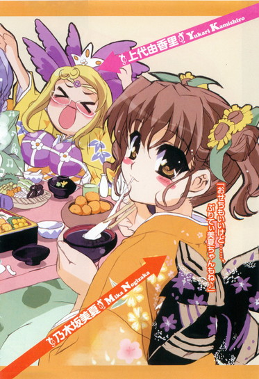
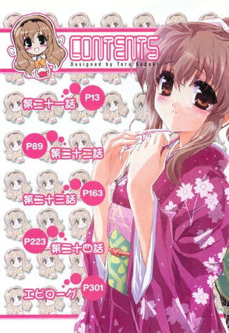
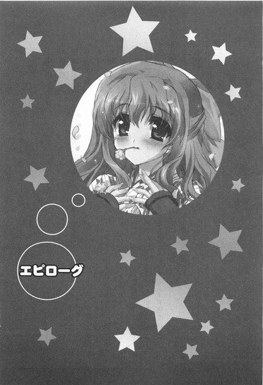

| [五十嵐雄策] 乃木坂春香の秘密06 | |
| 五十嵐雄策 | |
| (2015) | |
|
乃木坂春香の秘密 ６
五十嵐雄策
|
底本データ
一頁17行 一行42文字 段組１段
乃木坂春香の秘密⑥
容姿端麗で才色兼備、『白銀の星屑』という二つ名まで持つ超お嬢様、乃木坂春香。彼女の秘密を共有し、さらに激動（？）のクリスマスを一緒に過ごし、また一歩二人の仲も進展したかと思える今日この頃だったのだが......。
大晦日。一年を締めくくる一大イベント冬コミ。何故か俺と春香は同人誌を売っていた。コトの顛末を話せば長くなるものの、初めての冬コミで初めてのサークル手伝いをしつつ、春香の部屋で二人きりで作った初めての同人誌を一所懸命販売する。だが、そんな初めて尽くしで上手くいくわけもなく、俺は一年を締めくくるような春香の笑顔を見たくて──。
お嬢様のシークレットラブコメ第六弾（はあと）
五十嵐雄策
五十嵐雄策の秘密⑥。10月３日生まれのＯ型。第４回電撃ｈｐ短編小説賞最優秀賞を受賞し、文庫デビュー。最近、司法試験の話題もすっかりすることがなくなりましたが、もしかしたら密かに受けているかもしれません。だとすると、そろそろ結果の方が出る頃で......。
イラスト：しゃあ
しゃあの秘密⑥。本当のサークル名は「ねこバス停」です！本編の「ねこバス亭」とは微妙に字が違いますし、本編の「しゃあ」とも微妙に別人だったりと、フィクション満載!!



乃木坂春香の秘密 ６
人生には分岐点ってやつがある。
分岐する地点と書いて分岐点。
英語で言うとターニングポイント。
それが意味するところは、文字通りその後の人生を大きく左右するような分かれ道が生じたポイントということである。
人が生きていく上において何度かは必ず差しかかるモノ。
とはいえ、いざ分岐点に差しかかった時にそれがそうだと気付ける場面は決して多くはない。
ほとんどの場合は、分岐点を分岐点とも気付かずにただ通り過ぎるのみ。
例えるならクラスメイトが失くした財布をいっしょに探すかどうかとか。
または放課後の帰り道に寄り道をするか否かなど。
それ自体はそんな日常にいくつでもあるようなシチュエーション。
細かなモノまで数え上げればキリがないだろう。
「......」
何が原因でその分岐が決まるかなんてのは後で振り返ってみなけりゃ分からんことだが、振り返ってみた時には確実にその分岐の意味が浮き上がって見えるもんが分岐点なのである。
悪い意味で言えば後の祭りの究極形。
良い意味で言えは結果オーライの至高形。
それこそが人生におけるターニングポイントの本質である。
「......」
いや我ながらなんかいつにも増してワケノワカラン内容だな。ムダに抽象的で回りくどいっつーか。それだけ俺自身、現状に戸惑ってるってことかもしれんが。
まあ結局何が言いたいのかっていうと。
この年の瀬も迫る冬休みのある一日。
そこである意味人生の分岐点とも言える出来事に、俺も春香も直面しなけりゃならなくなったってことだけなんだけどね。
第二十一話
０
それは荒れ狂う冬の日本海のごとき波乱満載で、ダブルミニスカサンタ＆プリティートナカイ＆シロクマが大乱舞だったクリスマスから四日ほど経った木曜日──師走の最終日であり一年の終着駅でもある大晦日をもう明後日に控えたある穏やかな冬休みの日のことだった。
時刻は午前十一時。
俺は乃木坂邸の、全景を見ようとすると首があらぬ方向に曲がってムチウチになるんじゃないかってほど巨大な門の前にいた。
まるでどこぞの要塞みたいな堅固な造り。
ピンポンダッシュなんかした日には、即座に四方から機関銃でもぶっ放されそうである。
「......」
一瞬だけ誘惑に駆られるもののとりあえず無謀な挑戦を試みることはなく、獅子の顔を模ったオブジェの口の中にあるインターホンを鳴らすと、すぐに中から返事が戻ってきた。
『......はい』
「あー、ええと......」
この雨の前日のツバメ（低空飛行）みたいな声はおそらく葉月さんだろう。なので名乗ろうとすると、
『......裕人様ですね。お話は春香様から伺っております。少々お待ちください』
言うよりも早くそう返ってきて、
そして約三分後。
「......いらっしゃいませ、裕人様」
「四日ぶりですね～、お元気にしてらっしゃいましたか～？」
門の向こうからいつも通りに完全メイド姿の無口メイド長さんとにっこりメイドさんが姿を現した。
「......どうぞ、お入りください」
「春香様と美夏様がお待ちですよ～」
「あ、はい」
二人に先導されて敷地内へと入る。
乃木坂邸にやって来るのはおよそ一ヶ月ぶりくらいだったが、非常識なまでの広さ＆景観はこれっぽっちも変わっていなかった。
周囲に広がるほとんど自然保護区みたいな森。その傍を流れる小川に小さな湖。最も目立つ位置に置かれた熊と戦う春香父の石像（高さ二十メートル）。
「......」
うーむ、天王寺家での一週間の住み込みバイトでこういったセレブな（？）光景にも少しは慣れたつもりではいたが......やっぱりすげぇな。てかなんかオカシなもんが増えてるような気がしないでもないが、そこはスルーしとくべきなんだろう。
熊の前で両手と片足を上げて威嚇のポーズをとる春香父を眺めつつ石畳の道を進んでいく。
と、
「あ、そちらのエリアは気を付けてくださいね～。正規の道から外れますと対侵入者用の迎撃兵器が発動しますので～」
「え？」
「......〝アメフラシとウミウシとナマコ入りの落とし穴〟です」
「......」
いや迎撃兵器って......
てかこれ以上ないくらい精神的にクる落とし穴だな。
まあ色んな意味でアンビリーバブルな乃木坂家の仕様については今さら突っ込んでもアレである。なのでコメツキバッタの跳躍のごとく軽やかにスルーしておき。
「......」
さて、この辺でそろそろ今日の目的というか主旨を確認しておこう。
ここにいる理由。
そもそも何だって俺がこんな海産軟体生物との素敵ランデヴーの危険を冒してまで乃木坂邸を訪れているのかというと──
「は～い、玄関に到着ですよ～、裕人様～」
と、そこでにっこりメイドさんのこの上なく明るい声に思考を遮られた。
「ここから先は私たちのすぐ後に付いて入ってきてくださいね～。遅れますとこちらも迎撃システムが作動してしまいますので～」
「......〝たっぷりの樹液とカブトムシ入りのタライ爆弾〟です」
「あ、はい」
再びの物騒な発言に慌てて中へと足を踏み入れる。
「では奥にお進みください～。春香様のお部屋までご案内いたします～」
「......一名様、ごあんなーい」
そのまま二人に軽く背中を押されるようにして玄関ホールへ。
──まあ、いいか。
何となく途中で邪魔されるカタチになってしまったが、今日の目的についてはすぐに明らかになるだろう。別に焦ることもない。
そう思い廊下を進もうとして──
「あ、裕人様、そっちではないですよ～。春香様のお部屋はこっちです～」
「......そちらは玄冬様専用の根性注入部屋になります」
「......」
ちなみに案内がなければ春香の部屋まで辿り着く自信がまったくもって持てない（迷子＆遭難の危険性極めて大）ってのも、この屋敷の恐ろしいところなんだがな。
１
「あ、裕人さん、いらっしゃいませ♪」
玄関から十一分二十八秒ほどかけて辿り着いた部屋に入るなり、ふわふわのセーター姿の春香がぱたぱたとテディベアのキンググリズリーくん片手に嬉しそうな顔で迎えてくれた。
「お待ちしておりましたです。どうぞ、入ってください♪」
にこにこと笑いながら軽く手を引っ張ってくる。
それはこれ以上ないってくらいの純情可憐で極上な笑顔で......うーむ、これだけで門からここまでの長い道のり（生モノ＆甲虫トラップ付き）も報われるような気がするね。
春風に吹かれる野原の小さなタンポポのような幸せな気分に浸っていると、
「では私たちはお茶とお菓子の準備をしてまいりますね～。ごゆっくりしていてください～。あとで美夏様もいらっしゃると思いますので～」
「......何かありましたらお呼びください」
そう言って那波さんと葉月さんは部屋を出て行った。
後には俺と春香とキンググリズリーくんだけが残される。
「あ、どうぞ座ってください。そちらにソファがありますから」
「ん、おお」
春香に勧められてベッドの横にあるソファに腰を下ろす。
かわいらしい薄ピンク色のソファ。
それは以前（文化祭の翌日）ここに来た時にはなかったものだ。
「えと、これはこの間買ってもらったばかりのものなんです。ちょうど気に入ったものがあって」
「そうなのか？」
「はい。私の部屋にはゆったりと座れる場所がなかったですから......。それだと裕人さんがいらっしゃった時に何かと不便かと思いまして、思いきってお母様にお願いしちゃいました」
こっちを見て少しはにかんだように微笑む春香。その表情は、前よりもどことなく心を許したものになった風に見える。
「......」
文化祭を過ぎてからの春香の変化。
それはあのクリスマスでの色々な意味で刺激溢れる出来事を経て、また少しだけレベルアップしたような気がしないでもない。
いや具体的に何が変わったとは言えんのだが、何となく漂う空気が絞りたてのミルクのように濃厚になったというかよりお互いに対する意識率が上昇気流でエルニーニョになったというか......いや自分でもいまいち何を言ってるのか分からん上に相変わらず俺の勘違いって話も捨て切れんのだがな。
と、どことなくいい匂いのするソファに背をもたれさせつつそんなことを何となく考えていると、
「......あの、裕人さん、体調の方はもうだいじょうぶですか？」
「ん？」
春香が隣にちょこんと座ってそう尋ねてきた。
「えと、お身体の具合です。クリスマスに倒れられてからまだ四日しか経っていないので、少し気になって......」
心配そうな顔で見上げてくる。
「ああ、それなら大丈夫だ。もう一人でエアギターをできるくらいに元気だぞ」
実際問題、体調はすっかり完全快復していた。
医療メイドの鞠愛さんのクスリのおかげか春香の看病のおかげか──物理的には前者、精神的には後者の気がするが──とにかくあれ以来、アスファルトの隙間から強引に図々しく生えているペンペン草のごとき健康体だった。
「ほんとですか？ よかった......」
春香が安心したように胸を撫で下ろす。「やっぱり裕人さんは元気なお顔が一番です......」
「う......」
その顔は本当に俺のことを心配してくれていたのかつぶらな瞳でシッポをふりふりと振る仔マメシバみたいに健気で......思わずそのままギュッと抱きしめちまいたい衝動に襲われるのをグッと堪える。......いかんいかん、こんなお天道様から肌に有害な紫外線がしこたま降り注ぐような真っ昼間から何を考えてるんだ、俺は。
内心の微妙な動揺を誤魔化すべくブンブンと頭を四方八方に振り回して、
「──あ、あー、それじゃそろそろ始めるか？」
そう言った。
「え？」
「その、例のあれだ。昨日電話で話したことっつーか。善は急げって言うしな」
「あ、は、はいっ」
その言葉に、急に緊張したように春香がこくこくとうなずく。
「そ、そうですよね。今日はそのためにいらしてもらったんですし......」
思い切ったかのように顔を上げて、
「え、えと、それでは......あ、あの、不束者ですが、よろしくお願いしますです」
ソファに三つ指をつきながらしずしずと丁寧に頭を下げた。
「ん、ああ、こっちこそ......」
そんな風に改まって言われるとこっちまで緊張しちまうんだが。
潤んだ目でじっとこっちを見つめてきた春香と、ソファの上で正面から向き合う。
「......」
「......」
「あー、で、どうやればいいんだ？ 初めてだからうまくできないかもしれんのだが......」
「あ、そ、それは気にしないでくださいです。その、私も初めてですから......」
「そうなのか？」
「は、はい。今まではなかなかこんな気持ちになったことはなかったので......」
「そうか......」
それは意外といえばピラニアとティラピアが全く違う種類だってくらいに意外だったが、春香の遠慮がちな性格やこれまでの環境などを考えるともしかしたら自然なことなのかもしれん。
ともあれ、互いに初めてなら少しは気が楽になるってもんだ。
俺は軽く咳払いをして、
「それじゃあ──やるか？」
「は、はいっ。──あ、そ、その、できたら明かりは抑え目にしてもらえますか？あんまり明るいところでじっくりと見られると恥ずかしくて......」
「ん、分かった」
部屋の明かりをテーブルライトだけにし。
そしてコトを──今日ここに来た目的を始める。
「............思ったよりも、柔らかいんだな」
「そ、そうですか？」
「ああ、まるでマシュマロみたいというか......」
「あ、そ、そんなに触っては──。もっと優しく扱ってくださると......」
「ん、悪い。気持ちよくてつい......」
むう......けっこうデリケートなものなんだな。
「あー、これはここに付ければいいのか？ いまいち付け方が分からんというか......早くしないとこぼれてきそうだ」
「あ、へ、平気ですか？ え、えと、それは先の方に付ければだいじょうぶですから......」
「こうか？」
「あ、それでいいと思います。ば、ばっちりです」
「ん、分かった」
春香の言う通りに、長くて黒みがかった得物の先に必要物を装着する。
これで準備はオッケーだった。
「それじゃあ......いれるぞ」
「は、はい」
「最初はヘタで失敗するかもしれんが......それはガマンしてくれ」
「だ、だいじょぶです。覚悟はできています」
きゅっと目をつむる春香。
そしていよいよ本番ともいえる重要な行為をしようとして──
「ちょ、ちょちょ～っと待った～!!」
ばたん！
「!?」
と、そこでドアが勢いよく開かれてちんまい何かがローリングストーンのごとく部屋の中に飛び込んできた。
「お、おに～さんたち、いったいなにやってるの!?こ、こんな明るいうちから、そ、そんなアレなこと......っ！」
美夏だった。
真っ赤な顔で目をシロクロさせながら、両手とツインテールをぶんぶんと振り回してくる。
さらにはその後ろから、
「美夏様～、こういう場面にいきなり踏み込むのはまずいですよ～。ここはもう少し手順を踏んでやんわりと止めませんと～」
「......急いては事を仕損じます」
何やらコンクリートマイクらしきものを持ったメイドさんたちも慌てて顔を出す。
どうやらまた三人で盗み聞きをしてたらしいな......
「い、いいのっ！ そんな手順だとか言ってる場合じゃないでしょ！緊急事態だもんっ！」
「しかしですね～」
「......小さな恋のメロディー」
「と、とにかくおに～さん！ こ、こんなの絶対に許さないからね！こうゆうのはもっとちゃんと関係をはっきりさせてから進むものであって、今みたいな中途半端なままじゃだめなんだから！」
「いやダメと言われてもな......」
美夏の勢いに困惑しながら目の前のテーブルに視線を落とす。
そこには触り心地のいい柔らかな練り消しゴム、今にもインクがこぼれそうなペン先、まさにこれからペン入れを始めようとした原稿用紙があった。
「え......」
それを見た美夏の目がこれ以上ないってくらいの点になる。「あ、あれ......？」
「あの、私たちは〝どうじんし〟を作っていたのですが......」
不思議そうな顔で春香がつぶやく。
「ど、どうじんし......？」
「はい、〝どうじんし〟、です。ちなみに〝どうじんし〟とは出版社さんのお力を借りずに自分たちで作る本のことで、自分たちの好きなキャラを主人公にしたものなんですよ♪」
にっこりと笑顔。
「......」
「......」
「......」
沈黙。
やがて、
「て、てことはわたしの勘違い......？な、なんだ、それなら早くゆってよ～。わたしてっきり──」
「てっきり......？」
一体何と勘違いしてたんだ？
すると美夏は再び興奮した赤ベコみたいに真っ赤になって、
「！ な、何でもないよっ！ 何でもないっ」
「？」
「い、いいからっ！ 女の子が何でもないってゆったら何でもないの！も、もう、デリカシーがないんだから～」
「??」
首をひねる俺に。
「あらあら～、見事にトラの尾を踏んじゃいましたね～」
「......タイガーズテイル」
「......」
なんかよく分からんが、これについてはこれ以上は突っ込まない方が賢明らしい。
いまいち釈然としない気分だったが、とりあえずそう思い自分を納得させた。
──さて今のこの状況のそもそもの発端というか原因は、俺のアホ幼馴染み（♂）にある。
あの慌しかったクリスマスの三日後。
すなわち昨日の夜、いきなり信長からこんな電話がかかってきたのだった。
「あのさ裕人ー、明々後日のことなんだけどさー」
「明々後日？ 何だ、クラスで行く年越し＆初詣のことか？」
「あー、うん。まあそれもあるんだけどさー。裕人、その前の昼間って空いてるー？」
「昼間？」
「そう、だいたい午前から夕方くらいまでー。ちょっと頼みたいことがあってさー。大丈夫だよねー？」
「え、いや......」
一瞬返答に困る。
確かに去年までの俺ならば大晦日の昼間なんざヒマでヒマで思わず折り紙で門松（難易度Ａ）を折っちまうくらいヒマだったが、今年は少しばかり事情が違うのである。
今年の大晦日。
何でもその日には、いつかの〝夏コミ〟とやらの冬バージョンである〝冬コミ〟とやらがあるらしく、昼間は春香と一緒にそれに行くことになっているのだ。
なので、
「あー、悪いが明々後日は少しばかり用事があってな──」
言葉を濁しつつ断ろうしたところ、
「あ、大丈夫だよー。頼みたいことっていうのはたぶんその用事に関係あることだからー」
「え？」
「用事って、どうせ冬コミに行くんでしょー？うんうん、最近の裕人はこっち側にアグレッシブだからねー。アキバを巡回したり夏コミに来て並んだりー。そうだと思ったんだー」
「いやちょっと待て──」
勝手に決めるな......という言葉を俺が発する間もなく信長は、
「大丈夫大丈夫、みなまで言わなくていいよー。こういったことは言葉で確認することじゃなくてお互い感じ合うことだからねー。僕には分かってるからさー。いい傾向だよねー」
「......」
ちっとも分かってねえだろ。
だが信長はまったくもって気にせずに続ける。
「──で、頼みたいことなんだけどー、実はその冬コミに出る知り合いのサークルの手伝いをやってほしいんだよねー」
「......サークル？」
「うんー、何でも出展する人たちが本の完成の打ち上げでスッポンを食べ過ぎて鼻血を出して入院しちゃったみたいでさー。人がいなくて困ってるって話なんだー。本当だったら僕がやりたいところなんだけど、色々と忙しくてー。それに裕人も本格的にこっちの道を目指すならそろそろサークル活動くらい経験しておいた方がいいと思ってさー。ねー？」
「だからだな......」
「そういうわけでいいよねー？ あ、もちろんそれ相応のお礼はするし、代わりにって言うとあれなんだけどー、裕人も何か出品したいものがあったらいっしょに委託販売してもいいってさー。同人誌とか同人グッズとか同人ゲームとかー」
「......」
んなもんねえよ！
心の中で激しく突っ込む俺に、
「それじゃあよろしくねー。細かい話とかはまた後でメールするからさー。ここのところ色々と準備で忙しくてー。じゃ、またー」
「お、ちょ──」
「ばいばーい」
ガチャリ。ツー......ツー......
そこで電話は切れた。
相変わらず人の話を聞かねえっつーかマイペースなことこの上ないアホ幼馴染み（♂）だった。
「......」
......たく、あいつは......
思わず心の中で文句を言う。
とはいえカタチの上では（信長の中では）俺が了承したことになってるし、信長には何だかんだでここ最近色々と世話になっている（主に情報操作で）。無下に断るようなマネもしたくはない。
──いちおう春香に確認してみるか......
幸いというか何というか信長の用件にも冬コミとやらが関わっている。場所が同じならうまくすればどちらも回せるかもしれん。
なのであまり気が進まないながらもそのことについて春香に電話で伝えたところ、
「え、サークルさんのお手伝い......ですか？」
「ああ、そうらしいんだが......」
「〝冬こみ〟の日にサークルさんのお手伝いを、私が......？」
聞こえてきたのはどこかくぐもった春香の声。
そこからは明らかな戸惑いと深い動揺が感じられる。
「あー、やっぱりマズイよな」
いかに場所が同じとはいえせっかくの冬コミとやらである。春香は色々見て回りたいだろうし、いきなりサークルとやらの手伝いうんぬんはいくら何でもムリな相談だろう。やはりここは先約の春香優先ということで信長の方は断るしかないか──
と思ったのだが。
「──か、感激です」
「へ？」
「とっても感激です！ まさか私みたいな〝冬こみ〟初心者がサークルさんのお手伝いをできるなんて......」
電話口の向こうから返ってきたのは、そんな言葉だった。
「お手伝いということは売り子さんができるということでしょうか......？わぁ、サークルさんの売り子さん......あ、でも他にもお仕事がありますよね。列整理とか見本誌提出とか......」
「......」
「......お荷物運びとかお昼の買い出しとかも......。──あ、そ、そういえばそのお手伝いですけれど、何かを出品してもいいというお話......なのですよね？」
矢継ぎ早に言葉を続けてくる春香。
「ん、ああ、そうらしいが......」
確かに信長はそう言っていた。何でも冬コミとは夏コミと同じくみんなが作った同人誌とやらを出し合うところで、サークル関係者は自由にそういったものを出していいとか。まあ俺にはおよそ関係のない話だったので適当に聞き流してたんだが。
「そ、そうなのですか......」
そこで春香は少しためらうような声音になって、
「......あ、あの、で、でしたらその、私、〝いらすと集〟を出してはだめでしょうか......？」
「え？」
小さな声でそんなことを言った。......イラスト集？
「え、ええと、ここ半年くらいで描きためたイラストを集めたものです。も、もしよろしければ、それを〝どうじんし〟として出してみたいなあ、って......」
恥ずかしそうに言う。
──ああ、そういえば色々あって半分くらい忘れかけてたが、春香はイラスト（ナチュラルボーン妖怪画）が趣味だったんだっけな。
「ど、どうでしょう？ あ、ム、ムリそうならいいんですが......」
「ん、いいんじゃないか？ 出すものは何でもいいらしいしな」
「ほ、ほんとですか？」
「ああ。大丈夫だと思うぞ」
「あ、ありがとうございますっ。──あ、だ、だったら今から急いで完成させますね！」
そんな言葉が返ってきた。
「......完成？ って、できてるわけじゃないのか？」
「えと、はい。その、出せるのだとしたら〝こぴー本〟というものにしたいのですけれど、それだとまだ表紙にあたる部分とその他何枚か新しく描かないといけない場所がありまして......」
そう言ってくる。
ふむ、コピー本とやらについてはよく分からんが、とりあえず色々と大変ってことだけは確からしい。だったら、
「それって、俺でも手伝えるのか？」
「え？」
「よく分からんが大変なんだろ。手伝えればと思ってな」
そう言った。
こんな厄介というか、少なからず面倒なことに巻き込んじまうせめてもの返礼だ。
「それは......そうしていただければたいへん助かりますけど......でも、申し訳ないです」
「申し訳ないなんてことないぞ。もともと俺の事情に付き合わせちまうわけだし、俺にやれることがあれば何でもやるから、言ってくれ」
「......」
その言葉に春香は電話の向こうで少し迷っているようだったが、やがて、
「で、でしたらぜひお願いします。こういったことは初めてですし、実のところ一人で全部をやるには少し大変で......」
「ああ、任せてくれ」
そういうわけで冬コミとやらの打ち合わせも兼ねたイラスト集作成の手伝いで春香の家へと行くこととなり。
こうして今に至るというわけである。
２
「あ～、もう、ほんとにおに～さんは人騒がせなんだから～」
クッションを胸にソファにぱふっと座りながら、美夏がぷく～っと頬を膨らませた。
「よく分かんないけどお絵描きしてるならお絵描きしてるってちゃんと言ってよね。そうすればこんなに大騒ぎになることはなかったんだから～」
「いや騒いだのは美夏だけなんじゃ......」
思わずそう言いかけるも、
「裕人様～、そこは素直に受け取って謝っておくのが殿方の嗜みというものですよ～」
「......鴨も鳴かずばネギといっしょにお鍋にされまい、です」
「......」
にっこりメイドさんと無口メイド長さんの二人に左右から即座にそう五寸釘を刺されては、俺としてはもう黙るしかない。
そこはかとない理不尽な気分を噛み締めていると、
「でさでさ、まあ悪いのはおに～さんってことでふぁいなるあんさ～として、結局お絵描きってどんなの描いてるの？ちょっと見せて～」
「あ......」
作業中のテーブルの上に美夏が横からひょいと顔を覗かせて、
「............」
そして、直後に日光東照宮に生息している言わ猿にでもなったかのように黙りこんだ。
「えと、どうですか？ ちゃんと描けているでしょうか......？」
何かを期待した目で尋ね返してくる春香に、
「え、えっと......これってなに？ なんか頭に骸骨みたいなのが二つ付いてて手にハンマーみたいなの持ってて............妖怪ガシャドクロ？」
首をひねりながらドクダミを生のまま食べてしまった仔猫みたいな顔で何とか答える。ちなみに最後の部分（妖怪ガシャドクロ）だけは春香に聞こえないように小声で言ったのは最後の良心といったところか。
だがそんな美夏の気遣いも何とやらに春香は実にすこやかな表情で、
「あ、えとですね、それは『ドジっ娘アキちゃん』です」
「ど、どじっこあきちゃん？」
「はい。魔法服ヴァージョンで、手に持っているのはマジカルフォルテッシモステッキなんですよ♪」
「......」
「どうでしょう、春くらいから裕人さんに見てもらっていて、だいぶ上達したような気がするんですが......」
にこにこと答える春香。
「......」
「......」
「......」
しばしの沈黙の後。
「......そ、そなんだ。うん、まあ色々と大変だと思うしよく分かんないけど、わたしも陰ながら応援してるからがんばってね」
ツインテール娘は微妙に顔をそむけながらそうコメントした。
どうやらもはやこの件には関知しないことに決めたらしい。賢明な判断と言えよう。
それからしばらくの間、作成作業を再開しつつも美夏たちと世界三大珍獣についてやら好きなゴーフレットについてやらの話で盛り上がっていたところで、
「......お楽しみのところ申し訳ありませんが春香様、そろそろピアノのレッスンのお時間です」
葉月さんが壁の鳩時計（鳩が十五羽ほど付いている）に目をやりながらぽつりとそうつぶやいた。
「え、もうですか？」
「......はい。あと十五分ほどで先生がいらっしゃることかと」
「あ、ほんとです......。楽しい時間は過ぎるのが早いんですね......」
しょんぼりとした顔で春香はそうつぶやいて、
「あの、すみません。そういうわけで、その、私、ちょっとだけ行かないと......」
すまなそうに言う。どうやら色々と（美夏との勘違いやり取りとかその後の他愛ない雑談とか）やってる内に、習い事の時間になっちまったらしいな。
「ああ、気にするなって。ピアノのレッスンなんだろ」
「は、はい。申し訳ございませんです」
スカートの裾に手をやりながら立ち上がって、
「え、えと、ゆっくりとくつろいでいてください。四十五分くらいで戻ってまいりますので......」
「お姉ちゃ～ん、がんばってきてね～」
「春香様、ガッツです～」
こちらを気にかけながら、葉月さんといっしょに春香はぱたぱたと部屋を出ていった。
後には必然的に、俺と美夏と那波さんの三人が残される。
「さ～て、おに～さん、どうする？ お姉ちゃんが戻ってくるまでわたしたちと楽しく青ヒゲ危機一髪ゲーム（罰ゲーム付き）でもする？それともいつかみたいに人生ゲームとか？」
美夏が楽しげにそんなことを言ってくる。
「そうだな......」
春香はくつろいでいてくれと言っていたが、そういうわけにもいくまい。
目の前にある作りかけの〝同人誌〟とやら。
明後日に出品（？）ということは少なくとも明日までに完成させなければならない以上、あまり時間があるとは言えん。できるところは少しでも進めておくべきだろう。
「──いや、作業の続きをやる」
「え、そなの？」
俺の言葉に美夏は少しばかり驚いたような顔を見せた。
「ああ。時間をムダにできないからな」
「へ～、真面目だね、おに～さん」
意外そうな声を上げる美夏を横目に、作業を再開する。
作業の進め方は春香に教えてもらい一通りは理解していた。
大ざっぱに言ってやらなければならないことは下書きとペン入れ、スクリーントーンとやらの張り付けと色塗り。それらの内、俺の分担は主に消しゴムかけとベタ塗りとスクリーントーンとやらの張り付けである。
慣れないというか何もかも初めての作業だが、とにかく一つずつやっていくしかない。
「むう、ここのこれをこうして......」
「......」
「いやこれはこうか......」
「......」
「違うな......うーむ......」
原稿の中央でクワっと目を見開く、手に時限爆弾らしきモノを持った怪人赤マントのようなもの（推定表現×二）へのスクリーントーン張りに苦戦していると、
「ふ～ん、おに～さん、がんばるね～」
横から美夏が、チョコがたっぷりのガトーショコラをぱくつきながら再び声をかけてきた。
「ん、そうか？」
「うん、さっきからすっごい真剣な顔してる。まるで好きな女の子のおはようからお休みまでその全てを逃すことなく全身全霊をかけて見つめるストーカーさんみたい」
「まあ......春香のためだしな」
そのたとえは正直どうかと思ったし対峙してるもんは怪人赤マントなんだが、真剣にやっているのには違いなかった。コピー本の同人誌とやら。春香が出したいというのなら、何とか力になってやりたいしな。
「へ～、そなんだ。ふ～ん......」
「......変か？」
「ん～ん、い～んじゃない？ そうゆうのって悪くないと思うよ。まっすぐってゆうかシンシってゆうか」
ちょこんとツインテールをかたむけながらじ～っと顔を見つめてくる。
「......からかうなって」
「からかってないって。褒めてるんだよ、うん。ね、那波さん」
「ええ～、一生懸命な男の子の汗はとってもステキですよ～」
那波さんまでにこにことそんなことを言ってくる。
「ほらほら～、愛するお姉ちゃんのために不器用な農耕馬みたいにがんばらなきゃ♪」
「ラブ・イズ・パワーですね～」
「......」
そんな感じでにやにや笑いの美夏と那波さんの小悪魔コンビに弄られつつも作業を進めていき、
きっかり四十五分が経ったところで、
「え、えと、ただいま戻りました」
かちゃりとドアが開き、春香が帰ってきた。
「お、戻ってきたか」
「あ、はいです」
よっぽど急いできたのか、楽譜を手に肩で息をしながら部屋の中に入ってくると、
「──あ、もしかして進めておいてくれたんですか？ありがとうございますっ」
俺の手元にある原稿を見て、嬉しそうに頭を下げた。
「わあ......『プリンセスナオちゃん真紅ヴァージョン』ができてます。手に持ったメトロノームまでこんなにきれいに......」
「メトロノーム......」
どうやらさっきまで俺が苦戦していた時限爆弾のようなモノはメトロノームだったらしい。確かに秒針みたいなもんが付いてるって点では共通してるが......。まあそれ以前にこの怪人赤マントが『プリンセスナオちゃん』とやらだってことも初めて知ったんだが。
「ほんとうにありがとうございますっ。裕人さんにこんなにがんばっていただいて、私がお休みをしているわけにはいきません。私もがんばります」
「ん、ああ」
「ふぁいと、ですっ」
両手をぎゅっと握り締めて気合を入れた春香を加え、作業を再開する。
再び始まるペン入れ、スクリーントーン張り、消しゴムかけ、などの繰り返し。
カリカリとペンを動かす音が部屋の中に響く。
そして一時間ほどが経ったところで、
「......春香様、間もなく華道の稽古のお時間です」
再度、葉月さんがぼそりとつぶやいた。
「え、あ、もうですか？」
「......はい、あと十分ほどで。その後には茶道の稽古も続いていますので、一時間半ほどのお時間を見ていただければと」
「そ、そうなのですか......」
その言葉に春香は俺の方を見るとおずおずと頭を下げて、
「ほ、ほんとうにすみませんっ。何というか、その......」
「あー、いいって」
「で、ですが......」
「気にすることない。稽古ならしょうがないだろ」
やむを得ない事情ってやつだ。
「そう言っていただけると......。ほ、ほんとにすみませんです......」
心底申し訳なさそうな顔で、何度もぺこぺこと頭を下げながら春香は稽古へと向かって行った。
その後ろ姿を見送りながら美夏に尋ねる。
「......なあ、春香っていつもこんなにハードスケジュールなのか？」
「ん？」
「こんな、ほとんど休むヒマもないみたいな......」
「あ～、そだね。うん、だいたいこんな感じだよ。今は年末だから少なめな方かな。忙しい時とかは分刻みで動いてたこともあったし、『黒真珠』で世界のあちこちを移動してたなんてこともあったかな～」
「......」
そうなのか......
何十も稽古事をやってるってことは話では聞いていたものの普段は春香がそういった素振りを見せないためついつい忘れがちになっていたが......こうして実際にその状況を目の当たりにしてみるとその超絶お嬢様っぷりを思い知らされる。なんつーか、世界お嬢様協会公認全世界お嬢様検定特一級にも余裕で合格しそうな勢いだ（んなもんがあるかは知らんが）。
「......春香はスゴイな」
「そりゃそうだよ～。普段はどじばっかりしてるからあんまりそうは見えないかもしれないけど、何てったってあれで乃木坂家の長女で跡取りなんだから」
「むう......」
確かにその言葉は説得力があるな。最も分かりやすい例っつーか。
微妙に納得しつつ再び春香抜きでの作業を始める。
春香が戻ってきたのは、やはりきっかり一時間半後だった。
３
まあそんなこんなで春香が習い事に行ったり戻ったりまた行ったりを繰り返しつつ時々美夏たちと雑談をしながら同人誌の作業を進めていき、
「......」
気付けばけっこうな時間が経っていた。
俺が乃木坂邸にやって来てからおよそ六時間。
窓の外から入ってくる光もすっかり北海道産バフンウニみたいな濃いオレンジ色に変わっている。
「ふう......」
思わず口から疲労のため息が漏れる。
さすがに昼からぶっ続けでやってただけあって全身の疲れはほとんどピークに達していた。腕から肩にかけてバキバキというか。いいかげんここいらで一休みするべきだろう。
描きかけの原稿用紙を脇にどけ、服についたスクリーントーンの切れ端を払って、テーブルの上に上半身を伸ばす。
ちなみに春香は現在、本日五つ目の習い事である日本舞踊へと行っていてここにはいない。あと三十分もすれば帰ってくるとの話だが、それまでは作業をしているのは俺だけである。
「疲れた......」
テーブルの上でとろけたゼリー（ノド越しさわやか！）のようにグッタリとしていると、
「お疲れさま、おに～さん」
「よろしければキャンブリックティーとショートブレッドでもどうですかー？美味しいですよ～」
「お......」
美夏たちがそんなことを言いながらティーカップとケーキプレートが載ったトレイを差し出してきた。
「おにーさん、ほんとがんばってたよね～。甘いから、疲れがとれるよ～」
「糖質効果というやつですね～」
「あ、サンキュな」
礼を言って、湯気を上げる紅茶といい匂いのお菓子を受け取る。
色味としては茶というよりも黒に近いその紅茶はハチミツと牛乳の優しい味が絶妙な配分で、美夏の言う通り疲れた身体にじんわりしっとりと染み込んでくるかのようだった。むう、うまいな......
ソファに背中を預けながら少しだけセレブな気分でゆっくりと味わっていると、
「へへ～、おに～さん♪」
「ん？ おわっ」
いきなり美夏が後ろからがばっと抱きついてきた。
「お、おい」
「どう、おいしい？ まろやか？ それ、わたしが淹れたんだよ♪」
そのままごろごろとまとわりついてくる美夏。
「こ、こら......」
何するんだ、いきなり!?
思わず声を上げると、
「だっておに～さん、ずっとお絵描きばっかで全然わたしに構ってくれなかったんだもん。これはその分のツケなんだから～」
「んなこと言われてもな......」
それはしょうがないだろう。そもそも今日ここにやって来たのはそのお絵描きが目的なわけだし。
だが美夏は、
「ん～、それは分かるけどさ～、同じ部屋の中にこ～んなにぷりてぃ～はに～な美夏ちゃんがいっしょにいるんだから少しくらいどきどきとかむらむらとかしてくれたっていいじゃん。男の子としてそれはどうかと思うよ？」
そんな微妙に勝手なことを言いながらさらにじゃれついてくる。む、なんかいつにも増してやたらと甘えモードだな。なんかあったのか？
そこはかとなく困惑する俺に、
「裕人様～、美夏様はきっと寂しいのですよ～。裕人様が先ほどから春香様のことばかり気にかけてらっしゃいますから～」
「え？」
那波さんがそんなことを言った。
「それに最初のアレな一件もありますからね～。壮絶な勘違いとはいえ、裕人様が遠くに行ってしまいそうに感じたのではないですか～？こう見えて美夏様は寂しがり屋さんですし～」
「な、那波さん!?」
美夏が顔を真っ赤にしてぱっと俺の背中から離れる。
「な、何言ってるの！ わ、わたし、さみし～なんてそんなこと一言も......」
「まあまあ～、美夏様もたまには素直になられた方がかわいいと思いますよ～。せっかくのチャンスなのですから～」
にっこりと首をかたむける那波さん。
その完全に微笑ましいものを見る目にさすがの美夏も勢いが弱くなる。
「も、もう、那波さんはほんといいかげんなことばっか言うんだから......。それにいっつもわたしを子ども扱いしてさ......ぶつぶつ......」
「......」
まあ那波さんの言っている内容はともかくとして、このツインテール娘が何だかんだでお子様なのは別に間違ってないんじゃないかと突っ込みたくはなったものの、わざわざダイナマイトを前にして火打ち石をかき鳴らすこともなかったため、とりあえずこの場は避けておくことにした。
「と、とにかく、その件はもう終わり！ の～かうんと！いい？」
「ん、あ、ああ」
俺がうなずくと美夏は改まったように咳払いをして、
「──え～、こほん、それじゃ本題。あのさおに～さん、せっかくうちまで来たんだし、いいものがあるんだけど、見てみたい？」
そんなことを言い出した。
「いいもの？」
「うん、そ。おに～さんの活きのいい十代の交感神経がと～っても刺激されそうなものだよ♪」
「......」
それがいいのか悪いのかいまいちよく分からんのだが。
目の前にキャットフードを置かれた犬のような顔になる俺に、
「──じゃじゃ～ん、これは何でしょう～？」
「それは......」
そう言って差し出された美夏の手に掲げられていたのは一冊の革製のアルバム。
その分厚い革（......クロコダイル？）に覆われた表紙に、「乃木坂家～その栄光と絢爛の記録～第拾参巻」と書かれている。
「うちのアルバムだよ♪ 門外不出の秘蔵の一冊で、お姉ちゃんの子供の頃とかその他もろもろが赤裸々に記録されてま～す。お絵描きするのもい～けど、やっぱりせっかく来たんだからこうゆうのが定番だよね～」
「むう......」
「ね、いいものでしょ？ 見たい？ 見たい？」
にこにこと笑いながら目の前にアルバムをちらつかせてくる。
「いや、それは......」
確かに昔の春香への興味は山ほどあるし、アルバムといえばクリスマスの時にいつか見せてくれるようなことを言っていたが......それにしたって勝手に見てもいいものなのか？
「ん、いいっていいって。別に見せちゃまずいようなものが写ってるわけでもないしお姉ちゃんだけが写ってるわけじゃないし。それにお姉ちゃんもきっとおに～さんに見てもらいたがってると思うよ♪」
いたずらっぽく笑う美夏。
それならまあ──いいの、か？
「......分かった。見せてくれ」
俺がそう言うと、
「うん、そうこなくっちゃ♪ それでこそおに～さんだよ」
ぱちりとウィンクをして、嬉しそうにうなずいたのだった。
「じゃおに～さん、こっち来て」
にっこりと笑って美夏がとことこと歩いていったのは......なぜか部屋の奥にあるベッド（天蓋付き）の上だった。
ぱふんと座り込むとそのまま手招きをして、
「ほら、ここここ、早く早く～」
「......ちょっと待て。何だってそんなとこなんだ？」
別にアルバムを見るだけならここ（ソファ）でいいだろ。
「何でって、も～、分かってないな～。こうゆうアルバムとかを見るのはベッドの上で二人並んでごろごろしながらって決まってるじゃん。それにテーブルの上はお絵描きの紙でいっぱいでしょ？アルバムを置く場所がないもん」
「......」
まあ後者についてはそれはそうだが......前者についてはそういうもんなのか？
首を六十五度くらい捻りつつもとりあえずは言う通りにベッドの上に腰を下ろす。「うんうん、さすがおに～さん♪」と美夏が満足げにうなずいた。
「さ、それじゃご開帳～♪」
ツインテール娘のそんな声とともにアルバムが開かれる。すると──
「おお......」
そこにいたのはピアノにちょこんと座り込んでいる小さな春香。
台で底上げされたペダルを一生懸命な表情で踏み込んでいるかわいらしい姿の脇に、「はるか、ごさい」と書かれた達者な文字（毛筆）が添えられている。
「春香、こんな小さい頃からピアノを弾いてたのか」
「うん、そだよ。てゆうか正確に言えば二歳からかな。物心がついた頃にはもうテレビの音とかを聴き取っておもちゃのピアノで弾いてたってゆうし」
「むう......」
とすればすでにピアノ歴十五年。その腕がプロ級なのもうなずけるかもしれん。
「こっちは茶道の稽古中のか？華道とか日本舞踊らしきものもあるな」
「その辺は四歳くらいから始めたって聞いてるよ。他にもその頃から書道とか古武術とかもやってたって。ちなみにそこに書かれてる毛筆はみんな当時のお姉ちゃんが書いたんだよ」
「......」
五歳にしてすでに今の俺の三十八倍くらい達筆なんだが。
高校に入ってすぐ担任教師に「お前の字は顕微鏡で見た腸内のビフィズス菌みたいだな......」と言われて通信教育のペン字講座を習おうかと三日ほど真剣に悩んだ身としてはちょっとしたショックを受けつつも、とりあえず気を取り直して他の写真にも目を移してみる。
「──お、これはもしかして美夏か？」
ピアノを弾いている春香の写真の右隣。
そこには今よりもさらにちんまいツインテール姿の女の子が、額に「アレキサンダー」と書かれ四つんばいになった春香父の背中に仁王立ちして、さらにばりばりのカメラ目線でピースをしている写真があった。
「あ、それは......」
「ええ、そうですね～。美夏様は小さい頃からやんちゃでしたから～。一人でお屋敷を抜け出して伊豆の温泉旅館までゆで卵を食べに行ってしまわれたり、玄冬様にドロップキックを喰らわせて失神させたり、遠足に行った帰りにイノシシを餌付けして拾ってこられたりしたこともあったんですよ～」
「ん～、まあ若気の至りってゆうのかな？わたしもまだまだ子供だったからさ～」
てへへ、と笑う。
「......」
昔からそういうキャラだったんだな、このツインテール娘は......
「ん、こっちのこれは......葉月さんか？」
「あ、おに～さんよく分かったね。髪型とか違うし、葉月さんは意外に分かりにくかったりするのに」
「......いやチェーンソーを持ってる女子高生（セーラー服）なんて他にいないだろ......」
機関銃とか鋼鉄製のヨーヨーとかならまだともかく、さすがにチェーンソー持ち女子高生は二人といまい。てかいてもかなりイヤだ。
「これは那波さんか。昔からサングラスをかけてるんですね......」
「あらら、お恥ずかしい。それは今では流行遅れのフレームなのですよ～」
「......」
恥ずかしがるところはそこじゃない気がするんですが。
「秋穂さんだけは全く変わらんのだが......」
「ん～、お母さんは昔から童顔だからね～。そのせいじゃない？」
「......」
にしたって十年以上前から変化がないって、童顔の一言で済ませられる問題か......？
「......」
まあそんな感じに、春香を始めとした乃木坂家にまつわる主要人物の過去の姿を見ていて、
「──ん？」
一枚の写真を発見した。
ページの片隅にひっそりと張られている、見慣れない制服に身を包んだ春香がぎこちなく微笑んでいる写真。
「これって......」
「あ、それは聖樹館の制服だね。中学校のやつかな。幼稚舎・小学校ば～じょんと中学校ば～じょんの二つがあって......ほら、こっちにあるのが幼稚舎・小学校の時の」
「聖樹館......」
「うん、そう。お姉ちゃんの前の学校だよ」
「......」
そうか。そういえば、春香は中学までは全国でも有数の超お嬢様校な聖樹館女学院（挨拶はごきげんよう）に通ってたんだっけか。そして確かその頃に趣味がバレて高校からは白城学園に通うことになって──
「ん～、まあおに～さんには前にも話したと思うけど、この時期はお姉ちゃんも色々あったからね～」
美夏がちょっと複雑そうな顔になる。
「やっぱりあんまりいい思い出じゃないって感じなのかな。写真も少ないし、この頃のことはお姉ちゃんもほとんど話してくれないし......」
確かに中学の制服姿の写真はほとんど見当たらない。
僅かにあるのは入学式と卒業式、その他の節目節目の行事のもの。それと当時のクラスメイトなのか、上品そうないかにもお嬢様といった女子たち数人に囲まれて少し困ったように遠慮がちに微笑んでいるものくらいか。
「......」
やはり春香にとって、まだこの時のことは忘れがたいイヤな思い出なのだろうか。
趣味がバレて周りの友達が離れていった苦い過去。
そのほとんどトラウマと言えるようなものを三年近くも経つ今でも引きずっていて──
「......」
......やめだやめだ。
当の本人である春香がいないのに、俺だけがそんなことを勝手に考えても仕方がない。
それにこのことはおそらく俺の方から不用意に持ち出していい話じゃないだろう。いつか春香が自分から向き合おうとした時に、その時に初めて問題にすればいい話だ。
「......」
「おに～さん、どうかした？ なんかすっごい怖い顔してるよ？」
美夏が怪訝そうに見上げてくる。
「ん、いや、何でもない」
「そなの？ なんか心霊写真でも見つけちゃったのかと思った」
「そういうわけじゃないんだ。悪いな」
適当にページをめくりながらそう答える。
と、そこで。
「あれ、何を見ているんですか？」
ガチャリと部屋のドアが開き、日本舞踊の稽古を終えたのか春香が戻ってきた。
「春香......」
「あ、お姉ちゃん、お帰り～」
「はい、ただいまです。──あ、アルバムですか？」
「うん♪ 昔のやつ。お姉ちゃんもいっしょに見るよね？」
「あ、はい。ぜひ......」
嬉しそうに声を上げて俺の隣（春香のベッド）にぽふっと腰を下ろす。咲きたての花のような柔らかくいい匂いがふんわりと鼻をくすぐった。
「わあ、それって昔の葉月さんですよね？懐かしいです」
「ね～、この頃はみんな若かったよね～」
「ふふ、まだそこまで昔のことじゃないじゃないですか」
ちりばめられた写真を見ながら楽しそうに微笑む春香。
どうやらアルバムを見ること自体には特に抵抗はないらしいな。
何となく一安心しつつ、春香（と音もなく共に戻ってきていつの間にか横にいた葉月さん）も加えた五人でアルバム見学を続行していく。
ところがあるページに差し掛かったところで、
「あ、そ、その写真は──」
「？」
ふいに春香の表情が固まった。
まるであってはいけない何かを見つけてしまったみたいな表情。
何だ、やっぱりなんか古傷を刺激しちまうような中学時代の写真でもあったのか？
だが俺が事情を確認するよりも早く春香は素早く反応して、
「え、えと、その......すみませんっ」
アルバムから一枚の写真をめくり取ろうと立ち上がりかけ、
「あっ──」
いつものドジ属性がいかんなく発揮され、春香の手から写真がはらりと落ちる。
そこに写っていたのは──
「......水着？」
水着姿の、春香だった。
小学校低学年くらいの頃のものなのか、ビニールプール（空気をシュコシュコ入れて膨らませるアレな）の中にちょこんと座り込んで、足で水をぱちゃぱちゃと叩いて遊んでいる。
「......？」
何でこれを隠そうとしたりしたんだ？
微妙に理解に困りながら眺めていると、
「あ、み、見ちゃだめですっ」
「え、や」
「は、恥ずかしいです......」
「......」
......いや。
......これはそんな桜餅みたいに顔を真っ赤にするほど恥ずかしいもんなのか？
いつかのハッピースプリング島ですでにリアルでライブな水着姿（純白イノセントビキニ）を拝見している以上、今さらって気もしないでもないんだが......
しかし、
「ん～、おに～さんもまだまだだな～。女の子はね、こうゆうちょっと昔の姿を見られる方が恥ずかしいんだよ？」
「微妙な乙女心ですね～」
「......修行不足」
「......」
......そういうもんなのか？
うーむ、女心ってやつはいまいち分からんね。
４
で、そんな色々と中身の濃い休憩時間を経て、その後も同人誌作成の作業は続けられた。
再びのベタ塗り＆スクリーントーン、消しゴムかけ作業。
春香もあれから三つほど稽古事を終え一段落したらしく、途中からはずっと二人がかりで作業をしていたが、それでも何せ量が多い。結局全部は終わらないまま夜になってしまった。
「あ、もうこんな時間か～。そろそろ夕ご飯だね～」
テーブルの横でもむもむとレアチーズケーキを食べていた美夏が時計を見ながら言った。
「ね、おに～さんたち、この辺で休憩にしてご飯にしよ～よ。色々と忙しかったから、わたしもうお腹ぺこぺこになっちゃった」
「いや美夏はほとんど何もしてないだろ......」
アルバムを持ってきた以外は、時折興味深そうにちらちらと原稿を眺めながらほとんど食べたり飲んだりちょっかいを出してきたりしてただけである。
「も～、相変わらず細かいな～。そうゆう重箱の隅をマチ針でつつきまくる男の子はもてないよ？」
「ぬ......」
「ほらほら、それより早く行こ。もちろんおに～さんも食べてくでしょ？今日は小鮎さんが担当の日だから楽しみだな～♪」
「？ 小鮎さん......？」
また聞き慣れない名前が出て来たな。
「あ、えと小鮎さんはですね、メイド隊における序列第六位の方で、おうちの料理長もしてくださっている凪川小鮎さんのことです。とってもシャイな性格をしているので人前に出て来ることはあまりないのですが......」
春香がそう説明をしてくれる。ふむ、つまりは調理能力に特化された料理メイドさんか。相変わらず色々いるんだな、メイド隊......
まあそれはともかくありがたい申し出だった。
長時間に亘る肉体作業（主に黙々とスクリーントーン削り）で腹も減ったし、まさにナイスタイミングといった感じだ。
「ああ、それじゃありがたく......」
なので二つ返事で受けようとして、
「──あ」
と、そこで思い出した。
「ん、どしたの、おに～さん？」
「......ルコたちの食事の支度をしてきてなかった」
「ルコ......ってルコおね～さんの？」
「あ、ああ」
当初の予定では今日はそこまで遅くなることは想定していなかったため、ワン公たちの夕食を用意してきていなかったのだ。これを放置した場合、ヘタをするとあの飢えた野獣どもがいつかの天王寺邸と同様に俺を探して乃木坂邸を襲撃する恐れがある。それは何としても避けねばなるまい。
「......とりあえず連絡して適当に冷凍食品でも食べさせるか......いや待てレンジで解凍なんて高度な技術をヤツらがやれるわけも......」
かつてレンジで洗濯物を乾かそうとしたやつらにそれはあまりにオーバーテクノロジーな注文ってもんである。まだリアルに犬にチルドボタンを押させる方がラクっつーか。むう、こうなったら最終手段の出前を使うか。いやしかしそれをやると今月の食費が......
我が家の二大問題児（共に来年で二十五歳）の処置について真剣に悩んでいると、
「ん～、てゆうかそれならもっと簡単な解決方法があると思うけど」
「......え？」
「よく分かんないけど、要はルコおね～さんたちが無事にご飯を食べられればい～んだよね。ならちょっと待ってて」
「？」
そう言うと美夏はおもむろにポケットから携帯（ピンク色）を取り出し通話ボタンを押すと、
「──もしもし、あ、沙羅さん？ うん、わたし。あのさ、ちょっと頼みたいことがあるんだけど今だいじょぶかな？うん、そう。場所は分かるよね？はーい、それじゃよろしく～♪」
それだけ言ってパタリと携帯のフリップを閉じた。
「何をするつもりなんだ......？」
「まあい～からい～から。おに～さんは指回し運動（頭に優しい）でもしながら待ってて」
「??」
ワケが分からぬまま首をひねる。
そして十分後。
「むう、ここが乃木坂さんの家か......」
「あらら、すご～い。おねいさん、感激～♪」
我が家のアホ姉とその親友のセクハラ音楽教師が俺の目の前にいた。
「これは......」
「へへ～、『冬将軍』で巡回に出てた沙羅さんに頼んでおね～さんたちも夕飯に呼んだの。これならおね～さんたちは無事にご飯を食べられて、おに～さんもゆっくりと夕食を楽しめるでしょ？何てゆうの、逆転の発想ってやつ？」
ツインテールをふりふりしながら美夏が楽しそうに言う。
「確かにそれはそうだが......」
だけど普通実行に移さねえだろ......
しかもその発想（飛ばぬなら戦闘機に乗せて飛ばそうホトトギス）もさることながら呼んでから僅か十分で到着ってのが恐ろしいな。ウチから乃木坂邸まで電車と徒歩とで一時間近くはかかる距離だってのに......
「まあまあ、細かいことは冥王星の脇にでも置いといて。それよりこっちこっち」
「ん、ああ」
「ルコさんと由香里先生もどうぞ。こちらになります」
「おお、ありがたくご相伴させてもらうぞ」
「いい生徒を持っておねいさん幸せだわ～」
というわけで、美夏たちに先導されて食堂へと向かうこととなった。
食堂は、春香の部屋から徒歩三分ほどの距離にあった。
『本邸内第四食堂・大朱雀の間』と銘打たれた大広間。
ちょっとしたホテルの披露宴会場くらいはある広さに、辺りに配置された様々な調度品。ギラギラと小さな太陽のように輝くシャンデリアに照らされた空間の中央には、高価そうな白いクロスに覆われたどでかい丸テーブルが置かれている。
「あ、裕人さん、どうぞこちらへ」
「ん、サンキュ」
春香に勧められて席に座る。
席の並びは春香から時計回りに、俺、美夏、ルコ、由香里さんの順番となっていた。
葉月さんと那波さんのメイドさんコンビは、いつも通りにひっそりと壁際に並んで高価な置物のように静かにたたずんでいる（メイドの定位置）。
ちなみに春香父と秋穂さんは今日はそれぞれ北アメリカで行われている熊狩り選手権とフランスで開催されている料理大会に行っていて不在らしい。どっちもどっちですげぇ理由だ。
「えと、今日のメインメニューはカニミソピザだそうです。それとカニミソを使ったデザートが付いて......」
「そうなのか？」
「はい。裕人さん、カニミソはお好きですか？」
「ああ、てか嫌いなもんはほとんどないぞ」
何年か前に酔ったルコと由香里さんにムリヤリ食わされたクサヤと鮒寿司とシュールストレミングが苦手なくらいで。
「あ、良かったです。私もカニミソ、大好きなんですよ♪」
にっこりと笑う春香。
その笑顔は実に可憐で、実に魅力的なものだった。......話題がカニミソってところが文脈的にはかなり微妙だが。
そんな春香とは対照的に横では、
「ふふふ、蟹味噌か、じゅるり......」
「カニミソって、夢とロマン溢れるステキな響きよね～♪」
目がほとんど野性に帰っている我が姉と両手をチョキにして楽しげにわきわきと動かすその親友（くどいようだが共に来年で二十五歳・独身）。
「......」
まあ突っ込むべきところは多々あるが、基本的にこの二人は食べてる間（及びその前後）は静かなので、生暖かい目で大絶賛放置中としておくとしよう。
そんな感じで、乃木坂邸での夕食は始まった。
「お待たせいたしました。こちらが本日のメイン料理になります」
「おお、来たか！」
「カニ～カニ～♪」
名もなきメイドさん（たぶん序列なしの一般メイドさんなんだろう）によって運ばれてきた大皿を見て、年長二人が声を上げる。
そこにあったのはカニミソがこれでもかってくらいにたっぷりと絡められたピザ。
上質そうなクリーム色のピザ生地となめらかな光を放つ深緑色のカニミソが見た目も食欲をそそる見事な一品で、どうやら毛ガニバージョンと松葉ガニバージョンの二種類があるようだった。
「あ、裕人さん、お取りしますね。こちらの小皿でいいですか？」
と、春香がピザナイフ片手にそんなことを申し出てくれた。
「おお、すまんな」
「いいえ、ついでですから」
にっこりと笑って、大皿からカニミソピザを丁寧に取り分けようとしてくれる。
「は、春香様、そのようなことは私たちが......」
「春香様はお座りになっていてください」
「い、いけません......」
それを見た名もなきメイドさんたちが慌てて止めようとするものの、
「いえ、だいじょうぶです。みなさんはそのままにしていてください」
「え、で、ですが......」
「あの、裕人さんは大事な方なんです。公務でやって来るお客様や来賓とは違う大切な方......。だからその、みなさんにお任せするのではなく、私が自分でやりたいんです。それが私の心からのおもてなしだと思いますから」
「春香様......」
そこまで言われては名もなきメイドさんたちもそれ以上は言えないようだった。
完全に納得したというわけではなさそうだが、壁際の定位置へと戻っていく。
ちなみに葉月さんと那波さんはそんな春香の心情を分かっていたのか、最初から最後までにこにこと（無口メイド長さんは黙々と）事態を見守っていた。
「お騒がせしました。──はい、どうぞです、裕人さん♪」
「ん、ああ、サンキュ」
にっこり笑顔の春香から、山盛りになったカニミソピザを受け取る。
そしてカニミソに囲まれたカニミソディナーが始まったわけだが。
「むう、美味いな。この味噌のコクとキレが何とも言えず......がつがつ......がつがつ......」
「うわ、おいしい......ていうかさいこ～。おねいさん、もうカニになってもいいかも......むしゃむしゃ......ぱくぱく......」
エサ解禁となった途端に貪るようにカニミソピザに喰らいついていく大人二人（しつこいようだが来年で二十五歳・彼氏の影も形もなし）。相変わらず遠慮がねぇな......
イイ歳なんだからいいかげんに慎みだとか遠慮だとかいう言葉を少しは覚えてそしてそのまま嫁にでも行ってくれと心の底から思いながら自らもカニミソピザを口に運んでいると、
「あ、裕人さん、口元にカニミソが付いてます」
春香がふとそんなことを言ってきた。
「お？」
「そこのほっぺたの下のところです。ザリガニさんのおひげみたいになっちゃってますよ」
くすりと小さく微笑む。む、どこに付いてるんだ？
ナプキンで適当に拭おうとすると、
「あ、だめです、その角度から取ろうとすると広がっちゃいます」
「ぬ？」
「えと......動かないでくださいね」
そう言うと、春香は膝元にあった自分のナプキンを使って俺の口元をふきふきと優しく拭き取ってくれた。「はい、きれいになりました♪」
「あ、あー、サンキュな」
「いいえ。どういたしましてです」
にっこりと笑って小首をかたむける。なんかこういうのもいいもんだな......
拭かれた口元の滑らかな余韻に浸る俺に、
「あ、そうです。裕人さん、よろしければはんぶんこもしませんか？」
「え？」
春香はさらにそんなことを言ってきた。
「えと、そちらの毛ガニと私の松葉ガニを、はんぶんこ、です。そうすればお互いに違った味のカニミソが食べられます。一石二鳥ですよ♪」
にこにこと笑いながら小皿を差し出してくる。
「おお、いいな」
その提案を断る理由はない。
俺が食べていた毛ガニピザを手で半分に分けて春香に渡すと、春香も松葉ガニピザをピザナイフで切り分けてこっちの小皿に載せてくれた。
「あ、毛ガニもおいしいです」
「そうか？ 松葉ガニも負けずにウマいぞ」
二人で北海道産のカニと山陰産のカニとを頬張りながらそんなカニ会話をしていると、
「......じ～」
「......むう」
とそこで、それまで一心不乱にカニミソを貪り続けていたセクハラ音楽教師たちの視線がこっちに集中していることに気付いた。
「な、何だ？」
「え、えと......？」
困惑する俺たちに、
「ん～、な～んか二人とも、いちゃつきぶりが妙にパワーアップしてる感じだと思ってね～」
「ふむ、まるで長年連れ添った仲の良い夫婦みたいだな」
二人揃ってそんなことを言いやがった。
「えっ......」
「ん、なっ......」
な、何を言い出しやがるんだ、いきなり！
「え～、だってどこからどう見てもそうじゃないかしら？さっきから春香ちゃん、お料理を取り分けてあげたり口元を拭いてあげたりしてかいがいしく裕くんの世話を焼いてるし、あまつさえナチュラルにはんぶんことかしてるし～。これはもう完全に新婚さんの領域ね、きゃっ♪」
「いやそれは......」
「え、えと......」
「俗に言うおしどり夫婦というやつだな。うむ、めでたい」
カニミソピザを頬張ったままうなずくアホ姉。
「だからだな......」
「え、そ、その......」
「ふふふ、今さら隠さなくてもいいって。おねいさんは全部お見通しなんだから♪ね、妹ちゃんもそう思うわよね～？」
「............え？ あ、そだね～。でもしょうがないんじゃない？クリスマスに指輪を贈り贈られちゃう仲でもあるわけだし♪」
美夏までもが乗ってくる。
それは確かにもっともな指摘というか事実ではあるわけであり、それを言われると俺としては何も言えなくなるんだが......
「ほらおね～さんたち、こういう時は邪魔しちゃだめだよ。わたしたちはむしろ獲物を狙うライオンさんの気分で風下から気配を消してひっそりと見守ってなきゃ♪」
「そういうものなのか？ おお、それは悪いことをしたな」
「ん～、つまりは衆人環視プレイってことね～、りょうかいよん♪」
そう言って再び何事もなかったかのようにカニミソを貪り始めるアホ姉たち。
「......」
「......」
だがそんなことを言われて俺たちがそれまでのようにしていられるわけもなく。
「あ、あー......」
「え、その、あの......」
結局そのまま、何となく微妙な間合いを取った状態で食事は続いていき。
やがて最後のデザート（カニミソプリン）とともに、カニミソ尽くしだった夕食は終了した。
５
そして夕食後。
食後のちょっとした休憩やら談笑やらダイエット体操やらを終え、そのまま春香の部屋で同人誌作成作業が再開されることとなったのだが。
「......」
「......」
なんか、空気が微妙な感じだった。
どことなく牽制するような雰囲気というか緊張感のようなものが海藻プランクトンのごとく漂っているというか......
原因は言うまでもなく確認するまでもなくさっきのセクハラ音楽教師たちの戯れ言である。
唐突な夫婦だ新婚さんだのの問題発言。
あれが間違いなくガラパゴス諸島産のグリーンイグアナ並に長い尾を引いていた。
「......」
「......」
沈黙が下りる。
互いに何となく言葉が出てこない。
いや言いたいことはあるんだが、出すべき言葉を選べないというか。
部屋内に響くのはカリカリとペン入れをする音とコリコリとスクリーントーンを削る音だけである。
時折ふとした弾みに目が合ったりするものの、
「あ、え、えと......」
「ん、な、何だ？」
「え、あ、いえ......」
「そ、そうか......」
などという、繰り広げている本人（俺な）でさえ何が「そうか」なのかよく分からないような会話が繰り返されるだけである。うーむ、気まずい......
「......」
この部屋にいるのが俺と春香の二人だけというのも影響してるのかもしれん。
食事前までは入り浸りだったかしましツインテール娘とメイドさんたちは、
「さ、わたしはこれから冬休みの宿題やらないと。自由課題のナメコの観察日記がめんどくさいんだよね～」
「私たちは今日の後片付けと明日の準備がいっぱいですね～」
「......てんてこまい」
などと言って去ってしまっていたし、
問題の大原因であるどこぞのアホ姉とセクハラ音楽教師は、
「おお、これはまさしくロマネコンティの七十八年もの！これを飲んでいいというのか？」
「こっちには五十年モノの古酒とかあるわ～。わ～、まるで女王様みたいなき・ぶ・ん♪」
食堂にあった酒がたっぷり詰まった棚（春香父私品）を見つけて子供みたいにはしゃぎまくり、そのままいつものごとくエンドレスな宴会に移行していった。
今は『七色孔雀の間（客間）』を占拠して、勝手に二人でサタデーナイトフィーバーしている（木曜だが）。
「......」
どちらも普段は場所も時間も人の迷惑も構わず騒ぎまくっているクセに、今のようにとにかくただ周りで騒いでいてほしいって時に限っていないのは狙ってやってるのか......しかし愚痴を言ったところで現状は変わらんため、もうそれについては考えないことにする。
──よし。
こういう時はとにかく目の前の作業に集中して、漂う妙な空気が自然に晴れてくれるのを待つしかあるまい。待てば海路の日和あり。悟りを開いた仏像職人のごとき無心でスクリーントーンを削ろうとするものの......
「......」
そう簡単にいくもんでもなかった。
同じ部屋、同じテーブルの上で作業をしている以上どうしても視界に春香が入っちまう。
透き通るように白く滑らかな肌。今は作業用にアップにされたさらさらの髪の毛。そこにいるだけでそこはかとなく柔らかい香りがふわふわと漂ってくる。
そしていかにスクリーントーンに集中していても絶対に目に入ってくるのが、テーブルの上に置かれているそのワカサギのように端正な指だった。
──むう、キレイな指をしてるな。左の薬指でささやかに光っているのはあの時の『月の光』か。本当にずっと着けてくれてるんだな......
「......」
そんな淡く輝く『月の光』を見ていると、ふと思ってしまう。
──そういえば、俺と春香の関係って何なんだろうな......
今さらといえば今さらながらの疑問。
春香と知り合って以来あまりにインパクトフルなことが次から次へと大間のマグロの大群のように目まぐるしく起こりすぎて深く考える間もなかったが、それはこの上なく重大なことかもしれん。
「......」
......クラスメイト、知り合い、友達？
......秘密を共有する仲間？
それともそれ以上の他の何か......か？
いや何も夫婦だの新婚だのの発言を真に受けてるわけじゃない。あんなのはどうせアホ姉たちがアホな思い付きで言ったいつものアホ発言だ。だからそうじゃないんだが......
「......」
......うーむ。
......難しいな。
というか考えれば考えるほど思考がドップリと深みにハマっていくような気がする。一体俺はどう思いたいのか......
右手のカッターをカリカリと動かしつつ脳ミソを壊れかけのハードディスクのようにガリガリと稼動させていると、
「............あ、あの、裕人さん」
「え？」
「あの、す、少しよろしいでしょうか......？ その、ちょっとお話が......」
春香の方から、おずおずと声をかけてきた。
「ん、な、何だ？ ああ、こっちのスクリーントーンはあと少しで......」
「あ、そ、そうではないんです」
「え？」
「そうではなくて、その......」
そこで春香はちょっと顔をうつむかせて、「そ、その、先ほどのことで......」
「お......」
先ほどのこと。
それが指しているのはさっきの夕食での一件だろうことはプレキオサウルス並に鈍い俺でもすぐに分かった。
「あ、あー、さっきのことな」
「は、はい。さっきのことです」
二人して同じようなことを言い合ってうつむき合う。
「......」
「......」
そして再び沈黙。
やがて、
「──あー、いや、さっきは悪かった。その、何だ、アホ姉たちが暴走して一際アホなこと言って......」
膨らみきった風船を目の前にしたような緊張感に耐えかね、俺はそう切り出した。
「なんか勝手なことばかり言ってたよな。春香もいきなりあんなこと言われちゃ困るだけだったろ。ほんとにスマン」
あれでもいちおう目上の人間である以上、春香としては実に対応に苦しむところだっただろう。
だが春香はふるふると両手を振って、
「あ、え、えと、そ、そんな、謝らないでください。私は嬉しかったんですから......」
「え？」
「私......嬉しかったんです」
「嬉しかった......」
......って、夫婦だ何だ散々からかわれたことがか？
「は、はい。突然あのようなことを言われたのでちょっとだけ驚いてしまいましたけど......でも、困るなんてことは絶対にないです。相手は裕人さんですし、それに私の子供の頃からの夢の一つは、素敵なお嫁さんになることでしたから......」
自分の胸にきゅっと両手を当てて目を閉じる。
「......」
それは......どういう意味なんだ？
夫婦と言われてイヤじゃない。夢がお嫁さんになること。
その二つの要素が表すことは、まさかとは思うが......
脱皮直前のクルマエビのように微妙なテンパリ具合を見せつつ思わず春香の顔を真っ直ぐに凝視しちまった俺に、
春香は、
「だって夫婦というのは、いつもいっしょにいると約束しあった仲の良い男女の方たちのことですよね？お父様とお母様みたいに......」
「......へ？」
「お父様とお母様......いつもいっしょでとっても幸せそうです。私もああいう風になりたいなぁって、ずっと思っていました。だから私は裕人さんと夫婦みたいだって言われて......嬉しかったんです」
ちょっと遠慮がちに、えへへと微笑む。
その笑顔はこの上なく純粋で真っ直ぐなものだった。
「............」
いや夫婦の定義はそれはそれで間違ってないんだろうが......しかしよりによってそっち側（ピュア度一二〇％）に食いつくのか。や、まあ少し冷静に考えてみれば春香ならそういう方面の思考をするだろうってことは分かったはずなんだがな......
当たり付きアイスの棒に何か文字が見えたと思ったらそれがただの変色した木目だったことに気付いた時のような気分になる俺に、
「私......裕人さんとならいつもいっしょにいたいと思います。だって裕人さんといっしょにいると......その、とっても楽しいんです」
「え？」
楽しい？
「は、はい」
そこで春香は少し顔を赤らめて、
「裕人さんといっしょに〝どうじんし〟を作ったり、アルバムを見たり、お夕飯の席で並んで笑い合ったり......。そんな何でもないことが、とっても、とっても楽しいんです。いっしょにいられるだけで楽しくて嬉しくて幸せで......。ううん、でも楽しいだけじゃない。胸がどきどきしたりじんわりとしたりほこほこしたりして......毎日が、新しいことの連続で......」
「......」
「だから私は、できる限り裕人さんといっしょにいたいです。私の勝手なお願いなのかもしれないですけれど......でも、それが今の私の一番の望み──です」
「春香......」
──そうだな。
だが、今はそれでいいのかもしれん。
関係なんてもんを明確にさせなくても、俺は春香といっしょに日々を過ごしていくことができれば楽しいし、春香も、その、まあ、同じように思っていてくれてるみたいだ。
何といってもそれが一番大事なことだと思うし、「夫婦」の意味に多少の捉え違いがあるとはいえ春香がそれを嬉しいと言ってくれただけでも、産まれたてピチピチのオタマジャクシに後ろ足が生えたくらいの進歩ではあるしな。
だから
「......俺も、そうだぞ」
「え？」
「俺も春香と同じだ。いっしょにいられるだけで楽しいし、可能な限りそうしていたいと思ってる。これはウソ偽りない本当の気持ちだ」
そう言った。
「その、だ、だからだな、俺もまあ、あー、夫婦とか言われるのは歓迎風味だぞ。むしろいくらでもどんと来いっつーか......」
「裕人さん......」
春香がちょっとだけ声を震わせて見つめてくる。
なんか日本語的に若干おかしい上に毎回同じようなクサイ台詞を言ってるような気がせんでもないが......気持ちの上においては間違いなく前に進んでいるはずだ。それが松坂牛歩であれ少しずつは。......たぶん、きっと、おそらく。
「あー、そういうわけで......まあ、これからもよろしくな、春香」
「は──はいっ」
俺の言葉に春香が驚いたような、でも嬉しそうな顔でこくこくとうなずき、
「──それじゃあ、残りを仕上げちまうか。あんまり時間もないし」
「そうですね、がんばりましょうです」
そして俺たちは再び作業に戻ったのだった。
──三時間後。
「終わった......」
ようやく作業は全工程を終了し、同人誌とやらが完成した。
「やったな、春香。これで間に合うぞ」
「......」
返事がない。
「春香？」
「............」
やはり返事がない、ただの屍のようだ......ってわけではなく。
「......す～す～............」
「......」
耳を済ませば聞こえてきたのはかすかな寝息の音。
どうやら寝てしまったみたいだった。
「......」
まあ春香は昨日の内から作業をやってたわけだし、さらには今日は稽古をいくつもこなしつつ同時に様々な作業をしてたわけだから、ただひたすらにスクリーントーンとやらを削っていただけの俺とは違って疲れるのも当然ってもんだ。
「頑張ってた、もんな......」
何かをやり遂げて安心しきった子供みたいな寝顔。
色々と大変だったが、その安らかな姿を見ているとこれからも応援したい気分になってくる。
しかしこのままじゃ風邪を引いちまうな。何とかしないとマズイか......
「............」
──ま、まあ、その、夫婦、なんだしな。
誰が見ているわけでもないにも関わらず俺は軽く咳払いをすると、すうすうと寝息を立てる春香の身体をソファからお姫様抱っこで持ち上げて、そのままベッド（天蓋付き）にまで運んだ。
「お疲れさま、春香」
そして小さく胸を上下させる春香にそっと毛布をかけて、俺はそのまま部屋を後にしたのだった。
ちなみにこれは後日伝えられた全くの余談なんだが。
この翌日の朝早くに熊狩り選手権から戻ってきた春香父は、
「こ、これは......わ、私の秘蔵品が......ロマネコンティも、古酒も、リシャールも、ぜ、全部消え失せて......ご、ごああああああ！」
地上に舞い降りたアルコール神の化身ども（褒めてない）によって干からびるまで飲み干された秘蔵の酒の末路を見て、血の涙を流しながらどこぞの元大統領のような絶叫を上げていたとか。......不憫である。
第二十二話
０
改札口を抜けたら、そこは人ゴミだった。
いや相変わらずどこぞの純文学のパクリな上にいつかも全く同じ台詞を吐いたような気がしないでもないが、実際問題そうとしか表現しようがないんだから仕方がない。
東京臨海高速鉄道臨海副都心線（りんかい線）国際展示場駅前。
十二月三十一日土曜日。午前七時二十分。俺たちはそこにいた。
「わあ、すごい人です......」
隣の春香が手袋に包まれた両手を口元に当てて驚いたように声を上げる。
「みなさん、こんな時間からいらっしゃっているのですね。〝夏こみ〟の時には集合するのが遅くてだめだめだったのも納得です......」
「そうだな......」
思わずうなずいちまう。
確かにこの時点でこの人数じゃ、前回俺たちが待ち合わせをした時間（九時）ではあんなすさまじい人ゴミになってるってのも当たり前の話だ。公園を徘徊しているドバトを突けばクルックーとの鳴き声が返ってくるくらいに当然の話だ。しかし本当にこんな朝早くから集まってきてるもんなんだな。話には聞いていたが、実際に見るとまた真っ赤なオーロラでも見る気分というか......
そんなことをまだ微妙に目覚めきっていない頭でそこはかとなく思いながら、ワラワラと移動する人ゴミの流れとともに二人で東京ビッグサイトの方へと進んでいく。
入り口前の行列も、やはりものすごいことになっていた。
「こ、こっちもすごい人です......」
「ああ......」
「お鍋をしている方たちもいます。何時頃からいらっしゃってるんでしょうか......？」
「分からん......」
二人して顔を見合わせる。ほとんど想像もできん領域だ。
「〝冬こみ〟、まだまだ奥が深いです......」
「ホントにな......」
とまあそんな風にしばし行列について語ってはみたものの、俺たちの今回の目的はこの行列に並ぶことじゃない。
いや本来ならば冬コミとやらに参加するものは皆この行列に洗礼のごとく並ばなきゃならんのだが、今回に限ってはそれを免れる裏技が俺たちにはあるのである。
サークル入場。
何でもサークルとやらに参加をする者たちは開場前の準備が必要であるらしく、そのために特別に並ぶことなく専用の経路から中に入れるとか。
「......」
まあこのサークル入場をするためには遅くとも九時までには会場に来なければならない（すなわち最低でも六時起きをしなければならない）ってのが、朝にけして強くない俺としては辛いところだが......それでもこの寒い中あのすさまじい行列に並ばなくて済むってのを考えればこの上なくありがたい話である。
「えと、あちらから入れるんですよね？ 夏こみの時と同じであそこに入り口が......」
春香が手元の〝冬こみまっぷ☆さーくる編〟と見比べながらビッグサイトの一角を指差す。
表紙で不気味に笑う山形県遊佐町名物アマハゲ（ナマハゲの親戚みたいなもん）が目印なそれは、毎度恒例の春香お手製のガイドマップで、当然俺の分もあった。
「ん、そうらしいな」
信長からあらかじめ聞いていた話では、サークル入場の場合でも入場する場所自体は一般の場合とほとんど変わらんらしい。途中で出展者パス（通行手形のようなもの）を確認をする受付があるらしいが、基本的には普通に入り口から入っていくということになる。
「んじゃ行くか」
「あ、はい。何だか並んでいる方々にちょっとだけ悪い気もしますが......」
コーンの柵の向こう側に大展開する行列をちらりと見て、春香が申し訳なさそうな顔をする。
まあそれはそうなんだが、世の中ってもんは得てしてそういうもんだからしょうがない。夏は俺たちも並んだわけだし。
そう思うことにして、入り口へと向かったのだった。
１
というわけで足を踏み入れた二度目の東京ビッグサイト内だったが。
「おお......」
「わあ......」
夏コミで来た時とはまた違った雰囲気だった。
天井が遥か上から見下ろすだだっ広いホールのあちこちに置かれた、まだ剥き出しのままの事務机とパイプイス。その上に山積みにされた印刷所やイベントのチラシ。梱包を解かれたばかりの同人誌。会場の至るところでおそらくはサークルの関係者だろう人たちやスタッフとおぼしき人たちが忙しそうに動き回っている。
あの時のようにホール全体が人で埋め尽くされてるってことはないんだが、それでも妙な熱気というか空気中を熱くたぎるエナジーのようなものが充満していた。
「これがサークル入場か......」
ノリとしては何となく開店前のスーパーとか本番前日の文化祭とかに近い。ただざわめきや様々な人の行き来がある分それよりももっとパワフルな感じか。
「......」
「......」
しばし二人してその独特な空気に圧倒される。
夏コミの時が田舎から上京してきたばかりのおのぼりさんの心境だとすれば、今回は念願叶って初のエキストラ出演するために初めてテレビ局を訪れた若手劇団員みたいなもんだろうか。......いやどっちもどっちでワケノワカランたとえだってのは分かってるがさ。
そんな感じに二人で地蔵のようにフロア入り口に呆然と立ち尽くすこと数分。
「──って、こんなことしてる場合じゃないな。信長に言われたサークルを探さんと......」
ここに来た本来の目的を思い出す。
今日はそもそもそのために朝も早くからやって来たのである。それを忘れちゃ本末転倒だ。
「え、あ、そうですね。えと、サークルさんのお名前は『アルミ缶の上にある蜜柑』さんでしたっけ？場所は──」
春香も手元の〝冬こみまっぷ〟から顔を上げたり下げたりしながら、きょろきょろと辺りを見回して歩き始める。
そして、
「──あ、裕人さん、あそこじゃないですか？あの真ん中にある......」
「お？」
春香が示した先に目をやる。
そこは事務机に囲まれたスペースの一角で、机の横表面に小さくスペースナンバーと『アルミ缶の上にある蜜柑』と書かれたテープが貼ってあった。中では女の人が何やら作業をしている。
「おお、きっとアレだな。行こう、春香」
「はい」
春香とともにそのスペースへと近づいていき、
「あー、すみません」
パイプイスを脇に片付けていた女の人に声をかける。
「はい？」
「あの俺たち、信長──朝倉信長の紹介で手伝いに来たんですが......」
ここにいるということはおそらくこのサークルとやらの関係者なんだろう。なのでそう告げると女の人はにっこりと笑顔になって、
「あ、はいはい。お話は信長さんからうかがってます。ええと、確かお友達の綾瀬裕人さんですよね？」
「あ、はい」
「で、そちらは──」
「は、はじめまして。あの、私は裕人さんのお手伝いで......」
春香がおずおずと自己紹介をしかけて、
「乃木坂春香さんですよねー？ だいじょうぶです、ちゃんとうかがってますからー」
「え？」
そうあっさりと返してきた。どういうことだ？春香がいっしょに来るってことは伝えてないはずなんだが......
すると、
「信長さんが仰ってました。綾瀬さんはおそらく乃木坂さんという女の子をお手伝いで連れてくるだろうって。だから分かったんですよー」
「......」
全てお見通しってことなのか？ いやマジであいつはどこまで事情通なんだよ......
普段は虫も殺さないような幼馴染み（♂）の恐ろしさを改めて実感していると、
「それじゃあとりあえずスペースの中へ入っちゃってくださいー。お仕事の大まかな内容とかを説明しちゃいますんでー」
「あ、はい」
「え、えと、分かりましたです」
女の人に招かれて事務机に囲まれたスペース内へと入る。
中にはダンボールだのパイプイスだの色々と物が置かれていて案外狭く、三人が入ると結構キツキツだった。
「えーと、それじゃ改めまして私も自己紹介をー。北風美南っていいます。あっちで『えいりあんVSちょこれーとぱふぇ』というサークルをやってるんですけれど、信長さんに頼まれてお二人にサークル活動の基本を説明するためにやって来ましたー」
女の人──北風さんが通路を二つ挟んだ向こうにあるスペースを指差してぺこりと頭を下げる。
「え、てことはここのサークルの人じゃないんですか？」
「はいー。私は臨時の助っ人というか綾瀬さんたちへの説明係みたいなもので、もう少ししたら自分のスペースに戻らないといけないんです」
「そうなんですか......」
つまりは実際の販売その他もろもろのことは俺たちだけで切り盛りしなきゃならんってことか。こりゃあ思ったよりも大変そうだぞ。信長め......
「さてさて、それで今日お二人にやっていただく大体の内容なんですが、ええと、売り子を始めとした一連のサークル活動全般ということになりますねー」
北風さんがそう言う。
「まずは十時の開場に向けて『新刊の内容確認』、『ブースでの販売準備』、『準備会への見本誌提出』などが目下の課題となります。そこまでの大まかな手順はこのプリントにまとめておきましたから、見ておいてくださいー」
「あ、すいません」
「開場後に行うのは主に陳列した同人誌の販売で、それ自体は特に難しいことはないです。値段は決められていますので、その通りに売ってくだされは大丈夫だと思います。あ、ちなみに『アルミ缶の上にある蜜柑』さんの新刊はこちらに到着してますねー」
スペースの隅に置いてあったダンボールを指し示す。そこには百冊くらいの色とりどりのカラフルな本がギッシリと詰まっていた。むう、これを売るのか......
「えーと、他に注意点としましてスペースにやって来た一般参加者にはなるべく全員声をかけるようにしてくださいー。お買い上げでない方にも一言何か言うのを忘れないでくださるといい感じです。コミュニケーションが大事ですから。それとお釣りは少し多めに用意しておくといいかもしれないですね。なくなると一般参加者の方にご迷惑をかけることになりますのでー」
「はあ......」
「あとはですねー......」
それからもサークルとしての基本ルール等について一通り説明を受けて。
「──えーと、だいたい伝えておかなきゃならないことはこんなところになりますねー」
十分後。
北風さんはにっこりと笑ってそう締めくくった。
「それでは私はもう戻らないといけませんが、何か困ったことがありましたらいつでも何でも遠慮なく訊きに来てください。助けになりますからー」
「あ、はい」
「ど、どうもありがとうございました」
「いえいえ。では失礼しまーす」
そう言って北風さんは自分のサークルスペースへと戻っていってしまった。
「行ってしまいましたね......」
「ああ」
北風さんの背中を見ながら春香とつぶやく。
とりあえず泣いても笑っても目から血を噴き出してもここから先は俺と春香の二人だけってことだ。
「──さて」
スペース内に置かれたダンボールとその他もろもろを前にして改めて気合を入れ直す。
何もかもが初めてなことばかりだが、とにかく目の前のことから一つずつ片付けていくしかあるまい。
「まずはスペース内での準備か......」
「あ、は、はい、そうですね」
今まではまだ雰囲気に圧倒されていたのか、いまいち心ここにあらずな感じだった春香が緊張したような表情でこくこくとうなずく。
「えと、新刊の到着は確認されてますから......ダンボールから出してしまってもよろしいのでしょうか？」
「ああ、いいんじゃないのか」
預かることになるその同人誌（カラフル）が今日の主役である。それがなけりゃあ始まらない。
「りょうかいしました。えと、それでは......」
春香はダンボールの中から本の束を取り出して、
「わぁ、これが『アルミ缶の上にある蜜柑』さんの〝どうじんし〟なんですね......」
「む？」
「すごい......とってもお上手です。あ、『アルミ缶の上にある蜜柑』さんもはにトラ本なんですね。作者は片積利舞々さんという方らしいです。『ダメっ娘メグちゃん』が滑って転んできりもみ状に三回転してます......」
感動したように声を上げる春香の後ろから覗き込んでみる。
確かにその表紙イラストは、いつだったか『イノセント・スマイル』の中で見た『ダメっ娘メグちゃん』とやらのようだった。とりあえず俺が見ても一目でそれと分かる。へぇ、うまいもんだな。
「そういえばこれって両隣のサークルに一冊ずつ渡すんだよな？その時にいっしょに挨拶をするとかで......」
確か北風さんが説明の中でそう言っていた。何でもそれがマナーなんだとか。
「あ、そうでした。ご挨拶をしないと......」
春香はハッとしたかのように顔を上げ、
「で、でしたらそれは私にお任せください。は、初仕事です」
「お、そうか。んじゃ頼む。俺はその間に机の上に同人誌を並べとくから」
「は、はい」
大きくうなずいて春香は隣のサークルへと向かうと、
「えと、お、おはようございます。あの、私たちは隣の『アルミ缶の上にある蜜柑』の者なのですが......」
「あ、おはようございます。今日はよろしくお願いしますね！」
同じように隣で作業をしていた女子二人（メガネとツインテール）が元気に挨拶を返してくる。俺たちと同年代くらいか、少し上くらいだろう。
「は、はい、こちらこそ。あの、それでよろしければこちらを......」
「わ、新刊ですね。ありがとうございます。うちのもよかったらどうぞ！」
「あ、わざわざすみませんです」
そんなことを話しながら無事に交換し終えたかと思いつつ、
「あれ、もう一冊あるみたいですけど？」
「え？」
「ほら、そこの机の隅にあるやつですよー」
女子の一人が春香の後ろを指してそう言った。
「あ、は、はい。今お渡ししたのは『アルミ缶の上にある蜜柑』さんの新刊になりまして、その、こちらは私たちの私的なもので、あの、私たちはただのお手伝いといいますか......」
しどろもどろに答える春香。
だが女子は全然気にした様子もなく、
「そうなんですかっ。よければそっちも見せてもらえませんか？」
「え？」
「せっかくだから見てみたいなーと思って。あ、だめなら全然いいんですけど......」
「あ、いえ、そ、そんなことは......」
何だか妙な流れになってきた。
「え、えと、こちらになります」
やがて女子たちの押しに負けたのか、春香がおずおずと自分の同人誌を差し出す。
一昨日ほぼ一日かけて仕上げた努力の結晶。
ちなみに表紙には巨大なハンマーのようなモノ（マジカルフォルテッシモステッキ）を振りかざした妖怪ガシャドクロ──もとい『ドジっ娘アキちゃん』が、何やら威嚇のポーズのようなものを取っている。
「......」
さすがにこれはいろんな意味でマズイか──
──と思いきや、
「わー、すごい。これってあれですよね、『はにかみトライアングル１ｓｔ』に出て来る......」
「え？」
「当たってました？ 私たちもはにトラは大好きでー」
「あ、は、はい、そうなんです！」
「!?」
思わず持っていた同人誌を床に落としそうになった。
──まさかとは思うが、あの妖怪ガシャドクロを『ドジっ娘アキちゃん』だと見抜けたってのか......っ!?
それは衝撃だった。
頭を中身の詰まったドテカボチャで思いっきりぶん殴られたほどの衝撃だった。
うーむ、春香のイラストは万人に対して妖怪画と認識されるものだと思っていたが、もしかしたら俺たちがそういった方面（アニメ・マンガ）に詳しくないから分からんだけで、やはり見る人が見ればそれと分かるものなのか──
などと思いかけたその時。
「んー、でも見れば見るほどほんとすごいなー。はにトラに出て来る『悪魔』をここまでリアルに描くなんてー」
そんな声が聞こえてきた。
「うん、この死神タイプのやつとかすごい迫真の形相だし、こっちの食人鬼タイプのもすごいなー。キバとかツメとかよく描けてて......」
「............あくま？ きば？ つめ？ ？？？」
「............」
......どうやら春香の妖怪画は、見る人によっては様々なモノに見えるらしい。ロールシャッハテストみたいなもんか。......全部人じゃない異形の生物だってのがアレだが。
ともあれこれ以上はマズイだろう。
相互理解の致命的な齟齬が表面に出る前に俺は急いで前に出て、
「あ、あー、春香、ちょっといいか？」
「？ はい、何かありましたか？」
「ん、まあちょっとな。こっち来てくれるか？」
チョイチョイと手招きをする。
「？ 分かりました。すみませんです、それでは私はこれで──」
「あ、はいー。今日はがんばりましょうねー」
「はい、よろしくお願いします」
女子にぺこりと挨拶をして春香がとてとてとこっちのスペースへ戻ってくる。
「あ、裕人さん、それでご用事は......」
「ん、いや、うん、それはもういいんだ」
「え......？」
ぽやんと不思議そうな顔をする春香の頭をポンポンと叩いて。「あー、それよりな──」
「はい？」
......まあ春香のイラストについては色々あるんだが、春香自身のイラストに対する真っ直ぐな思いはこの半年間でよく分かっているし、実際問題として技術的に成長の跡が見られないわけでもなくはないのだ。今の段階で水を差すのはアレだろう。鉄は熱い内に打て......ってのは少しばかり違うような気もするが。
ともかく、この場は烏龍茶を濁すことにしたのだった。
そういった具合に準備の方は進んでいった。
スペースの整理や隣のサークルへの挨拶以外にも、同人誌を並べていったり手書きのポップを立てたり見本の同人誌をスタッフに提出したりと、やることはそれこそ越冬前の働きアリ（一日三十六時間労働）のごとく色々とあったが、春香と二人でそれも何とかこなしていくことができた。
そして、
「終わり......ましたね」
「ああ......」
開場（十時）まであと十五分。
ようやく全ての準備を終えることができた。
「大変だったけど意外と何とかなるもんだな。なせばなるっつーか......」
「はい、どり～むず・かむ・とるぅ～、ですね♪」
そんなことを言いながら互いに顔を見合わせる。
いくつか問題になるようなこともあったものの、分からないところは北風さんに訊きなどしつつ、無事に乗り切ることに成功していた。
「まあまだ本番の売り子が残ってはいるが......」
とはいえ売り子自体はそんなに大変なものではないらしい。内容自体は普通のコンビニのバイトとかと同じ。まあ売りモンが人様から預かったモノである以上、最後まで気はまったくもって抜けんのだが。
隣では春香も、
「売り子さんですか......。売り子さんなんて名誉なお仕事をやらせていただくのは初めてのことなのでどきどきしてもいるんですが......それでもやっぱり楽しみです」
緊張した面持ちの中にもどこか興奮を含みつつ、きゅっと両手を握り締めている。
その散歩デビューを前にした仔犬みたいな表情を見てると、こっちまで成長途中のカイワレダイコン（スポンジ育ち）のようにやる気が出て来るから不思議だね。
「......頑張っていこうな」
「はいっ」
春香が元気よくうなずき、
『──お待たせいたしました。ただいまより、第八十回冬コミ三日目を、開催いたします』
それとほぼ同じタイミングで、そんなアナウンスとともに周りからパチパチパチパチパチ......と拍手が巻き起こる。
「あ、始まるみたいです」
「だな」
祭りの始まりのような妙な高揚感。
周囲にあるサークルもどこか慌しく動き出し始め。
そして冬コミとやらが始まる──
２
始まりは地響きだった。
まるでタイマー付きの光の巨人がジャンケンでチョキしか出せないセミ顔の宇宙人と闘っているかのような地響き。
ドドドドドドドドドドドドドド......と入り口の方から次第に近づいてくる。
「あ、あの、裕人さん、これって......」
「ああ、まさかとは思うが......」
夏コミでの出来事を思い出す。
開幕ダッシュ。
確か行列の先頭の集団が我先に会場に入ろうとして入り口に殺到する足音の共振が起こす脅威の現象。
おそらく、というか間違いなくアレだろう。
あの時は俺たちも行列の中に入っていたせいかイマイチ実感が湧かんというか森に隠れた木の葉みたいな感じだったが、こうして待っている立場になるとその凄さがよく分かる。これはほとんど人知を超えた領域だ。
やがて先頭の集団が姿を見せた。
ドドドドドドドドドドドドドドドドドドドドッ!!
百人はゆうに越える大群が、必死の形相で会場内を脇目も振らず走り抜け館の端へと一直線に向かっていく。
その間僅か一瞬。
続いてその後を追うようにしてさらにいくつものグループが、
ドドドドドドドドドドドドドッ！
ドドドドドドドドドドドドドドドドドドッ！
ドドドドドドドッ！
やはり荒野をひた走るバッファローのように走り抜けて行った。
「......」
「......」
すげぇな......
もはやそんな台詞しか出て来ない。
揺れる館内。
巻き起こる砂埃。
あちこちから「走らないでくださーい！」というスタッフの声が聞こえるものの、だれ一人として聞いちゃいない。
隣の春香もイギリス名物火だる祭りを目の当たりにした雪国の人みたいな顔で目の前を現在進行形で走り過ぎていく人の群れを呆然と見つめている。
最初はほとんどがそんな光景ばかりだった。
目に入ってくるのは、館内に入ったにも関わらずそのまま中を通り抜け外へと一目散に向かう集団のみ。中で足を止める者はほとんどと言っていいくらいに存在しない。
しかし何だって誰も彼も外に向かって行くんだ？まさか全員が全員トイレってわけではあるまいし、だとしたらなんかオープニングイベントでもやってるのか？そのことを疑問に思っていると、
「あ、えと、みなさんきっと〝大手〟のサークルさんに並んでらっしゃるのですね」
「大手？」
ようやく我に返ったのか、春香がそんなことを言った。
「は、はい。『ねこばすてい』を始めとして、人気のある大手のサークルさんの〝どうじんし〟を買うためには外に並ぶことになるみたいです。その方が整理しやすいですし、館内だと行列が長くなって混雑を呼び起こしてしまうそうですから......」
「ナルホド......」
つまりはそういうことらしい。
すなわちあの集団は全て整理された行列になるってことか。なんつーか色んな意味で合理的というか現実的だな......
とはいってもそんな状態がいつまでも続くわけでもなかった。
やがて開場から三十分ほどが経過し館内の雰囲気も少しずつ落ち着いてくると、次第に俺たちがいるスペースの周りにも人の姿が見えるようになってきた。
「いらっしゃいませー、『夜更かし悪魔ピロウちゃん』の新刊出てますよー」
「こちら一冊百円ですー、ぜひぜひ見ていってくださーい」
「オマケで壁紙データが入ったＣＤが付いてきまーす！」
それに伴い辺りのサークルからも様々な声が飛び交う。
年末の商店街におけるバーゲン合戦みたいな感じだ。
「む、俺たちも頑張らんとな」
「あ、はい。そうですね」
周りに負けないようにこっちも呼び込みを開始することにした。
「あー、いらっしゃいませー」
「えと、こちら『アルミ缶の上にある蜜柑』の新刊です。どうぞご覧になっていってください」
二人して通り過ぎる人たちに声をかけていく。
さすがに文化祭でのコスプレ喫茶、クリスマス前のメイド喫茶と接客業を経てきただけあって、春香の呼び込みはなかなかに堂に入ったものだった。
大きくはないがよく通る澄み切った耳心地のいい声。
見本用のサンプル本を広げて中身がよく見えるようにしながら、一生懸命な顔で通路を行く人々に呼びかけていく。
そんな春香のエンジェルウィスパー（囁いてないが）もあってか、
「あ、すいません、見てみてもいいですか？」
「これは、ジャンルは何になるんですか？」
「一冊もらえますか？」
『アルミ缶の上にある蜜柑』のスペースにもパラパラと人が集まってくるようになった。
三十人通りかかれば一人が立ち止まってくれて、さらにはその中の五人に一人くらい手に取ってくれて、その内の三人に一人くらいが買ってくれる。
それなりの繁盛振り。
ただ、けして忙しくて目が回るというレベルではなかった。
どうやら俺たちが任されたこのサークルはいわゆる有名どころではなく、どちらかといえばまだ駆け出しの新興サークル（？）であるらしく、このサークルを第一目標とする固定ファンや行列を作ってまで買いたいという熱烈なファンはいないようであった。
まあさっき春香の説明にあったように、ここは場所からして大手が配置されるという館の端からはかけ離れている。それから考えればさもありなんってところか。ちなみにまったくもってどうでもいい知識だが、大手のために用意されたフロアの端のことを〝壁〟、その他のための事務机に囲まれた場所のことを〝島中〟というとか。
「......」
......って、何で俺はこんなに冬コミとやらについて詳しくなってるんだろうね。
〝壁〟だとか〝島中〟だとか......アキハバラの地理についてソラで言えるようになったことといい、本格的に底の見えない泥沼にヒザ上三十センチくらいまで突っ込み始めてる気がしてならない。てかもはや手遅れか......？
「......」
まあそのヘンについては要一考の余地はあるものの。
とりあえず春香とやる初めての共同作業（なんか意味深だな......）は楽しくもあった。
「あ、裕人さん、追加の同人誌、こちらに置いておきますね」
「ん、おお」
「すみませんが裕人さん、お釣りをお願いします。えと、五百円玉で」
「了解」
「あの、そちらのポップが曲がっていますです。できれば直していただけると......」
「ん、分かった」
「あ、裕人さん、汗が流れてきてます。──はい、取れました」
「あ、サ、サンキュ」
「いいえ、どういたしましてです♪」
狭いスペース内で春香と交わされるそんなやり取り。
何だか二人の間の距離が近い（物理的にも精神的にも）というか、連帯意識が高まっていくというか......どことなく同居したての新婚家庭みたいな感じだね。
「えへへ、売り子さんって楽しいですね、裕人さん」
「ん、ああ」
「まるでいっしょにお店をやっているみたいです。いつか裕人さんと二人で本当にサークルをやれたらいいなあ......」
無邪気な顔で嬉しそうにそんなことを言ってくれる春香。
「......」
うーむ、正直最初はこんな売り子だ何だのの仕事は少し面倒だと思ってたんだが......もしかしたらこれはこれでかなりの役得なのかもしれんな。
で、売り子作業を始めて一時間ほどが経過した。
「ふう......」
最初は慣れない売り子で目の前の仕事をこなすだけで精一杯だったが、時間が経つにつれ段々と要領が分かってきて、この頃になると少しずつだが周りの様子に目をやる余裕が出て来た。
「......」
両隣や通路を挟んで向こう側にあるサークル。
通路を埋め尽くし移動する大量の参加者に、よく見てみれば会場の各所にいて色々と動き回っているスタッフたち。
どこもかしこも大忙しといった風情である。
そして相変わらず、道行く人々には様々な格好をした者たちがいた。
カラフルなファンタジー服、オリジナルのセーラー服、定番のメイド服。
日本刀を持った紅い髪の制服少女（宝石のペンダント付き）なんてのもいる。
いやなんつーかある意味壮観だね。夏コミやらアキハバラ探索やらでだいぶこういったものにも慣れたつもりでいたが、それでも思わず目で追っちまう。
しばし何とはなしにそれらの風景を眺めていて、
「......ん？」
なんか、妙なモノを発見した。
スペースから三十メートルほど離れたシャッターの脇にぽつんと立つ丸っこいシルエット。
「アレは......」
ハムスター、だよな？
つぶらな瞳に丸い耳。ただしただのハムスターではなく、メガネをかけて腰元にチェーンソーを携帯した着ぐるみハムスター。胸の部分に『どっ突き＠はむ次郎』だとか書いてある。
「......」
ちょっと待て、アレって......
「......」
「......」
目が合った。
「......」
「............ぽっ」
いや何でそこで照れたように顔を赤らめますか......
両手（肉球付き）を頬に当てて恥じらうハムスターにある意味愕然としていると、
「あ～、だめだよ葉月さん、そんなとこでぼ～っとしてちゃ！」
そんな声が聞こえてきた。
「いくら変装しているからっていけませんよ～。メイドは隠密行動が基本なんですから～」
「──（こくこく）」
続いてどこかで見たようなツインテール娘とにっこりメイドさん（私服）、ちびっこメイド（やはり私服）がばたばたとハムスターに駆け寄ってくる。その手にはそれぞれ最新型のビデオカメラ（ハードディスク・ＤＶＤダブル録画可能）が握られていた。
「ほら、行くよ～。こっちこっち」
「あちらに絶好の撮影ポイントがありましたから、そこからじっくり見守ればよろしいかと～」
「──（こくり）」
三人はハムスターのシッポを引っ張ると、そのままいそいそと人ゴミの中へと消えていった。
「......」
......そうだったな。
よく考えてみりゃあ同人誌を作ってるのを間近で見てたわけだし、あの好奇心旺盛すぎて水蒸気爆発を起こしてるようなツインテール娘たち（今回は一人増）がおとなしくしているはずがない。
「............」
また後でこの時の記録を見せられて散々からかわれるんだろうな......と少しばかりメランコリックな気分になりつつ、また同時に実は葉月さんは着ぐるみ好きなんじゃねえかっていう疑念も抱きながら、とりあえずは何も見なかったことにして売り子仕事に戻ったのだった。
さて、そんな感じに（？）売り子作業はそこそこにうまくはいっていたのだが......
問題が一つだけあった。
問題というか、微妙にして繊細な懸案事項。
「......」
それは春香の同人誌（『Ｈ＆Ｙ』価格：百円総部数：十部）である。
着実に数を減らしていく『アルミ缶の上にある蜜柑』の同人誌の横で、春香のものだけが売れ残ったキャベツの葉っぱのようにもっさりと山を作っていた。一向に売れる様子がない。
春香も口にこそ出さないが気にしているようで、同人誌の前を人が通る度に、
「......（ぴくん）」
と反応していたり、
だれかが立ち止まった時には、
「......（どきどきどきどき）」
とそわそわと落ち着かない素振りを見せていたり、
その中の一人が手に取ってみようとした時なんかには、
「......（がたん！）」
とイスから立ち上がって周囲のお客を驚かせたりと、その反応は実に分かりやすくもあった。
まあ気持ちは分からんでもない。
何といっても初めて作った自分の同人誌だし、売れてほしいと思うのが人情ってもんだろう。それはよく分かる。分かるんだが......
「......」
だが現実は厳しく。
今のところ、一冊もお買い上げまでには至っていないってのが実情である。
手に取ってくれる人まではいるんだが、その先までにはなかなか進んでくれない。
いかにそうでない部分もあるとはいえ、やはり基本は妖怪ガシャドクロや怪人赤マントである。一般ウケするのはなかなかに難しいっつーか......
「......」
......うーむ、何とかしてやれんもんだろうか。
微妙にしょんぼりとしているように見えるお嬢様inサークルスペースを見ながら思う。
春香もあんなに頑張ったんだし、完売御礼とはいかんまでもせめて一冊くらいは売れてほしいもんなんだが......
と、そんなことを思いはするものの具体的に何をどうすればいいのかなんてことはこういう方面には疎い俺にはさっぱり分からずに、
「むう......」
目の前に鉄壁のようにそびえる春香イラスト集（八割妖怪画）を前に脳を捻じっていると、
「やっほー、裕人、がんばってるー！」
「!?」
いきなり聞き慣れた声が耳に飛び込んできた。
やたらとでかくムダに通りまくる声。
混雑しまくって二酸化炭素が充満したホールの中でもクッキリハッキリと響いてくるこのファンキーボイスの持ち主は、控えめに言って俺が知る限り一人しかいない。
そしてその予想をまったくもって裏切ることなく、
「やー、元気ー？ うんうん、なかなか売り子姿も様になってるねー。まるで江戸時代に農村から一山いくらで買われた激安奉公人を彷彿させるみたいなー」
「信長......」
人ゴミの向こうからブンブンと手を振りながら十年来の幼馴染み（♂）が姿を現した。
「どう、ちゃんと仕事できてるー？ まあ裕人だから何だかんだで大丈夫だと思うけど、いちおう気になってたっていうか心配で──」
「──いいから、ちょっとこっちに来い」
「んー？」
とりあえず色々な意味での不安材料を即座に隔離すべく、スペースから少し離れた春香の視界に入らない場所へと引っ張って行く。
「どうしたのー、そんなツチノコでも見つけたみたいな顔でー。何かイイコトでもあったー？」
「どうしたもこうしたもな......。てか、何しに来たんだ？」
そもそもこいつ、今日は忙しくてこっちには手が回らないからとかで俺にサークルを頼んだんじゃなかったのか？
根本的な質問を投げかけると信長はあっさりと、
「何しに来たって、そんなの決まってるじゃんー、様子を見にだよー。少しだけヒマができたからねー。任せちゃった以上はやっぱり気になるし、大丈夫かちょっとだけ心配だったんだけどー......」
そこでニンマリと笑うと、
「うん、パッと見た限りいい感じそうだったねー。新刊も既刊もけっこう売れてたみたいだしー。さすが裕人、僕が見込んだ三ヶ月に一人の逸材だけあるよー。鍛えればかなりモノになるんじゃないかなー。どう、本格的にサークルデビューしてみるつもりとかないー？」
「......」
三ヶ月に一人って微妙な年数だな。つーかそもそもそんなこと（逸材）言われてもあんま嬉しくねえ上に今は俺の行く末より春香の同人誌の行く末の方がよっぽど気になるんだが──
「......ん？」
──と、そこで一つ思いついた。
売れない春香の同人誌と目の前にいるマイペース極まりないアキバ系幼馴染み。
これはある意味割れナベに綴じブタな組み合わせかもしれん。
「信長、ちょっと待っててくれ」
「んー？」
首をかしげる信長をそこに引き止め一度スペースまで戻り積まれたままの『Ｈ＆Ｙ』を一冊抜き取ってくると、「なあ、この同人誌、どう思う？」
それを信長に渡して、そう訊いた。
色々と性格面に問題はあるが、こいつはこういった方面にはこれ以上ないくらい博識である。何か意見が聞ければ、もしかしたら現状打破のきっかけを掴むことができるかもしれん。
「あ、これが裕人たちの同人誌かー。ふーん、どれどれー......」
信長はしばしパラパラと中を眺めて、
「......どうだ？」
「んー、そうだねー。正直に言っちゃえばまだまだなレベルかなー。基本の線とかはけっこうしっかりしてるんだけど、まだどこか筆に迷いがあるっていうかさー。塗りもいまいちだしー」
真面目な顔でそう言った。
「まあ技術的な部分は仕方ないとしても、あとは構成も少し甘いかなー。イラスト集かもしれないけど、ページの順番とかにもう少し関連性を持たせると分かり易いし見栄えもよくなると思うよー」
「そうか......」
アキバ系を極め尽くしてほとんど新世界の神みたいになってるこいつがそう言うのならそうなんだろう。だとすればやはりこれを売るのは難しいのか......
微妙に消沈する俺に、
「でもねー、一つだけポイント高いところがあるかなー」
「え？」
「ここにいるこれって『プリンセスナオちゃん犬ヴァージョン』だよねー？このキャラってマイナーであんまり描いてる人がいなくてさー。オリジナルプリンセスヴァージョンとかマジカルウィッチヴァージョンを描いてる人はけっこういるんだけと、やっぱり犬の方は人気がいまいちなのかなー、メッタに見ないんだよねー」
「......そうなのか？」
よく分からんが。
「うんー。だけど僕としてはやっぱりこっちも描いてこその『プリンセスナオちゃん」だと思うんだー。他にもそう思ってる人はいると思うよー。やっぱり何だかんだで同人誌に一番必要なものはそのキャラへの愛だからねー。そこに愛があれば自然と全てのヴァージョンを描きたくなるっていうかー。そういう意味でいうとこの本はばっちりかなー。至るところに思い入れが感じられるしー。──で、この『プリンセスナオちゃん』なんだけどさー、知ってるー？実は裏設定があってー......」
「......」
「プリンセスっていうくらいだから当然お姫様なんだけど実はその出自に秘密があってねー。それには魔法の国のシステムも関わってくるんだけどさー。それがまた一筋縄じゃいかなくてついには『悪魔』とかの存在理由にも関連してくるんだよー。でもそれで終わりじゃなくてねー、さらにはー......うんたらかんたら............」
「............」
「......なんたらかんたら......以下略......」
「............」
後半はいつも通りに自分の世界に入りやがったアホ幼馴染みをどこで強制サルベージしようか思案していると、
「あ、こんなところに！ いたいた、見つけましたよ、信長さん！」
今度はそんな声が耳に飛び込んできた。
「んー？」
慌てた様子でやって来たのはジャンパーを着込んたスタッフらしき人たち。
信長の姿を目に留めると、
「困りますよ、突然いなくなられちゃ！」
「次はパプアニューギニアからいらした親善大使との会合が控えてるんですから！」
「冬コミ特別外部監査委員としてもう少し自覚を持ってもらわないと......」
口を揃えてそんなことを言った。特別外部監査委員......？
「あ、ごめんごめんー。ちょっと大事な用があってさー。うん、今すぐに行くからー」
その声に信長はあははーと笑ってにこやかに返事をすると、
「んー、そういうことだからさー。僕はもう戻らないとー。本当ならもう少し『プリンセスナオちゃん』についてじっくり語りたかったところなんだけどー......」
「......」
いやそれは全力でいらん。
「じゃあまたねー。裕人も乃木坂さんとがんばって──って、そうだ」
「ん？」
そこで信長は何かを思い出したかのように振り向いて、
「あのさー、いっこ確認しときたいんだけど真尋って来てないよねー？」
「真尋ちゃん？」
何だってそこで彼女の名前が出て来るんだ？
「んー、実は真尋も荷物持ちその他雑用で連れてきたんだよー。最初はお風呂を前にしたネコみたいに嫌がってたんだけど裕人が売り子をやってるっていったら目の色変えてさー。昨日の夜からすごい気合いの入れようだったんだよー。でも途中で迷子になったみたいで行方不明になっちゃってさー。てことは今は西館でも彷徨ってるのかなー？」
「......」
このカオスな混雑の中で迷子になるなんて、相変わらずアンラッキーだな、真尋ちゃん......
「ま、来てなかったんならいいやー。それじゃまたねー」
そう言うと、信長はスタッフの人たちと共に人ゴミの中へと消えていった。
「......」
相変わらずヤツだけは分からん......
３
そんなこんなで開場から二時間ほどが経った。
時刻にして正午を少し回ったところ。
俺と春香は相も変わらずサークルスペースでせっせと売り子作業に勤しんでいる──と思いきや、
「相変わらずすげぇ人だな......」
「そうですね......何人くらいいるんでしょう？」
なぜか〝冬こみまっぷ〟を片手に会場内を二人並んで歩いていた。
「これだけ広いスペースにこれだけの人数です。もしかしたら一万人くらいかも......」
「もっとかもな。ここってまだ隣の館もあるんだろ？だとしたら倍くらいいくんじゃないか」
「あ、そうでした」
交わされるのはそんなまったりとした会話。
空気がゆっくりと流れているというか、つい前までの色々と慌しい時間とは大違いである。
さて、サークルスペースで売り子をしていたはずの俺たちが何だってこんなことをしていられるのかというと理由は簡単で。
三十分ほど前、ひとまず『アルミ缶の上にある蜜柑』の同人誌販売の方は落ち着き、ブースで売り上げの確認をしながら一息ついていたところで北風さんがやって来て、
『朝からずっとお二人だけで大変ですよね。なのでそろそろ休憩に行ってきたらどうですかー？その間ブースの方は私が見ておきますからー』
と言ってくれたからである。
正直まだ春香の同人誌（売れてない）の問題も残っていたし、基本的には『アルミ缶の上にある蜜柑』とは関係のない北風さんにそんなことまで頼むのは悪い気もしたが、実際のところ朝に入場してから働きっぱなしでロクにキジ撃ち（ニホンキジとか）もしてないのも事実である。また北風さんの方はもう同人誌を完売してしまって比較的時間が空いているとの話だったので、少しだけ厚意に甘えることにしたのだ。
「あ、裕人さん、あっち見てください。『富士壷機械』です」
「ん？」
「わあ、とっても長い行列です。新刊、出ているのでしょうか......？あ、あっちには『Passing Rim』、こっちには『月華茶房』が......」
あちこちに視線をぱたぱたと泳がせながら春香が目をきらきらと輝かせる。
その表情はまるで辺り一面のお花畑を前にしたお姫様のようで......
「......」
うーむ、やっぱ休憩を取らせてもらってよかったな。自分からは言おうとしなかったものの、やはり春香も冬コミ会場を回りたかったんだろう。元々はそれが目的だったわけだし。
幸せそうな春香を和やかな気分で見つつ、
「それじゃあどこに行くか？ 俺はどこでもいいぞ。春香の行きたいところに気が済むまで付き合う」
「い、いいんですか？」
「ああ」
「わ、どうしよう、『修羅場計画』もいいし、『GRANADA LEVEL IX』も行きたいですし、『とぅいんくるは～と。』も忘れては──あ、でも」
「ん？」
そこで春香が十二時が近づいていることに気付いたシンデレラのような顔になる。
「でもそこまでの時間はないかもです......。今回はサークルさんのお手伝いなので、あまりのんびりとするわけには......」
「む......」
それは......確かにそうだが。
「なので今回はお買い物は諦めます。残念ですけれど......」
「あー、だけど春香は色々回りたいんだろ？ せっかくここまで来たわけだし......」
「え、その、それは、でも......」
うつむきながら言葉を濁す。春香の性格上表に出すことはないだろうが、心の底ではニンジン畑に招かれたウサギのように自由に冬コミを跳ね回りたいに決まってる。
なので俺はこう提案した。
「──ならこういうのはどうだ、春香が一番行きたいところに一つだけ行くってのは」
「え......？」
「確かに全部を回るにはアレかもしれんが、一つくらいならそこまで時間も取られんだろ。せいぜい三～四十分くらいだ」
「それは、で、でも......」
「どうだ？ それくらいはやってもバチは当たらんと思うぞ」
「あ、え、ええと......」
春香はしばらく迷っている様子だったが。
「............い、いいのでしょうか？」
「ん？」
「そ、その、そんな私のわがままを通してしまって......」
「いいも何も」
こんなのはワガママの内にも入らん。
俺がうなずくと春香は、
「あ、ありがとうございますっ。ほ、ほんとに嬉しいです......」
遠慮がちにお礼を言いながら小動物みたいに何度も何度もぴょこぴょこと頭を下げた。
うーむ、相変わらず控えめというか慎ましいというか......今回に関しては春香は俺の都合に巻き込まれたカタチなんだから、もう少しくらいムチャを言ってもいいとは思うんだがね。
ともあれやることは決まった。
「それじゃあ行くか。──あ」
春香の目指すサークルに向かって歩き出しかけて、あることに思い当たり立ち止まる。
「？ どうしました？」
「あー、いや」
「？」
「......その、いちおうな」
少しばかり躊躇ったものの右手を差し出す。いやこれはあれだ、ただこれだけの混雑だからはぐれないようするためだけで、他意はないんだぞ、うむ。
それを見た春香は少しの間だけ初めて地上を見た人魚姫みたいにきょとんとしていたが、やがてすぐにその意味に気付いてくれたのか、
今回は夏コミの時のように「わん」とか「おかわり」だとかましてや「きゃいん」などと言うこともなく、
「............よ、よろしく、お願いします」
顔を少し赤らめながら、そっと握り返してきてくれた。
「......」
「......」
手の先に伝わるやわらかい感触。
「じゃ、じゃあ行くか？ あっちでいいんだよな？」
「は、はい、あっちですね」
そのままどこかぎこちなく歩き出す。
......何だろうね？
シチュエーション自体は夏コミの時と変わらんはずなのにアレよりも妙に気恥ずかしいというかヘンに緊張するというか、繋がれた手がどこかじんわりと温かな感じだ。
「......」
......これはきっとあれだ、夏に比べて気圧が高めな冬の気候が影響して心臓及び全身の自律神経が異常活動をしてるんだろう、うむ。
とりあえずそう思って、自分を納得させることにした。
で、数多のサークルの中から春香が選んだ先は、『ねこバス亭』だった。
「またすげぇ行列だな......」
いわゆる〝壁〟の〝大手〟であり前回も人がビッシリと詰まりまくったフランクフルトウインナーみたいな超大行列だったそこは、今回もそれに違わず肉質の良い最高級生ハムのような賑わいを見せている。
「ここが最後尾か......」
「あ、はい。そうだと思いますです」
春香とうなずき合いつつ、前の人から「最後尾だにゃん♪」と書かれたカンバンを受け取って列の一番後ろ（館外）に付く。
ちなみに列の長さは三十メートルほどで、男女を問わず多くの参加者が並んでおり、中には外国人らしき人たち（しかもやたらと男前ばかり）の姿もボチボチと見られる。そういやあ会場のあちこちでも色々なお国の人たちを見かけたし、こんなところにまで国際化の波が満ち潮のように押し寄せてきてるんだな。
そんなことを何となく考えつつ、行列の流れに身を任せていく。
行列の進み具合は、ほとんど牛歩というか象歩のレベルだった。
「なかなか進まんな......」
「ええ、人気サークルさんですから......」
まあ行列自体には前回の体験でだいぶ慣れてはいたし、今回はこれが初行列である。単純な体力的にはまだまだ大丈夫な感じであったのだが。
ただ一つだけ問題があった。
それは。
「......」
ヒュゴォオオオ......！
身体の芯にまで突き抜けてくるような寒さだった。
十二月という季節的条件に加え埋立地という地理的条件も関係しているのか、吹き付ける海風がとにかくこの時期の日本海の荒波のごとく（いやここは東京湾なんだが）冷たく肌に突き刺さってくる。サークルスペースにコートを置いてきちまったのもかなり痛い。てか本気でさみぃ......
少しでも状況改善するため携帯のマナーモードのように身体を小刻みに動かし自家発熱に勤しんでいると、
「あの裕人さん......だいじょぶですか？何だかとっても寒そうですが......」
春香が心配そうな顔で声をかけてきた。
「ん、あー、まあ少しな」
本当はメチャクチャしんどいんだが、とりあえず割と平気そうな春香の前で簡単に弱音を吐くわけにもいかん。ハチドリの涙ほどの男の意地ってやつだ。
すると春香は、
「あ、だったらこれはいかがですか？」
「え？」
「え、えと、んしょ、んしょ......」
そう言って手に持っていたバッグから、かわいらしいピンク色の水筒を差し出してきた。
「温かい紅茶です。きっと会場は寒いのではないかと思って、作ってきたのですが......」
「おお......」
思わず声がもれる。まさに渡りに高速ジェットフェリーってところだ。
さすがの春香の気遣いに感激しつつありがたくいただいていると、
「あ、え、えと、実はまだあるんです」
「ん？」
「軽食も作ってきちゃいました。その、売り子さんのお仕事で忙しいと思いましたので、軽くつまめるものをと......」
こちらもやはりピンク色の紙袋をおずおずと差し出してくる。
そこに入っていたのは、真っ白な雪に包まれたかのような純白のスイーツ。
「『サロン・ディベール』といって、冬の祭典という意味のスイーツなんです。銀果堂の人気商品で、作り方を教えてもらったのを私が少しアレンジしたものなのですが......何かをしながらでも食べられるし、忙しい今日のような日にぴったりだと思って」
「......」
なるほど、冬の祭典。確かにこの冬コミとやらにこれ以上ないくらいにベストマッチしてるネーミングだな。見た目も冬っぽいし。──などと納得していると、
「と、というわけですので──はい、あ～んしてください」
「え？」
「あ、あ～んです。その、お口を開いてもらえると......」
一口大の『サロン・ディベール』を細くて長い指でちょこんとつまみながら、春香がそんなことを言ってきた。
「......」
......いや、ちょっと待て。
これはいくら何でもマズイだろう。そりゃあ今までも何だかんだで何度も魅惑の「あ～ん」体験をこなしてはきた。だがそれはあくまで箸だとかスプーンだとかの媒介を用いた間接的「あ～ん」であり、今回のように直接春香の手から口に向かってなされる直接的「あ～ん」はこれが全くの初めてである。同じ「あ～ん」でも破壊力と致死力とが段違いだ。
言ってみれば前者がただの汎用特殊警棒で後者が感電機能付きの最新型スタンロッドみたいなもんか。
だがいかに食らえば悶絶必至の究極致死兵器とはいえ、一生懸命な目で「あ～ん」をしてくる春香を前にして、断るってのもまたできそうにない。
「......」
......しょうが、ねえか。
まあ「あ～ん」自体は拒否するどころかむしろ全身全霊で歓迎すべきことだ。ここはもうそういうもんだと割り切っちまおう。
「わ、分かった。ア、アーン......」
というわけで大人しく口を開けた俺に、
「あ、あ～ん......」
春香が初めてウマにニンジンを与える幼稚園児のようにぎこちない手付きで『サロン・ディベール』を差し入れていく。
ちなみに味なんてちっとも分からなかった。
まあそういった感じに、紅茶を飲んだり新タイプの「あ～ん」体験をしたりしつつ行列をこなしていき。
「裕人さん、そろそろです」
「ああ、みたいだな」
二十分ほどしてようやく『ねこバス亭』のブースへと辿り着いた俺たちを待っていたのは、
「──おめでとうございます！ あなたたちは当サークルの本日４４４４人目のメモリアルお客様となります！ぱちぱちぱちぱちー！」
そんなネコミミ売り子さんの明るい祝いの声だった。
「え、あの、えと......」
「メモリアル......？」
いきなりのことに状況がつかめずに目をシロクロとさせる俺たちに、
「ええとですね、ただ今ウチではお客様の数をカウントしてまして、キリのいい数字──キリ番ごとに新刊と記念品を差し上げているんです！お二人はそれに見事に当たったというわけでしてー」
「き、記念品、ですか......？」
「キリ番......？」
「はい！ というわけで記念として作者がサイン入りでお二人の似顔絵をプレゼントいたします！ではお願いします、しゃあさん」
「え......」
「あー、どうも、こんにちは」
売り子さんに呼ばれてブースの奥から出て来たのはどこかで見たことがある男の人。確かこの人は......
「あ、な、夏こみの時の......」
春香が驚いたように口元に手を当てる。
そうだ。あの時は一瞬のことでほとんど言葉も交わせなかったが、この人はあの時にわざわざ俺たちを追いかけてまで同人誌を手渡してくれたあの男の人に間違いない。
困惑する俺たちの前でその人は、
「それじゃあさっそく描かせてもらうから。ええと、名前は......」
「あ、の、ののの乃木坂、ははは春香です」
「ん、え、綾瀬裕人だが......」
「乃木坂春香さんに綾瀬裕人さんだね。分かった、ちょっと待ってて」
軽やかに笑いながらうなずくと、スケッチブックの上に鉛筆を走らせ始めた。サラサラという音。その手付きは実に流暢で、こういうことはよく分からん俺の目から見てもこの上なく鮮やかなものだった。
「いいな、あの人たち......」
「私も描いてもらいたい......」
「あんなメガネ男にはもったいないって」
周りからはそんな羨望（と俺への文句）の声が聞こえてきて、
「不思議だな。初めて描くはずなのに、何だかもう何年も前から君たちを描き続けているような気がする。手が自然に動くというか......」
「あ、は、はははい」
「あ、あー......」
そして当の男の人は、腕を動かしながらそんなことをつぶやいていた。
うーむ......何なんだろうね。
で、まあそういった感じにスケッチは進められていき。
似顔絵完成までおよそ五分ほどかかったのだが。
その間、春香は最初から最後までゼラチンを入れすぎた手作りゼリーのように硬直していた。
「えへへ、しゃあさんのサイン入り似顔絵です......」
受け取ったばかりのサイン入り似顔絵を胸に抱いて春香が幸せそうにつぶやく。
「まさか同人誌だけでなくこんな素敵なものまでいただけるなんて......夢みたいです」
「よかったな、春香」
「はいっ♪」
月下美人が咲くような満面の笑みでうなずく。
あのあと完成したサイン入りの似顔絵を男の人手ずから渡してもらい、さらに新刊をも無事にゲットすることができて、春香はご機嫌だった。今も『亜麻色の髪の乙女』を鼻歌で口ずさみながらにこにこと歩いている。
まあ確かに、色々とアクシデントがあって慌しかった夏コミと比べて、今回は上々というかこれ以上ないくらいに実りのあった結果である。浮かれるのも分かるってもんだ。
ひとまずは今回の目的の一つは達成できたといえよう。
「......」
となると、残る問題はもう一つ。
春香の同人誌だけである。
おそらくいまだに山積みだろう『Ｈ＆Ｙ』。
春香にとっての冬コミが最後まで楽しく過ぎるためにも、アレを何とかせねばなるまい。
そんな俺の内心を知ってか知らずか、
「裕人さん、午後も売り子さん、がんばりましょうね」
「ん、ああ、そうだな」
笑顔で言ってくる春香にうなずき返し、まあこの降り注ぐぽかぽかとした陽射しみたいな笑顔を曇らせないためにも何とか頑張らなきゃいかんな......などとそこはかとなくやる気をたぎらせながらブースに戻ってみたら。
「......」
なんか、春香の同人誌が机の上からごっそりと消え失せていた。
４
「これは......」
「え、えと......」
春香と二人で言葉を失う。
これが俺たちがいない間に疾風迅雷のごとくお客が殺到して完売しちまったってんなら文句の一つもない。むしろそれはこの場で一人デンプシーロールをしてもいいくらいに喜ぶべきことである。
だが生憎そうではないようだった。
「あ、お、お二人とも、戻ってきてくれましたか～......」
北風さんが泣きそうな声で走り寄って来る。
「あの、これはいったい......」
五つ子家庭のオモチャ箱を引っくり返したようになったブースを見回しながら尋ねる。
すると北風さんは、
「じ、実はお二人が休憩に行った少し後に大変な事件が起きて、お金も受け取れずに強奪されてしまったんです......」
「え？」
「強奪って......」
随分と穏やかじゃないな。
「す、すみません......。私、何もできなくて、目の前で乃木坂さんの同人誌が持っていかれるのをただ見ていることしか......」
「いや、そんな」
こんなブース内をメチャクチャにするような凶暴なやつが相手じゃしょうがない。
「それでその犯人はどんなヤツだったんですか？人相とかは......」
とにかくはそれだ。周りに注意を呼びかけるなりスタッフに通報するなりして何とか対処せんと......
「は、はい。え、ええと、確か少し面長でとても鋭い目をしていて......」
「ふむふむ」
「全体的にはシャープな印象でした。身奇麗で、特にシッポがとてもきれいな毛並みをしていて......」
「ナルホド、シャープな印象でシッポがキレイ......って、シッポ？」
「は、はい」
北風さんはこくこくとうなずいて、「フサフサでサラサラでした。マメによく手入れされているみたいで......」
「......」
いやそれって......
俺の心の中に浮かんだある想像に、
「と、とても大きな犬でした。茶色の長毛で六十センチくらいの......」
「へ......？」
「ワンちゃん......？」
俺と春香の声が重なる。
「は、はい。ゴールデンレトリーバーだったでしょうかー。私が机の上で『Ｈ＆Ｙ』の見本誌を開いて見せていたらいきなり一目散にこっちに向かって来て、ブースの中で暴れまくると、机の上に置いてあった同人誌を全て咥えてそのまま......」
「な......」
思わず言葉を失う。
何だそりゃあ？
犬が同人誌って、ほとんどワケが分からんのだが。だいたいそれが事実だとして何だってこんなところに犬がいるんだよ。どう見たって生き物は連れ込み＆立ち入り禁止な雰囲気なんだが......
と、
「あ、あそこですー」
北風さんが声を上げて指を指す。
スペースから少し離れた外へと繋がるシャッター付近。
見るとそこには、確かに薄茶色の体毛をしたでかい犬の姿があった。
垂れた耳、ぶんぶんと振られたシッポ。いちおう飼い犬なのか、丁寧に巻かれた首輪には大きく「マサル」と書かれていて、その口には遠目からでも認識できる特徴的な春香のイラスト集（×十）がしっかりと咥えられている。
「......」
ホントに犬だ......
いや北風さんを疑うわけじゃなかったんだが、実物を見るまではいまいち意味が分からんかったというかマユツバだったんだよ。しかし人間じゃなく犬には好かれる同人誌なんだな......
「......」
ともあれこのまま放っておくわけにもいかん。
何といっても春香のイラスト集だし、一冊も売れんまま犬に奪われてそのまま行方不明なんてシャレにもならん。普段からエセワン公（×二）の扱いには慣れてる身としても、ここは何としても捕まえねば......
「ゆ、裕人さん？」
身を乗り出した俺に春香が不安そうな目を向けてくる。
「......大丈夫だ」
「え？」
「心配しないでいい、春香の本は絶対に俺が取り戻すから。約束する。だからちょっとの間だけ待っててくれ。な？」
春香の両肩に手を置いてそう言い聞かせる。
「ゆ、裕人さん......」
声を詰まらせる春香。
これで持っていかれたものが春香の同人誌（妖怪画）で持っていった犯人が犬（マサル）じゃなければそれなりに感動的なシーンだったんだろうが、そこはまあこれが現実というやつである。
「それじゃあ、行ってくる。少しの間だけスペースは頼むな」
「は、はい。裕人さんこそご武運を......」
「ああ、サンキュ」
胸の前で祈るように両手を握る春香にうなずき返して、俺は犬（マサル）を追いかけて走り出した。
そして三十分後。
「......ハ、ハアハア......つ、捕まえた......」
スペースのあった東館から距離にしてのべ一キロほど離れた屋外展示場（コスプレ広場）まで来て、俺はようやくマサルを捕獲することに成功していた。
長い道のりだった。
逃げるマサルに途中でバックキックを喰らわされメガネを叩き落とされて五分ほど「メガネメガネ......」と床を這いずり回ったり、人ゴミの中でシッポを掴んだと思ったらそれはコスプレをしている女の人のイヌシッポで危うく変質者と間違われ警察を呼ばれそうになったり、周りからは動物虐待をしているイカレメガネ野郎だと誤解と偏見の目で見られたりした挙句に、やっとこさキャッチすることができたのだ。
「......」
いやホントに長かったな。主に精神的に。
だがその甲斐あってか、今はマサルも俺の腕の中で「ヴォー」と大人しく耳とシッポを垂れている。
「やれやれ......」
しかし何だって犬がこんな......
地面に落ちた春香の同人誌を見ながら思う。
ビーフジャーキーとか最高級ドッグフードとかセクシーなコケティッシュ犬とかならともかく、犬がこれを持っていっても何もイイコトなんてないだろうに。
疲れたのか仰向けになったままハッハッハッ......と舌を出して放熱動作に勤しむマサルを目にしつつ疑問に思っていると、
ビュウ！
とそこで、ふいに海から一陣の強風が舞い起こった。
思わず目をつむっちまうほどの強烈な風。
その余波を受けて春香の同人誌がパラパラとめくれあがっていき、とある見開き部分があらわになる。
するとそれを見たマサルが突然──
「ワオン、ワオワオワオーン！」
「！ お、おい......」
「オオーン！ オフッ、ワフッ、ワオオオーン！」
再び工業用アルコールに火が点いたかのように同人誌へと向かって全身をバタつかせ始めた。
「ちょ、落ち着けって！」
「ワウン、ワオツオオオオ！」
落ち着かせようとするもまったくもってこっちの言うことを聞かない。
な、何だ!? 一体この春香の同人誌には何が......っ!?
腰を振り乱しながらジタバタと暴れるマサルを必死に押さえつつ開かれているページに目をやる。
そこには、
「..................犬？」
犬がいた。
ただしイラストの犬。
確かこれは『プリンセスナオちゃん犬ヴァージョン』とかいう......
「......」
「ワフ、ワフ、ワフーン!!」
......まさかとは思うんだが。
こいつ、これを見て反応してたのか......？
「フッ、フッ、アオアオオーン!!」
「......」
いまいち信じがたいというか信じたくもないんだが、間違いなさそうだ。というか常人にはそうだと思って見なけりゃあ犬かどうかの判別は微妙なところなんだが、そこは野性の本能ってとこなんだろうか。こいつ、いちおうオスだし......
「..................」
切なげに身を悶えさせるマサルを押さえつけたまましばし呆然としていると、
「ん、あれってもしかして『プリンセスナオちゃん犬ヴァージョン』じゃないのか？」
ふと、周りの通行人の中からそんな声が聞こえてきた。
「本当だ。描いてるサークルってあったんだな」
「どこだ？ ......『Ｈ＆Ｙ』で 聞いたことないとこだが......」
「でも、なかなかいいな。ちゃんと犬ヴァージョンに肉球ハンドグローブまで描いてるし」
よくは分からんが、どうやら春香のイラスト集について話しているようだ。犬ヴァージョン......？
「......あ」
その声を聞いてピンとくる。
そうだ、確か信長も言っていた。プリンセスナオちゃんは犬ヴァージョンが貴重だとか何とか。だったら──
「......」
ともあれやってみる価値はある。
「──よし」
ならば善は急げだ。
俺は地面に落ちた同人誌を全て拾い集めると、スペースへと向かって一目散に走り出したのだった。......まだ一冊も売れていない春香の同人誌を売るために。
ちなみにこれはどうでもいいっちゃどうでもいいことだが。
何でもマサルはコスプレ好きのご主人様に犬キャラのコスプレ要員として連れてこられたとかで、スタッフを通じて後に無事に飼い主のもとへと帰ることができたとか。飼い主は相当な注意を受けたって話だが、まあそれはある意味自業自得だろう。
５
結論から言うと俺の読みは大当たりだった。
作戦名『犬でメロメロ（仮）』。
あれからすぐにスペースへと戻り、不安げな様子を隠しながらも売り子を続けていた春香に簡単に事情を説明し（犬がブームだ！）、同人誌の『プリンセスナオちゃん犬ヴァージョン』とやらが載っているページを開いての呼び込みを行った。
「新刊、見ていってください！『プリンセスナオちゃん犬ヴァージョン』が載ってます！」
「え、えと、『プリンセスナオちゃん犬ヴァージョン』、始めました」
この時点で『アルミ缶の上にある蜜柑』の同人誌はほとんど売り切っていたため、『Ｈ＆Ｙ』の方のみに集中する。
道行く人たちに『プリンセスナオちゃん犬ヴァージョン』を必死にアピール。
ただやはりそれだけでは弱い。
閉場まで残り時間もそんなにないことだし、サークルスペースの前を通りかかる人のみに絞ってたんじゃ目標の初売り（一冊販売）が達成できんおそれがある。『プリンセスナオちゃん犬ヴァージョン』の需要もそこまでは多くないようだし。
なので、
「......やるしか、ねえか」
覚悟を決める。
こういうことはできれば最後まで秘密にされたままの秘密兵器のように温存しっぱなしにしておきたかったが、もはや仕方がない。
「春香、ちょっと待っててくれ」
「え？」
「すぐにたくさん客を連れてくるから！」
目をぱちぱちとさせる春香をスペースに残して、見本用の同人誌を一冊持って走り出す。
向かった先は館内で人が最も集まっていると思われる連絡通路。
そこで俺は持ってきた見本誌を開き大きく息を吸い込むと、
「──見ていってください！ 『アルミ缶の上にある蜜柑』で『プリンセスナオちゃん犬ヴァージョン』が載ったはにトラ本を扱っています！」
そう叫んだ。
駆け出しのお笑い芸人みたいに胃袋から声を捻り出して叫んだ。
「『プリンセスナオちゃん犬ヴァージョン』、『プリンセスナオちゃん犬ヴァージョン』があります！犬！犬！」
正直こんな大勢の人前でアレな台詞を大声で連呼するのは恥ずかしくないと言えばウソになるが......それでもこういう羞恥プレイには天王寺家での執事体験で（エリマキトカゲとか）耐性が付いていたし、これで春香の笑顔が見られると思えば大して気にもならん。大事の前の小事ってやつだ。
「見てくれるだけでいいんです！ 『プリンセスナオちゃん犬ヴァージョン』。どうかお願いします！」
そしてそこからしばしの間。
一生涯分の『プリンセスナオちゃん犬ヴァージョン』を言い尽くす覚悟で（おそらく千回は言うことになるだろう）宣伝を続けた結果──
──一時間半後。
「う、売れました......」
初期状態よりこころもち低くなった山を見て、春香が感無量といった顔で目を潤ませた。
「それも三冊も......。夢みたいです......こんなに幸せでいいんでしょうか」
両手を胸の前で握り締めてほうっと息を吐く。
必死の宣伝活動が功を奏したのか、それまで鳴かず飛ばずではたして息をしているのかすらも怪しかった春香の同人誌が、何と三冊も売れたのだった。
「よかったな、春香。お疲れさま」
俺が声をかけると、
「裕人さん......あ、ありがとうございます。これもみんな裕人さんのおかげです。わ、私、私、何と言ったらいいか......ぐすっ......」
「んなことないって。春香ががんばって描いたからこそだろ。俺は大したことはしてない」
「い、いいえ。裕人さんがいてくださらなければこんな風にはいかなかったです。裕人さんが色々と手を尽くしてくれたから今の結果があるんです。......裕人さんは本当に王子様みたい。どんな時でも、私が困った時には助けてくれる......だれよりもしっかりと支えてくれます......」
えへへ、泣き笑いのような顔でそんなことを言ってくれる。
「......」
まあそれは多少オーバーなような気もするが、ここまで喜んでくれれば俺としても嬉しいこと限りない。全力を懸けて犬コールをやった甲斐があったってもんだ。
「あ、あー、まあとにかく万々歳だ。終わり良ければ全て良しってな」
「はい。本当にありがとうございました」
春香が大きくうなずき、
そして、
『ただいま午後四時をもちまして、冬コミは三日間の全日程を終了させていただきます。ありがとうございました』
そんなアナウンスが流れる。
「あ......」
「冬コミも、終わりだな......」
「そうですね......」
ちょっと寂しそうな顔になる春香。
こうして無事に春香の同人誌の初売りにも成功し、
今回もまた様々なハプニング（？）にあふれた冬コミは終了したのだった。
挨拶や後片付けなど諸々を済ませるのにけっこう時間がかかり、色々と北風さんが手伝ったりはしてくれたものの、結局ビッグサイトを出ることができたのは五時過ぎになってしまった。
「あー、春香。今日は本当にお疲れさん」
満足そうな顔で隣をとてとてと歩く春香に声をかける。
「色々と慣れないことばかりで大変だったろ。サンキュな」
「いいえ、とっても楽しかったです。裕人さんこそ、お疲れ様でした」
にこにこと穏やかな笑みが戻ってくる。
その手には『Ｈ＆Ｙ』六冊の詰まったカラフルな紙袋。
何でも余った同人誌は自分たちで持ち帰ることになるとかで、結果として総売り上げ三部の『Ｈ＆Ｙ』はそのままその大半がお持ち帰りとなってしまったのである。ちなみに七冊でなく六冊なのは春香に頼んで俺も一冊もらうことにしたからだったりする。表紙が妖怪ガシャドクロとはいえ、考えてみりゃあ初めて春香と二人で作った記念すべきモノだ。せめて大事に取っておこうと思ったのである。
そんな感じに『Ｈ＆Ｙ』とともに二人並んで歩いていき。
やがてあと少しで駅だというところで、
「──裕人さん、今日は本当にありがとうございました」
改まったように両手を身体の前で揃えて、春香がぺこりと頭を下げた。
「え？」
「今日はとっても楽しかったです。憧れのサークルの売り子さんもできましたし、『ねこばすてい』の新刊やサイン入り似顔絵まで手に入れることもできました。これも裕人さんのおかげです」
「いや、んなことは......」
というかむしろ礼を言わなきゃならんのは俺の方だ。急な頼みにも関わらずイヤな顔一つせずに売り子をやってくれたし、そのせいでまともにサークルを回ることもできなかったってのに......
「俺の方こそ春香には感謝してる。春香のおかげで頼まれたサークルの手伝いを無事に終えることができた。本当に助かった。サンキュな」
頭を下げると、
「あ、そ、そんな、頭を上げてください。裕人さんがそのような......」
「いや、でもな......」
「色々と尽力してくださったのは裕人さんなのですから......」
「だからそれは春香の方こそがだな......」
「ですから──」
「だから──」
そんな感じに二人して並べたおじぎ鳥のようにぺこぺこと頭を下げ合い続けて、
やがて、
「......ハハ」「......うふふ」
どちらともなく、互いに噴き出し合ってしまった。いやこんな道のど真ん中（しかも東京ビッグサイト）で何をやってんだか。まあ、こういうのが俺たちらしいっちゃあらしいのかもしれんが。
「んじゃあ、今日のことはおあいこってことにしとくか」
「はい、そうですね。おあいこ、です♪」
そう言ってもう一度二人で笑い合って、
「それじゃあ、行くか。今日は早く帰らんと夜がアレだしな」
「はい。りょうかいしました」
互いにうなずき会いながら、並んで駅へと歩き出す。
空からは降り注ぐ薄オレンジ色の光。
そんな晴れやかな気分で帰路に着こうとして──
「......」
「......」
「......全然進まん......」
「え、えと......」
イベント後の最寄り駅が、多人数参加型押しくらまんじゅうのような超満員になるってことがすっかりさっぱり頭から抜け落ちていたのを思い出した。
俺たちの前に立ちはだかったこの日最大の大行列。
結局それから電車（りんかい線）に乗ることができるまで、三十分ほどの時間を要したのだった。
第二十三話
０
それは冬コミとやらの終了から僅か五時間ほどしか経っていない、微妙に空気の澄んだ冬の夜のことだった。
十二月三十一日大晦日、午後の九時。
最寄り駅から電車で一時間ほどの距離にあるとある駅前の広場。
俺は熟れたホオズキみたいに真っ赤に塗られた外壁が特徴的な駅舎とその周りに集まっているいくつもの楽しそうに笑い合う集団を眺めつつ、口から白い息を吐いて手の中のホッカイロを必死にモミモミと揉みしだいていた。
「さ、さみぃ......」
思わずそんな言葉がついて出る。
昼間のビッグサイトと同じように海が近く、耳元で浜風がヒュゴーヒュゴーと死霊の囁きのように愉快な音を奏でているこの場所は、なんつーか控えめに言ってめちゃくちゃ寒かった。寒気と冷気が揃って仲良くルンバを踊り狂ってるって感じだ。
「......」
さて、何だって俺がこんなともすればカイロを人生の伴侶として選びたくなるようなこの場所にいるのかっていうと理由は簡単で、
それはクラスメイトたちといっしょに初詣に行くためである。
いわゆる年越し＆初詣イベント。
最初に言い出したのがだれだったかはよく覚えてないが、大晦日の夜にクラスで集まって初詣に行こうということになり、大多数の賛成を得たのだ。
「......」
......それ自体はいい。
なかなかに楽しそうなイベントだとは思うし、どうせ家にいてもやることといったら例年カップ蕎麦（お稲荷様一・五倍増量中）をすすりながら紅白を見るくらいしかないので、むしろこういった集まりはドンと来いである。
ただ一つだけ問題があったとすれば、
「うう、まさか待ち合わせの時間を間違えるなんてな......」
ということである。
正式な集合時間の十時まであと五十分。
辺りには相変わらずビュルルルル......とやさぐれた北風小僧のように駅舎にまで吹き付ける冷たい風。
加えてここらには寒さ避けになるようなものはほとんどない。
同じように周りで待ち合わせをしていたやつらが次々と合流して去っていくのを眺めながら、このままじゃ他のクラスメイトたちが来る頃には物言わぬ冷たい即身仏にでもなってるんじゃねえか......と身を縮こまらせながら本気で心配していると、
「──あれ、そこにいるのって、もしかして裕人？」
「......ん？」
背後から声をかけられた。
吹き荒ぶ風の中でもキレイに通る聞き慣れた明るい声。
ああとうとう寒さで幻聴が聞こえ出したか......と振り返ってみると、そこにいたのは終業式以来およそ一週間ぶりに見る隣の席のフレンドリー娘だった。
「椎菜......」
「あ、やっぱり裕人だ。どうしたの、こんな早く。確か集合時間って十時だったよね？ていうかなんか顔が柄杓を取られた船幽霊みたいに青白いんだけど......」
「ん、あー、いやそれは大丈夫だ」
反射的に強がってそう答えはしたものの答える歯の根が昔話のタヌキが住んでいた山のようにカチカチと鳴る。
それを聞いた椎菜は苦笑して、
「全然だいじょうぶに見えないって......あ、そうだ、ちょっと待ってて」
ぱたぱたとどこかへ走っていったかと思うとすぐに戻ってきて、
「はい、これ。あったまるよ」
「お......」
わざわざ買ってきてくれたのか、ホットココアを手渡してくれた。
「あー、悪い、サンキュな」
「いいって。寒そうだったからさ」
にっこりと笑う。やっぱり椎菜はいいやつだな......
その気遣いに心の底から感謝して、受け取ったココアに口をつける。温かいココアは身体だけでなく心にも染み入るようだった。
そんな感じにようやく人心地がついたところで、
「──で、そういえば椎菜こそどうしたんだ？まだ集合まで時間はあるだろ」
気になっていた根本的な疑問を尋ねてみる。まさか椎菜まで俺と同じように時間を間違えたってことはあるまい。
「あたし？ あたしはちょっと早く家を出すぎちゃってさ。ほら、こういう楽しいイベントって一分一秒でも待ちきれなくならない？遠足前に眠れない子供みたいな心境かな」
「ナルホド......」
ふむ、この活発フレンドリー娘らしい理由だな。
「ね、それよりあたしもさっきから訊きたかったんだけどさ、これ、どう？」
「ん？」
「うーん、自分でこういうこと訊くのもなんか野暮なんだけど、ほら、何もコメントもないのもさみしいかなあって」
両手を背中に回した状態でくるりと一回転して、ちょっとだけ照れたように見上げてくる。
そういえば今さら突っ込むのもアレだが、椎菜は振袖姿だった（遅）。
白を基調としたすっきりとした柄の振袖。濃紺色の帯が印象的で、ピンで留められた髪には何やら髪飾りのようなものがちょこんと彩りを添えている。全体的に清涼感が満ちているというか元気が溢れているといった感じで、この活発娘によく似合っていた。
「ん、いいんじゃないか。特にその頭に付いてるスズメみたいなやつとか」
「え、ほんと？」
「ああ」
「へへ、ありがと。これは北海道のお祖母ちゃんが誕生日にくれたウグイスのかんざしなんだ。お気に入りのやつで、だからそう言ってもらえるとちょっと嬉しいかな」
「ほう......」
ちなみに全然関係ないが俺が去年の誕生日に祖父母からもらったものはワラ入り納豆十束セット（納豆菌が生きている！）である。
で、そんなことを話している内にやがてパラパラと見知った顔が集まり始めてきた。
「よう、早いな綾瀬」
「ルーズな綾瀬くんにしては珍しいですね。雹でも降るんじゃないですか？」
「まあたまにはそういうこともあるだろ」
三馬鹿たち。
「やっほー、冬コミ打ち上げの後にそのまま初詣ってのもΖじゃなくて乙なもんだねー」
信長（隣のクラスなのになぜか当然のごとくやって来ている）。
「うう、寒いな。ホッカイロ一個くれ......」
「てかお前、天宮さんと二人で何を話してたんだよ？」
クラスでも比較的よく話す男子たち。
他にも朝比奈さんや八咲さん（ともに振袖装備）、千代など、クラスの主だったメンバーが姿を見せ始め。
そして十時まであと五分と迫ってきたところで、
「──あ、こ、こんばんは、みなさん」
そんな闇夜を可憐に震わせるソプラノボイスが小さく響き渡った。
どんなに遠く離れていても自ずと聴覚が反応するパブロフライクな声。
振り返るとそこには......改札の前にある大きな柱の陰から恥ずかしそうにおずおずと出て来る、色鮮やかな振袖を身にまとった春香の姿があった。
「ど、どうもです。すみません、遅くなってしまって......」
「お......」
落ち着いた色彩だが、それでいてけして地味ではなく見る者の目を留めさせる上品な柄の着物。きれいにまとめられた髪。それらに負けない可憐な顔立ち。その姿はどこか秋穂さんを彷彿とさせるものの、またそれとは違った春香特有の満開の白百合のような魅力がルルドの泉のようにコポコポと湧き溢れていて......
「......」
思わず言葉を忘れて某フライドチキンフランチャイズの白ヒゲマスコットキャラクターのように立ち尽くす。
まさに真打ち登場だった。
いや着物姿に攻撃力ってもんがあるとしたら、おそらくワンパク盛りのアメリカクロクマを七回昏倒させられるんじゃないかってくらいの壮絶な破壊力である。
そんな俺のもとに春香はちょこちょこと近寄ってきて、
「あ、あの、裕人さん、ヘンではないでしょうか......？あまりこれで人前に出ることはなくて......」
「......」
「今までは毎年新年におうちの中でだけ着ていたんです。なのでだいじょうぶなのかちょっとだけ心配なのですが......」
「......」
「え、えと、裕人さん？」
「え？ あ、ああ」
うかがうような春香の声に引っ張られてようやく意識が現世に戻ってくる。やばいやばい、あまりの眼福インパクトに俺のちっぽけな精神が瞬間的にゲシュタルト大崩壊を起こしちまってたみたいだ。
俺は一度ゴホンと咳払いをすると、
「あ、あー、その、何だ、すげぇ似合ってると思うぞ」
「ほ、ほんとですか？」
「あ、ああ。なんつーか......か、かわいい、ぞ」
小学生レベルの貧困なボキャブラリーでアレだが、もうそうとしか言いようがない。
「あ、ありがとうございますっ。よかった、そう言っていただけるとほっとして......」
本当に嬉しそうに春香が口元を綻ばせる。
その笑顔はこれ以上ないってくらいにキュートでプリティーハニーで......これは今回の初詣イベントでも何かいいことがありそうだって予感を間欠泉のごとく噴き上がらせるものだった。
春香も、
「今晩の初詣、とっても楽しみにしてたんです。こういう行事に参加するのは初めてで......。あ、そうだ裕人さん。知ってますか、この近くに──」
満面の笑みで何かを言いかけたその時、
ドンッ！
何かが弾丸のごとく俺たちの間に割り込んできた。
勢いで弾き飛ばされて、俺の身体が二メートルほどゴロゴロと地面を転がる。「ぬおっ！」
続いて、
「わ～、春香せんぱい、こんばんは！」
「冬休みに入って以来、全然会えなくて寂しかったですぅ」
「............一日千秋の思いでした」
そんな黄色いことこの上ない声が響き渡った。
「振袖ですか？ とってもステキですー」
「やっぱり春香様は何を着ても似合いますねぇ。アップの髪もすっごく色っぽいですしぃ」
「............弘法は筆を選ばずという感じです」
「え？ あ、あの......」
いつもの取り巻きたちだった。
吹っ飛ばされて転がった俺なんぞにはまったくもって欠片も目もくれずに、ワラワラと春香の周りに群がり始める。ほとんどポップコーンを持った子供に襲いかかる飢えたハトの群れのようだった。
「はー、乃木坂さん、相変わらずすごい人気だねー......」
椎菜が驚いたように声をもらす。
「......」
すごいというか、てかそもそも何だってこいつら（一年）がナチュラルに俺らのクラス（二年）の集まりにいるんだかが最大の疑問なんだが......
まあこうして初詣イベントが始まったわけだが。
実のところこれからのおよそ七時間が、俺と春香そして椎菜のこの後の関係を色々な意味で何気に大きく変えて突然変異させることになるとは、この時の俺にはまったくもって予想することすらできなかったのだった。
１
集合時間が過ぎクラスメイトの全員（プラス信長一人取り巻き三人）が集まったので、とりあえずは目的地である初詣先の神社がある高台へと向かってダラダラと進むことになった。
露店などが出てお祭り気分の海沿いの道。
辺りには俺たちと同じように初詣に来たと思われる大勢の人々がウゴウゴとひしめく中を、約三十人のクラスメイトたちがそれぞれ四、五人ずつくらいのグループに分かれて歩いていく。
「うわ、人がたくさんだねー」
隣にいた椎菜が驚いたように声を上げる。
「こんなに集まってるのって初めて見たなー。札幌雪祭りよりも多いかも......」
確かにかなりの人数だった。それも神社のある高台、その前にある桟橋へと近づくにつれ段々と雪ダルマ式に増えていく。ヘタすりゃあ冬コミにも匹敵するんじゃないかってくらいの数だ。
と、そこでさらに隣にいた朝比奈さんが、
「うーん、でもしょうがないかもしれないです。ここはこの辺りでは有名な初詣スポットなので......」
「ん、麻衣、この辺のこと知ってるの？」
「はい、小学校卒業まで住んでました。だからちょっとは......。何というか、元地元って感じです」
控えめに笑いながら小さくうなずく朝比奈さん。
何でもこの辺りには彼女の父方の実家があるらしく、引っ越して都心の方に出て来た今でもよく来る場所なんだとか。
「でもここを選んで正解だったと思います。一番人気の神社ではないのでまだ人が少ない方ですし、それにここの近くにある岬で初日の出を見るとその年は一年幸せに過ごせるっていうお話もあるんですよ」
「へー、そうなんだ？」
「はい、何でも神社に祀られている神様と関係があるという話ですが......」
「さすが麻衣、よく知ってるねー」
「あ、いえ、そんな......」
椎菜の言葉に朝比奈さんが照れたように頬を赤くする。
ちなみに現在俺の周りにいるのは、椎菜、朝比奈さん、その友達の澤村さんの三人で、横一列に並んで歩いてる。その少し離れたところで三馬鹿たちが信長と『日本文化における着物女性のうなじと足首の重要性』について熱く語っていた。
春香はというとさらに十メートルほど離れた位置で、
「春香せんぱい、ほら海がライトアップされてとってもきれいですよ！」
「私たちを祝福してくれてるみたいですねぇ」
「............幻想的です」
「え、あ、は、はい。そうですね」
相変わらず取り巻きたちに囲まれていた。
〝自分たちの周りには何人たりとも寄せ付けないぜごらあっ！〟っていうオーラを放っている最凶の取り巻きたち。
おまけにその外周には春香を警護するかのように何人かのクラスメイトたちが群がっている。アレはおそらく星屑親衛隊のメンバーだろう。確かウチのクラスは武闘派が多いんだよな......
「......」
できれば春香も含めた皆でいっしょに歩いていきたかったんだが、あれではしばらくは近づくことすらできそうにない。というか近づいた場合の生命の保障がこれっぽっちもありやしない。ゲームとかでレベル九十九の勇者に守護されたお姫様にスライムが特攻する（＝即死）みたいなもんだ。
そんなことを考えながら何となく遠巻きに眺めていると、
「どうしたの裕人、ぼーっとしちゃって」
椎菜が声をかけてきた。
「なんかあんまり元気ないみたいだけど、寝不足とか？それともまだ寒いの？」
「ん、あ、いや」
まさか春香を見て切ないスライム気分を味わっていたなんて言えるわけもない。
「んー、大丈夫ならいいけどさ。ね、それで今ちょっとみんなで話してたんだけど、これからちょっと露店とか回ってみない？」
「露店？」
「うん、麻衣のお勧め。この辺りって大晦日限定で色々と面白いお店が出たりするんだって。ほら、例えばあれとか」
並んでいる露店の一つを指差して、椎菜が楽しそうに声を上げる。
そこには『年に一度のお楽しみ！ 大人気、地元名物モンコウイカすくい！』と書かれた看板が写真（リアルモンコウイカ）付きでドンと立っていた。
「......」
いやイカすくいって......
「ねえ、ちょっとやっていかない？ 何てったってイカだよ、イカ。これを逃す手はないって！」
「......」
そんな磨きたてのクリスタルガラスみたいな一点の曇りのない目で言われてもな。てか相変わらずのイカ好き娘だ......
とはいえまあ提案自体に問題はない。
クラスとしての集まり自体はすでにバラバラだし、集合予定先である神社まではもうほとんど自由行動といった感じだ。他のクラスメイトたちも適当に露店を流しながらノンビリと進んでいる。
なので、
「......そうだな。少し寄ってくか」
そう答えた。別に俺たちだけが急いで先に神社へ到着することもないだろう。
「やった、決まりね！」
その言葉に椎菜がぴょんぴょんと飛び上がって喜ぶ。
とりあえずあんまり跳ねると振袖の裾がシワになるぞ......とか思いつつも、そういうわけで少しばかり露店を見て回ることとなった。
椎菜の言う通り、露店には確かに色々と面白そうなものがあった。
モンコウイカすくいを始めとしてモクズカニ釣りとかウナギつかみとか。
大晦日の出店というよりも、どちらかと言えばお祭りの屋台とかに近い。ネタに魚介類が多いのは海辺であるがゆえか。どこもかしこも賑やかでザワザワとしていて統一性がないんだが、見ているだけでどことなく気分が浮き立ってくるような不思議な雰囲気をかもし出しているという点で共通している。
「わー、イカだイカー」
で、その中で椎菜が真っ先に飛びついたのが、やはりというか何というか『モンコウイカすくい』だった。
「ふふふー、待っててね。すぐにあたしが捕まえてあげるから」
実に楽しそうな顔で、水槽の中をユラユラとたゆたう海産軟体類に向かってコーンを泳がせていく。
それはもう、自由に空をはばたくことを許された手乗りインコちゃんのような姿だった。
「椎菜ちゃん、イカ好きなんですね......」
「そういえば携帯のストラップもイカのマスコットものだったような......」
その様子を見ながら、朝比奈さんたちも少しだけ目をぱちくりとさせている。まあ女子高生とイカってのもレッサーパンダとトマホークミサイルみたいな組み合わせだからなあ......
そんな微妙に呆然とする俺たちの前で、
「たあー、とりゃー」
「おっ、やるねお嬢ちゃん」
「え、そうかな？ よ、ほっ」
「そうだよ、よっ、このイカ名人！」
「へへー、ありがと、おじさん」
屋台のおっちゃんと微妙な会話を交わしながらイカと戯れること十分。
「はー、獲れた獲れた。大漁大漁♪」
「......」
イカを三杯ほどゲットしてすっかりご機嫌な椎菜がそこにいた。
「楽しかったなー。みんな待っててくれてありがとね。──イカくんたちもありがと。きみたちのことは忘れないからね、ばいばい」
にこにこと笑いながら水槽へとイカをリリースする。てか基本的なシステムは金魚すくいとかと同じキャッチ＆任意リリースらしい。イカなのに......
「じゃあ次に行こっか。ね、麻衣、どっかお勧めとかってあったりするかな？」
「え、あ、はい」
いきなり振られた朝比奈さんはちょっとびっくりしたように目を丸くして、
「え、ええと、だったらおでん屋さんとかはどうでしょう？」
「おでん屋さん？」
「はい。昔ながらの伝統の味を守っているお店で、ダイコンがとてもおいしいんですよ」
「あ、それいいかも」
「うん、ダイコンいいねー。私も好きだよー」
朝比奈さんのその提案に澤村さんも賛成して、
「じゃ、じゃあ案内しますね。こっちです」
というわけで次にやって来たのは朝比奈さんお勧めのおでん屋台だった。
ぱっと見は高架下とかにあるブルーシートに囲まれた飲み屋みたいな感じ。
だが辺りに漂ういい匂いと全体的にかもし出される渋い雰囲気から、そこが当たりの店であることが容易に想像できた。
「あ、すみません。ダイコン四つください」
「お、麻衣ちゃん久しぶり。今日は初詣かい？」
朝比奈さんの声に屋台主らしきおっさんが顔を出す。
「はい。学園のお友達といっしょなんです」
「へぇ、そうなんか。じゃあ少しオマケしとくかな。ほれ」
「あ、ありがとうございます」
どうやら顔見知りらしいそのおっさんから朝比奈さんがダイコンを四つプラスうずらの玉子四つを受け取り、
「はい、どうぞ」
と、それらを一つずつ俺たちに配ってくれた。
「あ、ほんとだ。すごくおいしいね、これ」
「ダシが利いててジューシーっていうか。うん、麻衣、偉い偉い」
「確かにウマイな。無農薬ダイコンの味がする」
前から順に椎菜、澤村さん、俺の感想。
「あ、ほ、ほんとですか？」
「うん、ありがとう、麻衣」
おでんダイコンは皆に好評だった。
いや高校生四人が大晦日に集まってブルーシートの中でおでんダイコンを食ってるってのもなかなかにシュールな光景なんだが、そこはそれ、基本的に皆（俺も含め）大晦日の雰囲気でハイになっているので気にならない。
「よーし、それじゃこの調子でどんどん行ってみよう！」
まあそんな感じにその後もいくつか露店を巡っていった。
色々な食べ物系の店をはじめ、型抜きやナマコすくい、射的など。
どこもけっこう人が多く混み合っていて大変ではあったが、それでもなかなかに楽しい時間だった。
ちなみにその間に何回か露店の雑踏の中で春香の姿を見かけたりもした。
どうせならいっしょに回れないかとダメ元で声をかけようとしてはみたものの、
「あ、春香せんぱい、あっちに面白そうなものがありますよ！」
「え？」
「春香さま、あれって何ですかぁ？」
「あ、は、はい。たぶんあれは輪投げで......」
「............春香様、四人であっちの暗がりにでも行きませんか？」
「え、ええと、あの......」
その度に会津十本槍のごとき取り巻きの横槍が入り、やはりうまくいくことはなかった。
俺たちのことに気付いていたのか春香もちらちらとこっちを気にかけてくれてはいたんだが、いかんせん基本的におっとりとしていて控えめな性格である。取り巻きたちに強く引っ張られるとそっちをスルーすることができないようだった。まあ春香の優しい気立てを考えると分からないでもないんだが......
「なんか乃木坂さん、大変そうですね......」
朝比奈さんも複雑そうな顔でそんなことを言っていた。むう、やっぱり同じ女子の目から見てもそういう風に見えるんだな......
何とかしてはやりたかったが、とはいえそんな感じではどうしようもないので、ひとまず春香に声をかけるのは諦め再び露店巡りへと戻る。
まだ回っていなかった面白そうな店を改めていくつか散策。
で、最後に辿り着いたのはイカ焼きの屋台（またイカ......）だった。
「すみませーん、イカ焼き四本くださーい！」
当然のごとく椎菜が嬉々として飛び付いていき、「はい、みんな。あつあつのイカ焼き。あたしのおごりだよ♪」
「お、悪いな」
「ありがとう、椎菜ちゃん」
「さんきゅね、椎菜」
手に持ったイカ焼き（本格炭火焼）を皆に配る。
と、
「あれ、椎菜ちゃん、かわいい指輪......」
「え？」
「あ、その中指に着けてる指輪です。かわいいなって思って」
椎菜の右手の指輪を見て、朝比奈さんがそう言った。
「え、どれどれ？ あ、ほんとだ、かわいー！ねえねえ、どこで買ったの？」
澤村さんも興味深げに身を乗り出してくる。
椎菜の右手でイカ焼きとともに光っている指輪。
いや、あれってもしかしなくてもこの前俺がプレゼントしたステラ・リングだよな......？
「うーん、これはねー......」
そこで椎菜はちらりと俺の顔を見た。そしてちょっといたずらっぽくウインクすると、
「んー、ごめん、秘密かな。シークレットって感じ」
「え、え、それって......？」
「なんか意味深だー。どういうこと椎菜。ねえねえ、隠さないで教えてよ、ほらー（つんつん）」
「別にそういうわけじゃないって。きゃあ、やめてってば、もう」
朝比奈さんや澤村さんがなおも食い下がるも、椎菜は笑って誤魔化すだけで答えない。
結局最後には朝比奈さんたちも諦めたようだった。
「分かりました。椎菜ちゃんの秘密なんですね......」
「あーあ、天宮椎菜の秘密、知りたかったのになー」
二人揃って残念そうにそんなことを言う。
「ごめんね。代わりに今度おいしい和風スイーツのお店を教えるからさ。それで許して。ね？」
「う、うん......」
「約束だからねー」
そううなずき合って、
「んー、それじゃそろそろ神社に向かおっか。色んな屋台も堪能できたし、満足かな」
「はい、そうですね」
「楽しかったよー、さんきゅ、麻衣」
イカ焼きを頬張りつつ、四人で再び神社のある高台へと向かい始めた。
その途中、椎菜に小さく話しかける。
「あー、なんか気を遣わせちまったな」
「ん？」
「その、指輪のこと、黙っててくれて......」
別に俺がプレゼントしたってのは知られて困るわけじゃないが、色々と面倒なことにはなるに違いない。朝比奈さんはともかく、澤村さんはけっこうウワサ好きそうだし。
「ううん、いいよ。それを説明すると裕人が乃木坂さんにクリスマスプレゼントを買ったりしたことも説明しなきゃいけなくなるもんね。そういうのって男子はあんまり知られたくないんじゃないかと思って。違った？」
「あ、いや、違わん」
さすが椎菜。そういうところをよく分かってる。
感心する俺に、
「......それに、個人的にも何となく秘密にしておきたかったのかな......」
ぽつりと、何かをつぶやいたような声が聞こえた気がした。
「ん、なんか言ったか？」
「え、う、ううん、何でもないよ」
椎菜は慌てたように小さく首を振って、
「それよりちょっと急ごっか。あんまり遅れると皆も心配するかもしれないし」
「ん、そうだな」
うなずき返し、俺たちは神社へと向かうべく露店通りを抜け、続く桟橋へと向かったのだった。
２
そんな具合に露店でのひと時を経て、目的地である神社のすぐ前の広場まではやって来たもののまだ新年のカウントダウンまで一時間ほど時間があったので、ひとまずは各自で適当に時間を潰すことになった。
椎菜たちは、
「えー、そうなの？ 麻衣たちはどれが好き？」
「う、うーん、抹茶とかかな？」
「私はストロベリー。あの甘酸っぱさがたまらないっていうか」
学園の最寄り駅前に出来たクレープ屋の話題で盛り上がっていて、
「だからだな、あの着物の隙間から垣間見えるうなじの白さこそが一級の芸術品とも言うべきモノで......」
「いえやはり足首です。あの美しさと細さを抜きにして着物の良さは語れません」
「両方だろ。うなじと足首はともに着物姿の女子にとって欠かせない重大なファクターだ」
「僕はとりあえず二次元ならどっちも好きかなー」
その隣では三馬鹿と信長たちがまだ『日本文化における着物女性のうなじと足首の重要性』についてムダに熱く語り合っている。
ちなみに春香の周りにはいまだに相も変わらず取り巻きたちがピッタリガッチリとフジツボのごとく群がっていて、半径五メートル以内に近づくことすらままならなそうな状況だった。
それでもいちおう接触しようと試みてはみたものの、
「きゃー、春香せんぱいが襲われるー！」
「近づかないでくださいですぅ、この変質者」
「............あなたはゴキブリです」
即座にそんな犯罪者扱い＆変質者扱い＆人間以下扱いの言葉が身体も心も傷付けるサブマシンガンのように返ってきて、完膚なきまでに失敗に終わった。これっぽっちの希望すら見出せないくらいの大失敗だった。
「あ、あの、みなさん、裕人さんはそんな方では......」
春香はおろおろとそう言ってくれるものの取り巻きたちはまったくもって聞こえないフリで、
「ささ、こっちに行きましょう春香せんぱい」
「あんな男の視界に入ったらそれだけで春香さまが汚されてしまいますぅ」
「............駄男汚染です」
「あ、え、えと......」
強引に春香の背中を押して見えないところへと連れて行ってしまう。
さらにはその様子を見ていた星屑親衛隊たちにも、
「いいか、春香様は『白銀の星屑』──皆のアイドルなんだ。綾瀬ごときが触れていい存在じゃないんだよ」
「今日くらいは大人しくしとけ、な？」
「ヘンなことしたら簀巻きにして相模湾に捨てるからな（ニッコリ）」
肩を組まれて物陰に連れて行かれてそんな風に念を押される始末。
「......」
冬コミまでの幸せ満載な状況とは一転、春香に近づくどころか目を合わせることすらできない。
もしかしてこの初詣イベントの間は春香とは同じ県内（広さ二千四百キロ平方メートルほど）の空気を吸うくらいしかできないんじゃねえか......って感じである。
仕方がないので広場の隅で一人、ヒマそうに寝そべっていたイヌとお話（人生って大変だよな......）をしていたところ、
「おーい、なんかあっちの海岸の方で搗き立て餅を配ってるらしいぜー！」
と、クラスの男子（非星屑親衛隊）のそんな声が聞こえてきた。
「まだカウントダウンまでけっこうあるし、腹とか減っただろ。だれか行ってもらってこね？」
「お、いいな」
「でもだれが行くんだよ？」
そんなことを話しながら何人かがワイワイと集まり始める。
「餅くらいなら大した量じゃないだろ。とりあえず男が一人二人行けば十分じゃないか？」
「そうだな。ジャンケンでもして決めるか」
「ああ、それでいんじゃね？」
そういうことでまとまったようだ。
「おーい、ちょっと男子集まってくれ！ 餅もらってくるやつを決めるからー！」
辺りにいたクラスメイトたちに向かってそんな声がかけられる。
それを受けてゾロゾロと集まり始める男子たち。
とりあえず俺もイヌ（カカカッと後ろ足でアゴをかいている）にお別れを告げて、皆が集まっている場所へと向かった。
「んじゃ全員でジャンケンをして、最後まで負けて残ったやつがもらいに行くってことでいいよな？」
その言葉に集まった男子たちがうなずく。
まあジャンケンには少しばかり自信がある。この前の『＠ほぉ～むカフェ』での『萌え萌えじゃんけん』とやらでも何だかんだで負けなしだった。なのでおそらく大丈夫だろう──
──などと考えたのが甘かった。
三分後。
「それじゃあもらってくるやつは綾瀬に決定したから」
「まあ妥当なとこだろ」
「頼むぞ綾瀬。どうせヒマなんだろうし」
「......」
見事なまでに五連敗を喫した負け犬な俺がそこにいた。
どうやら生まれもったジャンケン運はあの時に全て欠片も残らないくらいに使い果たしてしまったらしい。ブルーだ......
肩を落とす俺に、
「ガンバレよ。ああ、ついでに飲み物とかも買ってきてくれ。これ、皆の注文表な」
ポンと下がった肩が叩かれジュースやらの名前の書かれたメモ用紙を手渡される。
さらなる追い討ちだった。
「ハァ......」
不本意といえばこれ以上ないってくらい不本意な結果だが、負けちまったもんは仕方がない。
タングステンのような重いため息を吐きつつ、俺は搗き立て餅（三十人分）プラスその他飲み物等をゲットすべく海岸へと向かうことになった。
餅が配られているのは、さっきさんざん回り倒した露店通りのすぐ近くの海岸──イカ焼き屋台の裏から降りられる砂浜を少し歩いた先だった。
ほんの三十分ほど前にやって来たばかりの海沿いの道。
こんなことならさっきの露店巡りの時についでにこっちも回っときゃよかった......などという後の祭りの中でも青森ネブタ祭りもいいところの後悔を抱きながら人ゴミの中をゾンビのようにモソモソと徘徊していると、
「待ってー、裕人ー」
後ろから声が聞こえてきた。
明るくよく響く弾むような声。この声で呼びかけられるのは本日二度目である。
「椎菜......？」
振り返るとやはりそこにはこっちに向かって駆けてくるフレンドリー娘の姿。着物姿だってのにも関わらずうまく走れてるところはさすがに運動神経バツグンの薙刀有段者ってところか。立ち止まって追いついてくるのを待っていると椎菜はすぐにたたたっと駆け寄って来て、
「あ、よかった、追いついて。意外と歩くの速いんだね。すぐにいなくなっちゃって......」
「ん、そうか？」
特に自覚はないんだが。
しかしガキの頃から他人の歩く速さになどまったく気にも留めない身内とその親友といっしょに育つとそうなるもんなのかもしれん。何せ遅れたら容赦なく置いてかれたからな......
「......」
まあそんな数多あるワン公どもとのしょっぱい過去の一つはともあれ。
「それよりどうしたんだ？ もしかして何か注文し忘れたものでもあったのか？」
俺が訊くと椎菜は首をふるふると横に振って、
「あ、ううん、そうじゃないよ。別に追加注文とかじゃない」
「？ じゃあどうしたんだ？」
何だってそんなに急いで俺を追いかけてきたんだろうか？は、もしやなんかのバツゲームとかか？
すると椎菜は、
「や、いっしょに行こっかなって思って」
「え？」
「だって裕人だけじゃ大変でしょ。無料配布のお餅っていったって三十人分だからけっこうな量にもなるだろうし、あたしも手伝うよ」
「え、いや、でもな」
ジャンケンに負けたのは俺なわけだし......
「いいっていいって。どうせカウントダウンまでは時間があるんだもん。じっとしてるのってあんまり落ち着かなくって。それに......」
「それに？」
「えへへ、実はもうちょっとだけイカ焼きが食べたくなっちゃってさ。ついでだから買ってこようかと思ったの」
「......」
ホントにイカ焼きが好きなんだな、このフレンドリー娘......
だが何にせよいっしょに来てくれるっていうその気持ちは嬉しい。正直この賑やかな人ゴミの中を一人で歩くってのも味気ないというか微妙にわびしい気分だったのだ。
なので、
「じゃあ悪い。少しだけ手伝ってもらえるか？」
「うんっ。少しと言わずばんばん手伝っちゃうから。任せといてよ♪」
明るい笑顔でぐっと右手を握り締める。
見ているこっちが元気になってくるような表情。
何というか、本当に色んな面でこのフレンドリー娘には助けられてる気がするね。
で、餅の受け取り自体にはそう手間も時間もかからなかった。
三十人分の餅米の集合体ともなると一見大変そうにも思えるが、一人分の割り当てがそもそも直径五センチくらいの丸い小餅である。全部合わせてもせいぜい重さにして三キロといったところか。三十個の餅をまとめて袋に詰めていることから量はかさばるが、それでも一人で持ちきれんというほどではない。
かかった時間もせいぜい十五分程度といったところだった。
「んー、思ったよりも早く終わったね」
イカ焼きの入ったビニール袋（三個で四百五十円）を持ったまま、ぐーっと背伸びをして椎菜がそう言う。
「もっと時間がかかるかと思ったけど、意外にスムーズに行った感じ。あんまり混んでなかったのもラッキーだったかな」
「ああ、でもこれも椎菜が手伝ってくれたからだ。サンキュな」
実際問題としてそれは大きいだろう。労働力的にというよりも精神的に。
だが椎菜はぶんぶんと首を振って、
「そんなことないって。あたしは何もしてないよ。裕人ががんばったんだし」
「ん？ いや、んなことないことはないだろ」
「そうだって。それにあたしは好きで付いて来たんだからさ。そんなこと改めて言われるとこそばゆいってば」
照れたように顔の前でふるふると手を振る。その表情は本当に心の底からそうだと思っているようだった。むう、やっぱいいやつだな、椎菜は。
「ほ、ほらー、あたしのことなんて別にいいから行こ。まだ飲み物とかも買わなきゃいけないんだから」
「ん、ああ、そうだな」
どうも褒められることに慣れてないらしく困ったように頬を赤くする椎菜を好ましく思いつつ、餅（三十個）の入った袋を持ち直して砂浜を歩き出す。
たくさんの人で賑わった砂浜。
その雑踏を抜け、階段を昇って露店通りに戻り、頼まれた飲み物を一通り買い集めてそのまま元来た道を歩いていく。
その途中、
「なんか夜の海っていいよね......」
神社のある高台へと戻る桟橋に差しかかったところで、椎菜がふっと足を止めてそうつぶやいた。
「見てると今にも吸い込まれそうっていうか、何だかすごく不思議な感じがする。ずっと見てたい気分になってくるかも」
「あ、それは分かる気もするな」
「え、ほんと？」
「ああ、どこか神秘的っつーか幻想的っつーか......」
「わ、裕人もそうなんだー。へー、なんか嬉しいな、同じこと考える人がいるのって」
本当に嬉しそうに椎菜がぴょんぴょんと飛び跳ねる。
着物姿でも、相変わらず飛び跳ねるのが大好きな元気娘だった。
で、まあそんなことを話しながらしばらく椎菜と並んで夜の海を眺めていると、
「──あれ、向こうの方なんか明るくない？」
「ん？」
「ほら、あっちの方。あ、なんかステージみたいなのがあるね」
「ステージ？」
「うん、そう」
椎菜が遠くの砂浜を指差してそんなことを言った。
「砂浜のとこに大きいのが組んである。人も集まってるみたいだし......何だろ、カウントダウンライブとかやるのかな？あれ、あそこにいるのって......」
桟橋からぐっと身を乗り出して椎菜が頭の上に手をかざす。
「おい、危ないぞ、椎菜」
「だいじょうぶだよ。──それより、ねえ、あれってもしかして......姫宮みらんじゃない？『Chocolate Rockers』のボーカルの......」
「お？」
椎菜が口にしたのはここ最近人気上昇中のアーティストの名前。椎菜一押しのそれは俺もなかなかお気に入りなグループで、前にも一度その話で盛り上がったことがあった。
「ほら、やっぱりそうだよ！ あの髪型と目元のスターシールは絶対間違いないって！」
「よく見えるな。俺には分からんのだが......」
人がいるのは分かるんだが、ここからだと距離が離れすぎていてはっきりとは確認できない。
「こう見えて視力は両方とも二・〇だからね。あー、でもこんなとこでカウントライブをやることになってたなんて。全然知らなかった。情報不足だなー」
悔しそうな顔でそう言う椎菜。
やがてライブが始まったのか、ステージを彩るライトの色が薄いブルーとグリーンに変わり、聴き慣れた歌声が聞こえてきた。これは確か一つ前のシングル『さよならビター・キャンディ』のはずだ。
「お、ホントだ。ホントに『Chocolate Rockers』だな」
「だから言ったじゃん。あたし目には自信があるんだから。──ね、ちょっとだけ聴いていっちゃだめかな？」
珍しくお願いするように椎菜が下から見上げてくる。
「いいんじゃないか？ 買い物も思ったより早く終わったし、少しくらいなら大丈夫だろ」
「わ、やった！ さすが裕人」
そう言うと椎菜は薄明かりに照らされた桟橋の欄干に両ヒジをついて、上向きにした手の平に顔を乗せ目をつむった。どうやらじっくり鑑賞モードに入ったみたいである。俺もその隣に並んで目を閉じた。
「うん、やっぱりいい曲だなー。歌詞もメロディーも両方とも心にじんわりと染みこんで来るっていうか......」
「ああ、そうだな」
「なんか夢の中にでもいるみたい......」
「......」
そんなことを話しながらひとしきり流れてくる優しい音楽に身を委ねる。
「──そういえばこの曲、ＣＤ買いに行くのに裕人に付き合ってもらったんだよね」
「ん、ああ、そうだったな」
確か文化祭準備の帰りにいっしょに寄ったんだったけか。
「あれが十一月だったからもう一ヶ月半くらいだよね......全然そんな感じしないのに、時間が経つのって早いなー」
椎菜が遠くを見るような目をする。
「あの時は迷子が泣いて大変だったぞ。椎菜がいなかったらお手上げだった」
てかヘタすりゃあ警察とか呼ばれてたかもしれん。客観的に見れば完全に俺が男の子を泣かせてる構図だったし。
「あはは、そうだったそうだった。あの時は裕人の方が泣きそうな顔してたもんね。子供が二人いるみたいだったよ」
「何だよ、ヒデェな」
「まあまあ、いつまでも子供の心を持ち続けるのはいいことだよ、うん♪」
「むう......」
とは言うものの椎菜に言われると全然不快じゃない。むしろそんな何でもない軽口が楽しいというか......。これも椎菜のフレンドリー極まりない人柄ゆえだろうか。
「でもほんと色々あったよね。裕人と知り合ってからもう二ヶ月......あ、最初に会ったのは夏のコンクールだから、正確に言えば半年くらいなのかな？」
「そう、なるか」
まあ初めて会ったあの時はアキハバラで二度目の邂逅をしようだとか、ましてや転校生として同じクラスで再会することになるだろうだなんてことは夢にも思わなかったが。
「ふふ、きっと裕人とは縁があったんだろうね。今もこうして二人で並んでるわけだし」
「どうなんだろうな......」
だが椎菜と知り合えてよかったと思ってるのは確かだ。
椎菜は明るくフレンドリーでいっしょに話していて楽しいし、何より肩が凝らない。まあこのフレンドリー娘相手に会話が尽きることはないだろうが、たとえそうなっても間違いなく気まずいだとかを感じることはないに違いない。言葉がなくても居心地がよい空気というか、そんな感じだろうか。
「それでさ──」
「ああ、そうだな──」
しばらくの間そんな他愛もないことを話しながら流れてくるメロディーに二人して身を任せていて、
やがて一曲が終わったところで、
「──んじゃ、そろそろ戻るか。あんま遅くなるのもマズイからな」
「ん、そうだね。もっと聴いてたいけど、それを言い出したらキリがないし」
そう言って、椎菜がイカ焼きの袋とともに歩き出そうとした時のことだった。
ふいに神社のある高台の方から人をかき分け椎菜の進行方向に入ってきた男が一人いた。そいつは「ヤバイ、もうライブが始まってる......急がないと......っ」などとブツブツ口走りながら椎菜の方へと割り込んでくると──
「お......」
声をかける間もなかった。
ドンッ！
「きゃあっ」
男と正面からぶつかり椎菜の身体が横へと弾かれる。続いて何かが水に落ちるぽちゃんという音。バランスを崩した椎菜はその場にぺたりと座り込み、男はそのまま謝ることもなく行っちまいやがった。
「大丈夫か椎菜！」
慌てて駆け寄る。
「あ、うん。たぶん平気。受身は取れたから」
「......ったく、何だよあいつ」
夏コミの時の割り込み男といい、どこにでも迷惑な人間ってのはいるもんである。まあ椎菜にケガがなかっただけまだマシといったところか。
「立てるか？ ほら、掴まって──椎菜？」
座り込んだままの椎菜に手を差し出して、その様子がおかしいことに気付いた。
何やら頭に手を当てて、呆然とした顔をしている。
「どうした!? やっぱりどこかにケガとかを......」
慌てて椎菜の肩に手をかけかけて、
「かんざし......」
「え？」
「お祖母ちゃんのかんざしが......ないの」
珍しくうろたえたような様子で椎菜が言う。
その頭からは、確かについさっきまでは月明かりを受けて淡く輝いていたかんざしが消えていた。
３
「ど、どうしよう裕人。かんざしが......」
「落ち着けって。たぶん今の弾みで落ちたんだろ。そう遠くには行ってないはずだ」
今にも泣き出しそうな顔で見上げでくる椎菜をたしなめる。
そういえばぶつかった時に何かが水の中に落ちるような音が聞こえた。おそらくあれがそうだったんだろう。とすれば下の海に落ちちまったって考えるのが有力だ。
「とにかく下まで行ってみるぞ。あっちから下りられるみたいだ」
「う、うん」
動揺したままの椎菜を連れて、二人で桟橋の下の砂浜へと向かう。
「あの位置からするとこのヘンだな......」
「う、うん、たぶん」
俺たちが立っていたちょうど真下の辺り。
海は海なんだが、不幸中の幸いというかその一帯は浅瀬になっていた。深さにしてせいぜい二、三十センチくらい。欄干からの明かりで薄く水面が照らされていて、波も比較的穏やかな場所である。
「これなら何とかなるか......」
「え？」
「とりあえず中に入って探してみる。悪いがちょっとこれ、持っててくれ」
この状況なら実地調査（？）が一番手っ取り早いだろう。
俺は搗き立て餅（×三十）が入ったビニール袋を椎菜に手渡し、靴と靴下を脱ぎズボンを捲り上げると、そのまま水際へと向かった。
「え、ゆ、裕人、どうするつもりなの？」
「だから入って直接探してみる。暗いからな。実際に手探りでやらないと分からないだろ」
「手探りって......海に入るつもりなの？ ムチャだよ！」
声を上げる椎菜。
いやムチャなのは俺も分かってるさ。何せただ立ってるだけで肌が羽毛をむしり取られたシャポン（フランス産高級鶏）のようになるこの気温である。水の中がどんなアイスエイジになってるのかってのは推して知るべしだ。
だが。
「大事なもん......なんだろ？」
「え？」
「そのかんざし。お祖母ちゃんにもらった大切なものだって言ってただろ。そこに落ちたのは分かってるんだし、だったら何としても見つけないとな」
これがもうどうしようもない沖に沈んじまっただとか目の前でオルカの群れに持ってかれただとかなら俺だって諦める。だけどそうではないのだ。少なくとも目の前にあるのは分かってるってのに、寒いだとか冷たいだとかの理由でみすみす見過ごすなんてことはできんだろ。
「ゆ、裕人......」
「いいから待ってろって。すぐに探しちまうから」
「あ──」
椎菜の返事を待たずに水の中に足を踏み入れる。
「──っ」
途端に刺すような刺激が脳天まで響き渡った。真夏にかき氷を一気食いした時みたいなキーンとくる痛み。思わずそのまま回れ右をして一旦浜に逃げ戻りたくなる。
「......」
......ガマンだガマン。
ここで一度退却したら二度と入ることができなくなるだろう。それにすぐに慣れてくるはずだ。心頭滅却すれば火もまた涼し。──ん、だがそれは精神集中すれば熱に耐えられるという意味であって冷たさを克服できるってことじゃないよな？てことはやはり人間は熱さよりも寒さに弱いもんなんだろうか。むう......
「......」
......って、んな余計なことを考えてる場合じゃない。
ブンブンとヘッドバンキングをして雑念を振り払う。
早く探さんと、いかに波が少ないとはいえ沖の方に流されちまうかもしれん。
気持ちを入れ直し、暗く濁った水の中に手を突っ込む。やはり冷たいことこの上なかったが、最初の一撃（？）で感覚がほとんどマヒしていたためあまり気にならない。
中腰になりつつ、サラサラとした砂地を漁って沈んでいるものを探していく。
「......む？」
と、そこで何やら固くてゴツゴツとした感触。
拾い上げてみると、
「......これは、違うな」
水面から出て来たのはこの寒い中わきわきと元気にハサミを動かすカニくんだった。先日カニミソ料理のフルコースを堪能した俺に野生の本能で危険を感じているのか、威嚇するかのように口からぶくぶくとアワまで噴いている。
「......いいから海にお帰り」
必死に抵抗する小型甲殻類を両手で包み込むようにして優しく水の中に放し、続行。
砂の中に手を突っ込み、海草を脇に除け、石の隙間に腕を入れていく。
地道な単純作業。
「......ん？」
と、再び何やら固い感触が指先に触れた。
さっきのカニくんとは異なり、明らかに人工的な手触りの装飾品のようなもの。
今度こそビンゴか！ ......と一瞬期待するものの、
「......これは.........」
だが出て来たのは直径十センチくらいのペンダント。宝石の表面に「Love Forever」と彫ってあり、さらにその上にナイフかなんかで無理やり削ったのか「裏切り者！結婚するって言ったのに！呪ってやる！」とのおどろおどろしい文字が書かれている。
「............。見なかったことにしよう」
胸の奥で般若心経をつぶやきながらそっと視界の端にペンダントを流した。南無。
「ないな......」
それからも全力で探し続けたが、なかなか目的の物は見つからなかった。
なんかヘンなもんは大量に見つかるんだが、肝心のかんざしはまったくもって出てこない。まあ視界はほとんど利かない上に、落ちた場所もあくまでだいたいの推測でしかない。状況としてはプールの中で落としたコンタクトレンズ（ハード）を探すようなもんだろう。
「......」
だが諦めるわけにはいかない。
諦めたらそこで試合終了だし、ゲームオーバーだ。
「──よし」
気合を入れ直し再び捜索を開始する。
「この辺りなのは間違いないはずなんだが......」
冷え切った身体（特に腰周り）を奮い立たせながら捜索範囲をもう少しだけ広げてみようかと思案していると、
「も、もういいよ、裕人！」
「え？」
砂浜から、椎菜のそんな叫び声が響き渡った。
「それ以上やったら裕人がどうにかなっちゃう！だから、もういい。ありがとう。裕人のその気持ちだけで十分だから......」
「椎菜......」
「早く上がってきて！ 今だってそんなに震えてるし、温かくしないと死んじゃうよ！」
必死な顔でそう大声を上げる。
それだけ、俺のことを気遣ってくれているんだろう。
だが。
「......本当に、それでいいのか？」
「え？」
「大事なものなんだろ？ さっきだってあんなに動揺して──」
普段は弱い面を見せることのない椎菜があんな顔をするのを、俺は初めて見た。今にも泣きそうで消え入りそうな表情。それはそのままあのかんざしに対する椎菜の思い入れの強さの表れに違いない。
「そ、それは、でも......」
「だから、俺のことは気にせんでいい。これくらい何てことない」
その椎菜の思いと比べれば俺の腰の冷えなんてちっぽけなもんである。何てことないってのは言いすぎかもしれんが、それでも諦める気持ちだけはこれっぽっちも沸いてこないのは確実だった。
椎菜に背を向けて、再び水の中に手を突っ込む。
最初は刺すようだった冷たさは、もうほとんど感じなくなっていた。
そして──
「見つけた......」
目星を付けていた辺りから少しだけ離れた岩場の間。
そこから、あの淡く翠色に輝くウグイスのかんざしが姿を現したのだった。
「ほら、あったぞ！」
「ゆ、裕人......」
ザブザブと水をかき分けて椎菜のもとへと戻り、見つけたかんざしをそっとその手の上に乗せる。
「これで合ってるよな？ お祖母ちゃんのかんざし」
「あ......」
椎菜は両手を口元に当てて信じられないものを見たような顔をしていたが、
「あ、合ってる、合ってるけど......でも裕人、バカだよ。こんなに冷たくなってまで......」
「あ、あー、まあ......」
それはあまり否定できんところなんだが。
「でも、でも......ありがとう。裕人の気持ち、嬉しかった......」
冷たくなった俺の手をぎゅっと握り締めて、椎菜が声を詰まらせながら頭を寄りかからせてくる。椎菜の手はまるで沸かし立ての湯タンポのようにじんわりと温かく、つながれた部分からはその気持ちが直接染み込んでくるかのようだった。
「......」
「......」
その状態のまま三分が経過。
うーむ、何となく勢いに任せてやってみたが、冷静に考えてみるとこの状況はけっこう照れくさいな。なんか椎菜、微妙に泣いてるみたいだし......
と、その時だった。
～～～♪
風に乗ってステージの方からかすかに聞こえてきた歌声。
「お......」
「これって......」
それは『Chocolate Rockers』の新曲だった。
つい先日発売されたばかりのナンバーで、タイトルは確か......『おもいでシュガーボックス』。
ゆったりとしたテンポの、だがそれでいて情熱的なバラードで、まるで吸い込まれるように俺たちは同時に顔を上げていた。
「きれいな歌......」
「ああ......」
流れてくる透明な歌声。
全英語詞なため詳細までは分からんのだが、確か内容的には「諦めなければできないことはない」みたいなことを歌っていたはずだ。
「諦めない、強い気持ち、か......」
と、椎菜が隣でぽつりとつぶやく。
「椎菜？」
「うん、そうだね、それが一番なのかもしれないね......」
「？」
何かに思い至ったかのように遠くの海を見つめる椎菜。
その横顔からは何を考えているのか俺には分からず。
それからしばらくの間、二人黙ったままその曲が終わるまで歌声に聴き入っていたのだった。
「さ、今度こそ戻らんとな。かんざしも無事見つかったし、カウントダウンまであと少しだ」
「あ、うん」
色々とやっている内に、カウントダウンがあと十分ほどにまで迫ってきてしまっていた。広場を離れてからは三十分以上にもなる。いいかげんに戻らんとマズイだろう。
「少し急ぐか。ああ、そっちのイカ焼きの袋も俺が持つから貸してくれ。振袖で砂浜を走るのに袋を持ったままじゃキツイだろうし」
「......」
「椎菜？」
「............」
返事がない。
見ると椎菜は波打ち際で立ち止まったまま、両手で振袖の裾をきゅっと握り締めてうつむいている。む、何かあったのか？
「どうかしたのか？ また何か落としでもしたのか？」
「......」
「椎菜？」
訝しく思い近づこうとして、
「──あ、あのさ、裕人！」
「ん、おお」
ふいに椎菜がバネ仕掛けのオモチャのようにがばっと顔を上げた。
「何だ？」
突然の反応に少し驚きつつもそう訊き返すと、
「あ、え、ええと......」
「？」
「ゆ、裕人はさ......」
「ん？」
「その、あのさ......」
「??」
「え、ええと、だから......」
いつもはあらゆる意味ではっきりしてる椎菜にしては珍しく何だか歯切れが悪い。歯に十二単が装着されている感じというか。うーむ、実は俺のメガネが潮風の潮を受けて白く粉を噴いてるのを言い出したくて言い出せんとか......？
いちおうメガネを外して表面を確認するもそれは大丈夫なようだ。とすると一体......
首を捻る俺に、
「あ......ご、ごめん。や、やっぱり、何でもない」
「へ？」
「ん、な、何でもないの。ちょっと呼び止めてみただけ。気にしないで」
ぶんぶんと首を横に振って、そう言った。
「？ なんかよく分からんが......」
まあ椎菜がいいと言うんならいいんだろう、たぶん。こういうところを深く突っ込むと大抵ロクなことがないってのは、今までの経験上よく分かっている（一昨日の美夏とか）。
「じゃあ行くか。ほら、とりあえずそっちのイカ焼きを渡せって」
「あ、う、うん」
椎菜からイカ焼きを受け取り、元来た方へと向かって砂浜を早足で歩き出す。
響くザクザクという砂を踏む音。
月がどことなくいつもよりも鈍い光を放っているように思えた。
そして椎菜は、
「......まずいな。スイッチ......入っちゃったかも」
かんざしにそっと手を添えながら、そんなことをつぶやいていたのだった。
４
「遅えぞ。何やってたんだよ、綾瀬」
「早くしないとカウントダウン始まっちゃうだろ」
「天宮さんまで付き合わせて何やってんだ」
広場に戻ってくるなり浴びせられたのはそんなドライアイスのような言葉だった。
「ちゃんと餅はもらってこれたんだろうな？飲み物は？」
「つーか配ってたのってすぐそこだろ？何でこんなに時間がかかるんだよ」
「まさかとは思うが天宮さんにヘンなちょっかいとか出してたんじゃねえだろうな」
文句とブーイングの三段コンボ。
まあ実際問題、戻ってくるまでにムダに時間がかかりまくったのは事実なんで言い分は分からんでもないが......
「あ、あのさ、その、裕人が遅くなっちゃったのはあたしが──」
椎菜が横からそう言おうとするが、
「あー、悪い。ちょっと砂浜でウミガメの産卵を見つけてな」
「え......？」
「ちょうど最後の卵を産み終わるところでな、椎菜にはムリ言って付き合わせちまったんだ。そのせいで遅くなっちまった、悪かった」
「裕人......」
その言葉を遮り前に出る。別にわざわざ本当のことを言うこともない。少し文句を言われるくらいだし、俺のせいだったことにしとけばそれで済む話だ。
「ふうん、ウミガメの産卵ねぇ......」
「ホントはカップルでも見てたんじゃねえのか？」
「まあ間に合ったから何でもいいけどよ」
クラスメイトたちもそれ以上は言ってこなかった。
とりあえずもらってきた餅と飲み物を皆に配る。
「............」
「椎菜ちゃん、どうしたの、ぼーっとしちゃって」
「あ、え？」
「何かあったの？ 何だかほっぺたが赤いような気がするんだけれど......」
「なんか椎菜らしくないなー、妙に大人しいっていうか」
「あ、う、ううん、別に」
何やら椎菜と朝比奈さんたちがそんなことを話していたのを横耳で聞きながら、
餅と飲み物を春香にも渡そうとして、
「別にあなたの手から渡してもらう必要はないです！」
「私たちが渡しますから近づかないでくださいぃ」
「............あなたはピロリ菌です」
「......」
最後までそんな反応だった。
「あ、あの、その......」
「さ、春香せんぱい、あっちでいっしょにお餅を食べましょう」
「きなことあんこ、どっちがお好みですかぁ？」
「............両方混ぜたものもお勧めです」
強引に連れ去られていく春香。
そしていよいよカウントダウンが始まる──
第二十四話
０
『５、４、３、２、１......ハッピーニューイヤー!!』
「ハッピーニューイヤー！」
陽気なカウントダウンのコールとともに、辺りから一斉に歓声と拍手とが巻き起こった。
それに合わせるかのように、砂浜の方ではドカン！ドカン！と景気よく次々に花火が打ち上げられ、あちこちから「あけおめ！」だとか「ハッピーニューイヤー！」だとか「バモラァ！」だとかの声が響いてくる。
喧騒とざわめき。
いかにも年が明けましたって雰囲気。
周りではクラスメイトたちも、
「今年もよろしくな」
「ああ、こっちこそ」
「だからあのうなじと足首を活かすためにはそもそも帯の締め方がだな......」
それぞれに新年の挨拶をしていて（一部アレなのもあるが）、
「おめでとう、良子ちゃん、椎菜ちゃん」
「うん、麻衣もね。今年もよろしくー」
「あ、おめでとう。──そ、その、裕人も」
「ああ、おめでとうだな」
椎菜たちも楽しげにそんなことを喋り合っていた。
ちなみに春香はというと
「あけましておめでとうございます、春香せんぱい！」
「今年も私たちだけにそのステキな笑顔を振りまいてくださいねぇ」
「............期待してますから」
「あ、は、はい」
やはり取り巻き＆親衛隊どもに囲まれてカゴの中の高級巻き毛レモンカナリア状態で、近づくアリの穴ほどの隙間さえなかった。まさにプラチナ壁のガード。いや本気で今回はイベントの終了まで会話一つできねえんじゃねえかって気がしてきたぞ......
蜃気楼のように遠くかすかに見える春香の笑顔にそんなやるせない気持ちを抱いていると、
「それじゃそろそろお参りに行くから、皆、境内の方へ移動してくれー！」
クラスの男子のそんな声が聞こえてきた。
いよいよ本命であるところの初詣へと向かうらしい。
「あ、ほら、裕人も行こう。もうみんな動き始めてるよ」
「......そうだな」
せめてお参りくらいは春香の隣でやりたかったんだが、現実としてその可能性はほとんど残されてなさそうな以上、叶わぬ夢にばかりしがみついていても仕方がない。
うなずき返し、椎菜たちとともに歩き出す。
お参り台の周辺はそれなりに人で混み合っていたが、それでも冬コミのように行列がアミメニシキヘビの群れのごとく長くビロンと伸びまくっているというほどではなかった。
歩けば進めるというか、普通によくある程度の混み具合。むしろ露店通りの方が人が多かったくらいである。
そんな中を俺たちは五分ほどかけてお参り台の前まで辿り着き、
ガランガラン！
「今年もいい年になりますように......」
「家族の健康と世界平和をお願いします」
「世界中の足首が理想のサイズになりますように......」
鈴の付いたガラガラを鳴らしつつ、他のクラスメイトたちとともに無事にお参りを済ませることができた（また一部ヘンなのもいたが）。
「よかった、無事にお参りができましたね」
朝比奈さんが安心したように言う。「年明けすぐだったから、もっと混むかと思いましたけど......」
「うん、そうだね。あ、そういえば椎菜。ずいぶん長くお参りしてたけど何をお願いしたの？」
「え？ べ、別に大したことじゃないよ。今年も楽しく過ごせればいいなって......」
澤村さんの言葉に椎菜が慌てたように顔を上げる。
「んー、なんか怪しいなー。天宮椎菜の秘密②かー。ねえ、麻衣もそう思うでしょ？」
「え、いえ私は......」
「ほらほら吐いちゃえー（こちょこちょ）」
「ちょ、ちょっと良子......や、やめて、そこは弱くて......あっ......」
楽しげにきゃいきゃいとくっ付きながらじゃれ合う椎菜たち。うーむ、新年早々仲がいいな。
とまあそんな感じにお参り自体はさしてトラブルが起きたりすることもなくあっさりと終わり。
参拝を済ませた者から順に広場へと戻って行き、おのおの適当にダベったりさっき配った餅をパクついたりすること三十分くらい。
「それじゃそろそろお開きにするかー。メインのお参りも終わったことだし時間もけっこう遅くなってきたしな。皆、今日はお疲れ様でしたー」
男子の一人がそう叫んだ。
どうやら後は現地解散というか、自由行動みたいな流れになるらしい。まあこれ以上ここにいてもそうやることもないし、妥当な判断な気はするがな。
「んじゃ、帰るか」
「そうだな、いいかげん眠くなってきたし」
「いっしょに二次会行くやついねぇ？」
クラスメイトたちもそれぞれに動き始める。
三馬鹿や信長たちも、
「よし、それじゃあ場所を移して議論の続きだ」
「そうですね、今宵はうなじと足首について徹底的に語り合いましょう。寝かせませんよ」
「ああ、ファミレス辺りでいいよな？」
「僕はどこでもいいよー。あ、裕人も来るー？」
「いや遠慮しとく......」
そんなアレなことを言いながら去って行き、
椎菜も、
「あ──それじゃ、あたしたちもそろそろ行くね」
「お？」
「これから麻衣たちとカラオケに行くんだ。で、その後に麻衣の親戚の家でお泊まり会をする予定。今日はたぶんオールかな」
「そうなのか」
「うん、せっかくの新年だしね」
「むう......」
相変わらず元気というかアクティブだな。
「分かった。んじゃまたな」
「うん、またね。ばいばい」
そう言い手を振って、途中でもう一度振り返ってまた勢いよくぶんぶんと手を振って、朝比奈さんたちと行ってしまった。
他のクラスメイトたちも、ほとんどがバラバラと帰り出している。
全体的に漂うイベントの終わりというか微妙にうら寂しい雰囲気。
そんなお開きムードを肌で感じながら、
「俺はどうするかな......」
背を向けて境内を去っていくクラスメイトたちを眺めながらぼんやりと考えていて、
──そうだ、そういえば春香は......？
ふとそれが頭に浮かんだ。初詣イベントに入ってからはほとんどコンタクトを取ることができなかった春香。ここまではまったくと言っていいほど接点がなかったが、もしかしたらこれはそのラストチャンスかもしれん。
そう思い淡い期待とともにいちおう様子をうかがってみるものの......
「春香せんぱい、これからの予定はどうなってますか？」
「何もなければ私たちと朝までいっしょにいましょうよぉ」
「............素敵なオールナイトカフェがあるんです」
「あ、は、はい、えと......」
「......」
ダメだった。
やはりというか何というか、取り巻きたちに囲まれてあわあわとしていて声をかけるきっかけがまったくもって掴めない。むう、あわよくばこれから二人で二度目詣をとか思ったんだが、どうもそれもミッションインポッシブルっぽいな......
「............帰るか」
クラスメイトたちはほとんど帰っちまったし、春香にも近づけそうにないし、これ以上ここにいる意味はほとんどない。大人しく家に戻って、おそらくは今頃新年にかこつけて飲んで騒いで火を吹いたり刀剣（本物）を振り回したりしてるに決まっている我が家のアホ姉とその親友の相手でもしてた方がまだ生産的だろう（何が生み出されるかはともかくとして）。
そんなことを思いながらトボトボと神社の出口へと歩き出す。
境内を抜け、石段を下り、鳥居へ。そのまま露店通り前の桟橋まで差しかかる。
ピュルルルル......
「......寒ぃ」
海の方から親の仇のように吹き付けてくる浜風。
気のせいかそれがさっきまでよりも冷たく痛く感じられる。
心が寒いと体感温度がそれだけ低く感じられるって本当なんだな......などと考えつつ歩速を上げようとして、
その時だった。
「ゆ、裕人さん！」
「え？」
ふいに後ろから耳心地のよい声が響いた。
続いてとてとてという小さな足音。同時に服の袖が慎ましやかにくいっと引かれる。
振り返ってみるとそこには──
「え......春香？」
「は、はい」
息を切らしながら、一生懸命な顔で俺の服の袖につかまっている振袖お嬢様（長女）の姿があった。「よ、よかった、追いつけました......」
置いていかれた群れに追いついたカルガモみたいな表情で言う。
「え、いや何で......」
春香がここに？ 取り巻きたちとオールナイトカフェとやらに行ったんじゃなかったのか？
俺の疑問に、
「あ、は、はい、ええと、その、それは......」
「？」
「あ、あのですね......」
春香は少しの間もじもじとしていたが、
「ええと、そのように誘われたのですが......こ、断って帰ってきちゃいました」
「え、断って？」
「はい、その、裕人さんにお話ししたいことがありまして......」
「え？」
俺に......話？ そういやあ駅で集合した時に取り巻きたちが割り込んでくる前に何かを言いかけてたような......
「は、はい。──あの裕人さん、これからお時間はあるでしょうか......？」
「ん、いや、まあ大丈夫だが」
どうせ帰ったところでやることといえば寝るかワン公たちの相手をするくらいである。時間はあり余って飽和状態になってるも同然だ。
「そ、そうですか......あの、その、でしたら......」
「？」
「え、えとですね......」
うつむきながら指を胸の前で絡めていた春香は、そこで目をきゅっとつむって、
「あの、でしたらこれから......私といっしょに初日の出を見に行っていただけないでしょうか？」
思いきったかのようにそう言った。
「初日の出？」
「は、はい。この近くにとっても素敵な初日の出スポットがあるという話なんです。黄瀬岬というところなのですが、よろしければ裕人さんと二人でそこに行きたくて......」
一生懸命な口調でそう言ってくる。
「それって......」
もしかしてここに来る時に朝比奈さんが言ってたやつだろうか。なんか神社に祀られている神様がどうこうとかいう。いやよくは覚えてないんだが。
「ど、どうでしょう？ もっと早くお誘いできればよかったのですけど、ずっと裕人さんとお話ができなかったのでなかなかお伝えする機会がなくて......。な、なのでほんとうによかったらでいいんですが......」
遠慮がちな表情でおずおずとこっちを見上げてくる。
春香の誘い。
それも二人きりでの。
突然ではあるが、それを断る理由なんてこれっぽっちもあるはずがない。
なので、
「大丈夫だぞ」
「え？」
「全然大丈夫だ。初日の出でも熊手でも、何でも大歓迎だぞ」
そう言った。それは俺の望みでもあるし、春香が取り巻きたちの誘い（ほとんどキャッチセールスだとか絵画商法レベル）を断ってまで自分からそんな積極的に誘ってくれるなんて、今までにはなかったことだしな。
「あ......」
春香が嬉しそうに目をまん丸にする。
「あ、ありがとうございますっ。そう言っていただけると私......」
「あー、礼なんていいって。俺も行きたかったしな」
むしろこっちの方が感謝のアボリジニーダンスをしてもいいくらいである。
「それじゃ行くか」
「は、はいっ」
というわけで、春香と二人で初日の出を見に行くこととなった。
１
春香の言うところの初日の出スポットである岬は、今までいた神社からは少し離れた場所にあるとのことだった。
露店通りを抜けた先を、桟橋を渡らずに左に曲がった先の方向。
お参りをした神社の分社に当たる建物の近くにあるらしい。
ここからだと時間にして徒歩で三十分ほどかかるとの話だが、現在の時刻はまだ午前一時を少し回ったところである。日の出までにはけっこう時間があったので、途中の道で行われている様々な催し物（？）を見ながらのんびりと進むことにした。
「わあ、こっちには色々な出し物があります......」
横の春香が声を上げる。
さすがに新年だけあって、あちこちでたくさんの催し物が行われていた。
新年の踊りや獅子舞、お守りや破魔矢などの販売、様々な神事やお祓いみたいなものまでやってるようである。
「すてきです......」
そういった光景がよっぽど珍しいのか、春香はさっきからしきりに歓声を上げて、氷上デビューを果たしたばかりの仔ペンギンみたいに楽しそうにきょろきょろとその小さな顔を動かしている。
「わ、裕人さん、見てください。あっちで立派な鏡餅が売ってます」
「ああ、そうだな」
「あそこでは獅子舞さんが頭にかぶりついています。痛くないのかな......」
「ホントだ。夜中からすげぇな」
「向こうではお馬さんに乗った方が弓矢を射て......」
「あれは流鏑馬......か？」
俺の服の袖をちょこんと摘みながらのそんな会話。
その無邪気な様子はとてつもなく可憐でプリティーで......改めて俺にとっての最上級のハッピーモーメントは、春香と二人でこういうまったりほのぼのとした時間を過ごすことなんだってのを再確認させられた感じだね、うむ。
などとそこはかとない幸せに浸っていると、
「あ、ちょっといいですかー、そこを歩いているカップルさんたちー」
ふいにどこからか呼び止められた。
どこか間延びした能天気な声。
何だ......と思い振り返ってみるとそこにいたのは背中に何やら小型大砲のような六角形の筒を背負った巫女さん。頭に『出張巫女ちゃん（はあと）』と書かれた派手なハチマキを巻き、にへら、と怪しげな笑みを浮かべながら俺たちに手招きをしている。
明らかに不審人物だった。
「......」
とりあえず見なかったことにしよう。
「おお春香、あっちにザリガニ釣りがあるぞ」
即座に目を逸らして、怪しい巫女さん（かどうかも疑わしいが）とは反対方向でやっていたザリガニ釣りの屋台を指差す。「行ってみるか？面白そうだぞ」
「え？ あの、そちらの方は......」
「何のことだ？ 俺には何も見えない。きっと幻覚だ」
「は、はあ......」
春香にそう言って足早にこの場を立ち去ろうとして、
「ちょ、ちょっと待ってくださいー」
しかし回り込まれてしまった。
俺たちの前に立ち塞がるようにして巫女さんは素早く移動すると、「は、話くらい聞いてくださいよー。まったく、これだから今時の高校生は......」
ぶつぶつと文句を言う。
重そうなもんを担いでる割には大した機動力だった。
「......」
......こういうのとはできれば毛根の先ほども関わりたくなかったんだが、しかたねぇか......
「......俺たちに何か用ですか？」
こうなったらさっさと用件だけ聞いて追い払っちまおう。そう思いイヤイヤながら尋ねたところ、
「や、よくぞ訊いてくれましたー。聞いて驚いてください、私は『出張巫女ちゃん』です！」
「......は？」
「だから、『出張巫女ちゃん』ですよー。忙しかったり混雑していたりでなかなか本堂のおみくじ売り場まで来られない困った人たちのために、雨にも負けず風にも負けず東に西に出張しておみくじを販売しているのですー、えへん」
「......」
偉そうに胸を張っているが名前のまんまだった。てか胡散くさいことこの上ねぇ......
だが春香は、
「わあ......とっても偉い方なのですね。『出張巫女ちゃん』さん......」
今の話のどこかに胸の琴線に触れる部分があったのか（おそらく雨にも負けず風にも負けず辺りだろうが......）、ものすごく感激した顔をしていた。春香......
「お、さすが。彼女の方は分かってますねー。どうです、せっかくだからやっていきませんかー？『出張巫女ちゃん』印の特選おみくじですよー？」
「あ、はい。やってみませんか、裕人さん♪」
きらきらした目でそう言ってくる。
「......」
まあ......いいか。見た目は果てしなくアレだが、とりあえずおみくじを売ってることだけは確かみたいだし、それくらいなら大して害はないだろう。
「分かった。それじゃやるか」
「はいっ」
春香が無邪気な顔でうなずく。
「りょうかいしました。お二人ですね。それでは──」
そう言うと『出張巫女ちゃん』とやらはお辞儀をするように前かがみになるとそのまま身体全体をゆさゆさと前後に揺らし、
ガラガラ。
続いて背中の大筒から、長さ一メートルくらいの細長い棒のようなモノが出て来た。
「はい、これがそっちの彼女の番号で......ええと、七番ですねー。そしてこっちがそっちの彼氏の分......四十四番です」
「......」
どうやらあの小型大砲はおみくじの番号筒だったらしい。
いや何だってそんなにムダに巨大なのを使ってんだよ......だとか、そもそも今時番号筒を使う必要性はあんまないだろ......だとか色々と突っ込みたい俺の前で『出張巫女ちゃん』は手に持っていた木箱から白い巻紙を取り出し、
「ではこちらが該当番号のおみくじとなりますー。お受け取りくださいー」
それぞれを俺たちに渡してきた。
「......」
「わあ、これが『出張巫女ちゃん』印のおみくじ......」
何やら正拳突きをする巫女さんのイラストが描かれた巻紙を手に取る俺たちに、
「毎度ありがとうございましたー。それではまたのご利用をお待ちしておりますねー」
そう笑顔で言うと、『出張巫女ちゃん』はぺこりと頭を下げて再び雑踏の中へと消えて行ってしまった。
「......」
とりあえず〝また〟のご利用はないと思うがな......
「あ、裕人さん、あの、いっせいのせで見ましようね？いっしょにですよ？」
「ん、ああ」
『出張巫女ちゃん』が去った後、うきうきとした春香のそんな声を受けつつ、同時に渡された白い巻き紙を開く。
「ええと......あ、やりましたっ！ だ、大吉です」
「おお」
響いたのは春香の歓声。
見ると確かに春香の手の平の上には大吉の文字があった。大きな吉と書いて大吉。さすがは春香、運がいいというか、ドジっ娘神以外の神様にもきちんと愛されてるって感じだな。
「裕人さんはどうですか？ 見せてくださいです」
「ん、俺は、どれどれ......」
嬉しそうな春香の横で自分のおみくじに目をやると──
「......」
「......」
「......大凶............」
確率的に言って大吉よりも当てるのが遥かに至難なレアナンバーがそこにあった。春香のと比べてどこか黄ばんだ紙。心なしかほんのりと黒いオーラを発しているようにも見える。てか大凶って本当にあるもんなんだな。入れてないところもあると聞いていたが、そんな心のケアなどおかまいなしなのはさすがは『出張巫女ちゃん』といったところか......
「あ、え、えと、あの......」
紙の真ん中にデカデカと書かれた大凶の文字を目にした春香は最初何と言っていいか言葉に困っているようだったが、
「だ、だいじょうぶですよ、裕人さん」
「え？」
「だ、大凶だったからといって何も人生が終わったわけじゃないです。今年一年の運勢がほんのちょっとばっかり最悪になるだけで......」
やがておずおずと顔を上げて、そう言った。
「......」
「あ、あの、何と言いますか、落ちるところまで落ちてしまえばあとは昇るだけというか......」
「......」
「人生七転び八起きと言いますし、たとえ七回転倒して骨折しても八回目に起き上がればその頃にはきっと松葉杖が身体の一部として馴染んでくるようなもので......」
しどろもどろな口調で必死にそう訴えかけてくる。
「............」
まあ本人としては慰めてくれているつもりなんだろうが、ほとんどフォローになってないのは実に春香（天然）らしいというか。
「え、ええとですね......」
「あー、いいさ。気にしてない」
「え......」
さらに続けようとした春香を制し、
「春香の言う通り、一番ダメなら後は上がるだけだからな。それに悪い結果でも木の枝に結びつければ大丈夫だって言うだろ。厄除けだったか」
「あ、は、はいっ、そうですね」
春香はこくこくと大きくうなずいて、
「そ、それじゃあ早速結んじゃいましょう。善は急げです。えと、ちょうどそこに良さそうな木がありますし」
「ん、そうだな」
道脇にニョッキリと生えている高さ二メートルくらいの木。
何人か同じようなことを考えたやつらがいたのか、すでにいくつかのおみくじ（『出張巫女ちゃん』印のもありやがる......）がくくりつけられ白い花のように咲いていた。
「えと、この辺かな......」
幾人もの初詣客の幸運と怨念とをぶら下げて枝をたわませている木を見つめながら春香は小さくそうつぶやくと、
「あ、あの裕人さん、おみくじを貸してくださいです」
「お？」
「あのですね、私の大吉と裕人さんの大凶をいっしょに結ぼうと思うんです。そうすればきっと相殺されてゼロになるんじゃないかと......」
「ああ......」
なるほど、そういうことか。
それなら納得だが、だがそれだと俺はいいとして、春香の大吉も俺の大凶に引っ張られて効果をなくしちまうってことにならないか？
俺の疑問にしかし春香はふるふると首を振って、
「いいんです。私だけ大吉でもしょうがないですし......。それよりも裕人さんの運勢が良いものになってくれる方がずっと嬉しいですから」
「春香......」
「いいことは二人ぶん、悪いことははんぶんこ、です」
ほんわかとした笑顔でにっこりと笑いかけてくる。うう、健気だ......
「そっか。じゃあ頼む」
「はい。それじゃあちょっと待っていてくださいね。今結んでしまいますから」
そのささやかな心づかいにジーンとする俺にそう言って、春香はおみくじ（大凶）を受け取ると木の枝へと手を伸ばし──
「ん、んしょ、んしょ......」
伸ばし──
「ん、ん～......」
伸ば──
「あ、あと少し......」
「......」
どうやらあと一歩が届かないらしい。
必死にうんうんと背伸びをしてがんばってはいるが、春香はもともとそこまで背が高いわけではない。その上、今は動きにくい振袖姿である。二メートルの木を相手にするのは少しばかりきついんだろう。
「ん、ん～......あ、あと少し......ですっ......」
「......」
まあその一生懸命な姿はそれはそれで届かない木の実を求めるエゾリスみたいでかわいらしくはあったんだが、さすがにいつまでも放っておくのは考えものである。
俺は三歩前に出て、
「ほら、大丈夫か」
「え？」
足下がおぼつかずにふらふらとしている春香の身体を、後ろから支えた。
「着物だし、転んだりしたら色々危ないだろ。こうすれば安心だ」
「......」
「春香？」
「あ、い、いえ......」
俺の言葉に春香ははっとしたように顔を上げて、
「は、はい、でしたら、あの、支えていてくださいますか？ちょっとの間でだいじょうぶですので......」
「おう、任せてくれ」
俺の大凶おみくじ（『出張巫女ちゃん』印）のためでもあるんだしな。
うなずき返して春香の肩と腰に手を添える。
と、同時にふわりと漂ってくる甘やかな匂い。手の先からは春香の柔らかな感触が伝わり、すぐ目の前からはアップにされた髪によってあらわになった春香の真っ白なうなじが視界に飛び込んでくる。
「......」
......いや。
何だか深く考えない内に脊髄反射的に行動に出ちまったが、よく考えてみりゃあこれはかなりイエローゾーンギリギリのボーダーアクションなんじゃないのか。
春香もそれは意識しているのか、
「あ、あの、す、すみません、こんなことをやらせてしまって......」
「ん、あ、いや」
ちらちらとこっちを振り返りながら困ったような笑みを浮かべて、
「な、なんか変ですね。ただ支えでいただいているだけなのに......」
「ん、そ、そうだな」
そんなどこかぎこちない会話。
「え、えと......」
「あ、あー......」
結局おみくじを結び終えるまでずっと、妙な雰囲気は続いたのだった。
２
そういった感じに微妙に心臓をアイドリングさせるおみくじイベントを経て、俺たちは再び初日の出スポットへと続く道を適当に歩いていた。
振袖姿や紋付き姿の人々で賑わう石畳の道。
もう深夜も二時を回った辺りなんだが、皆新年ということで夜通し騒ぐ予定なのか、周囲からは一向に人の数が減る気配はない。
辺り一体を包むどことなく浮き立ったような熱気に溢れた空気。
「......」
そんな中、俺の心は微妙にまだ動揺したままだった。
全身の自律神経の過稼動状態とでもいおうか。
さっきまでの春香の柔らかい感触が手に残っているというか目を閉じればあの透明なうなじのビジョンが浮かんでくるというか......うーむ、いつもならあのくらいでここまで意識することはないってのに、やはり女子の着物は男にとってクリティカルヒットになり得る代物なんだろうか。これじゃ三馬鹿たちのことを言えんな......
そこはかとなく悩む俺の隣で、春香もまだ少し本調子ではないのか、顔をほの赤くしてうつむいている。
どこか気まずげな沈黙。
それを破るべく、
「あ、あー、春香」
「あ、あの、裕人さん」
「！」「!?」
互いにかけようとした声が重なり、
「な、何だ？」
「あ、え、ゆ、裕人さんの方からどうぞ」
「え、や、春香からで......」
さらにはその後の言葉までもが被る。
この上なく不毛なやり取り。
「......」
「......」
俺たちはさっきから一体何をやってるんだろう......自分で自分にそう突っ込みたくなるような時間が続いた、その時だった。
ドガッ！
突然、背中に何かがぶつかったような衝撃がはしった。
「ぐわっ!?」
不意の一撃。
衝撃自体は軽かったが何せ突然のことである。俺の身体はそのままブザマに地面を転がりダンゴムシのようにゴロゴロと七回転半して、運動エネルギーのおもむくままに道脇に立っていた地蔵（安産祈願）に顔から激突した。
「ゆ、裕人さん！」
「う、うおおおおお......」
思わず口からうめき声が漏れる。や、やばい、今マジで一瞬きれいな川とその向こうに広がるお花畑が見えたぞ......
「ゆ、裕人さん、だいじょうぶですか!?」
春香が慌てたように駆け寄ってくる。
「あ、ああ、な、何とか......」
生きてはいるようだ。臨死一歩手前までは行ってたみたいだが。
強打した顔面とメガネを押さえて痛みに耐えていると、
「ちょっとあんた、どこ見て歩いてるのよ！」
背後からいきなりそんな声が聞こえてきた。
同時に近づいてくる帽子を目深に被った女子。
どうやらこいつがぶつかってきた本人らしい。
帽子女は俺を見るなり、
「頭の悪い障害物みたいにぼーっとしてないでよ、こっちは急いでるってのに！」
「......」
いきなりモノ扱いだった。それも工事現場のコーンだとか土嚢だとかのレベルの。
「......ったく。まあいいけど。玄武岩か火成岩にでも蹴つまずいたと思うことにしといてあげる。ところで、ケガはない？」
「あ？ まあ」
いきなり振られていまいち釈然としないもののいちおう答える。
頭に小さくコブのようなものはできているがそれ以外に目立ったキズはない。プラスチック製玩具のように頑丈なのだけが俺の取り得みたいなもんだしな。
「あっそ、ならよかった」
帽子女はあっさりとそううなずいて、
「スイカを木刀で思いっきり叩いた時みたいなものすごい音がしたから、頭蓋骨陥没でもしてたらどうしようかと思って。あ、スイカっていってもちゃんと中身が詰まってるスイカだからそこは安心して」
「......」
フォローなんだかよく分からんことを言う。まさかとは思うがこいつ、これで心配してるつもりなのか......？
一般常識的にはあり得ない超褒め殺しだが、今までの言動から考えると果てしなくそうである可能性が高い。なのでとりあえずそれに対する突っ込みはさておき、
「......つーか何をそんなに急いでやがったんだ？」
「は？」
「だから何であんなに人にぶつかるほど急いでたのかって訊いてるんだよ。こんな新年早々何か用事でもあったのか？」
衝突事故に至った根本的な理由を訊いてみる。
「そんなの別にあんたには関係ないでしょう」
「関係ある。おかげでこんな新年から路上で開脚前転をやるハメになったんだからな」
「それくらい別にいいじゃない。ケガがなかったんだから何が減るもんでもなし」
「そういう問題じゃないだろ......」
「......」
「......」
正面から対峙する俺たち。間で春香が不安そうな顔で「あ、あの......」とおろおろとしている。
しばしそんな状態が続き、
「とにかく、このことはあんたに関係な──あっ」
「？ どうした？」
と、そこで帽子女が何かを見つけたかのようにびくんと身体を震わせた。
「ちょっとあんた、遮蔽物になんなさい」
「お、おい？」
「いいから！」
返事も待たずに勝手に俺と春香の後ろに隠れる。
直後に俺の目の前を、何やらだれかを探しているような素振りのメガネをかけた大人しそうな女の人が通り過ぎて行った。
「......ふう、行ったみたいね」
それを確認して帽子女が背中から出て来る。
「ごくろうさま。もういいわ。まったく茅原さんはしつこいんだから......」
「お前、なんかやったのか？ ......傷害？名誉毀損？」
「......違うわよ。ていうか何でそんな発想が出て来るのよ」
「何でってな......」
これまでのこいつの行状を見てればだれでもそこに至ると思うが。
「まあいいわ。とにかく私、もう行くから。──いちおうぶつかったお詫びとかくまってくれたお礼は言っとく。悪かったわ、サンキュ」
「あ、おい──」
「じゃあね」
最後に帽子を取って分かるか分からないかくらいの微妙な角度で頭を下げると、帽子女は人ゴミの中へと走り去っていってしまった。
その一瞬に女子の目元に何やらきらりと光る星型のシールのようなものが見えた気がしたが、気のせいだろうか。
「一体何だったんだ......」
「え、ええと......」
何が何だったんだかさっぱり分からずに春香と顔を見合わせていると、
「あ、す、すみませ～ん、そこの安産祈願のお地蔵さんの脇にいるお二人さん」
「はい？」
声をかけられた。
見るとそこにいたのは先ほど通り過ぎていったメガネの女の人。どうやら戻ってきたらしく息を切らしながらこっちにやって来ると、
「す、すみませんが、この辺で女の子を見かけませんでしたか？帽子を被って目元に星のシールがあって、それでいてちょっと口が悪い感じの......」
「え、ああ......」
それって今の帽子女のことだよな？
とりあえずほんの数秒前に逃げるように走り去っていったことを告げると、
「そ、そうですか......。も、もう、これからまだ収録があるっていうのにみらんは......。や、やっぱりあの子、私のことがきらいなのかしら......めそめそ......」
「あ、あの......」
「......ぐすん......」
さめざめと目元にハンカチを当て始めた女の人（どう見ても俺たちより年上）にどう対応していいか分からずに困惑していると、
「あ、ご、ごめんなさい。初対面の人の前で変なところを見せちゃって......」
「いや、それはいいんですが......」
「本当にごめんなさいね。それじゃあ私は行きます。どうもありがとうございまし──」
と、そこで言葉が止まった。
何やらメガネのリムに手を当てて、じーっと春香の方を凝視している。
「え、えと、何か......？」
「あ、ご、ごめんなさい。ええと、あなたお名前は何て......」
「え、わ、私ですか？ 乃木坂ですけれど......」
それを聞いた女の人はいそいそと手帳のようなものを取り出して、
「そ、そう、乃木坂さん。あの、乃木坂さんはもうどこかの事務所に──」
～～～♪
と、そこで聞き慣れない着信音が響いた。
耳触りのいい高音域の音。これは......『さよならビター・キャンディ』か？
それを聴いた女の人が慌てたようにカバンの中から携帯を取り出し、
「は、はい、茅原です。......はい、はい、その、今探している途中で──え、本当ですか!?わ、分かりました、すぐに向かいます。ええと、場所は......」
そんなことをひとしきり話した後に電話を切って、
「あ、ご、ごめんなさいね。私もう行かないと......あ、あの、とりあえずこれだけ受け取ってくれるかしら、乃木坂さん」
「え？」
「気が向いたら連絡してくれればいいですから、ね？」
カバンから名刺のようなものを取り出しそれをぎゅっと春香の手に握らせると、女の人はそのまま何かに急かされるようにして行ってしまった。
「あ、あの......」
春香が困ったような顔で手の中に目を落とす。
名刺には『スリーピースプロダクションチーフマネージャー・茅原弥生』と、その他色々電話番号などが書かれていた。
うーむ、結局何だったんだろうね？ さっきの帽子女といい今の女の人といい何がやりたかったんだかさっぱりである。まあ春香も困惑してるようだしとりあえず二人とも行っちまったことだしこれ以上俺たちが関わることもないか......
そう結論付けて、その場は納得することにしたのだった。
さて、そんなワケノワカラン二人とのひと時を経て（おかげで春香との妙な空気が解消されたのだけは感謝すべきかもしれんが）、三度初日の出スポットへと向かって歩いていた俺たちだったが。
その途中で今度は、
「あ、裕人さん、あれは何でしょう？」
「ん？」
「あそこです。たくさん人が集まっているみたいなのですが......」
春香が指差している先に目をやる。
そこには即席で作られたような屋台と、紙コップのようなものを配っている神社関係者らしき人たちがいた。
「ん、なんか甘酒を配ってるみたいだな」
「甘酒、ですか？」
「ああ、たぶんな。そんな匂いだし」
おそらくは砂浜で配ってた餅と同じように縁起物として無料配布してるんだろう。新年のイベントとしては夏祭りにおけるタコヤキの屋台と同じくらいにスタンダードなものだ。
「わあ、甘酒......」
それを開いて興味津々な目で屋台を見る春香。完全に大人用のワサビ茶漬けに憧れる小さな子供の目である。
なので、
「......飲んでみるか？」
「え？」
「そんなに気になるんならもらってくるぞ。ちょうど身体も冷えてきたところだし、甘酒といえば初詣の定番だしな」
「え、い、いいんですか？」
「ああ」
というか無料配布だから本当にただもらってくるだけだしな。
俺は屋台へと走ると白い湯気を立てる紙コップを二つ受け取って、春香のもとへと戻った。
「ほら、熱いから気を付けてな」
「あ、はい、ありがとうございます」
春香は嬉しそうな顔で紙コップを受け取ると、そのままちょこんと口をつけた。
「どうだ？」
「わあ、おいしいです......」
こくこくと小さくノドを鳴らしてコップを傾けていく。
「甘酒ってこんなにおいしいものだったんですね。おうちで飲んだ時にはそこまで感じなかったのに......」
「こういうモンは屋内で飲むよりも外で飲んだ方がウマイって相場が決まってるからな」
風情とか雰囲気とか、そういったもんが影響するんだろう。何というかある意味でのプラシーボ効果みたいなもんか。
すると春香は、
「そうですね、それもあるかもですけれど......」
「？」
「でも、それだけじゃないと思います。やっぱり一番の原因は、裕人さんがいっしょだってことです。隣にいるのが、裕人さんだってこと......」
「え？」
ちょっと照れたように顔をうつむかせて、ふいにそんなことを言った。
「裕人さんといっしょだから、おいしいんだと思います。これが一人だったり、他の方といっしょだっただけではきっとそうではなかったはずです。これも裕人さんのおかげですね」
「あ、な......」
思わず言葉に詰まっちまう。いやいきなりそんなことを言われてもな......
ちなみに春香の頬はほんのりと赤くなっていて、微妙に色っぽかった。それも相まって余計にクるもんがあるというか......
どういうリアクションをとっていいか分からずに道祖神のように道端に突っ立っていると、
「............ほんとはずっと、こうして裕人さんといっしょにいたかったんです」
「え？」
春香がぽつりとそう言った。
「神社に向かう時からそうでした。もっと色々とお話がしたかったですし、いっしょに屋台も回りたかったです。カウントダウンもいっしょに迎えたかったですし......」
「......」
「離れたところにいる裕人さんを見ていると何だか落ち着かなくて胸がそわそわとして......わがままだっていうのは分かってるんですけど......でも、それが私の気持ちでした」
「春香......」
声を小さくさせて頬をさらに赤くさせる春香。
その表情はこれ以上ないってくらいに真剣で、本当にそう思ってくれていたことがよく分かった。
「あ、ご、ごめんなさい。急に変なことを言ってしまって......。い、いきなりこんなことを言われても困りますよね。ちょっと酔っちゃったのかな......」
「あ、いや」
困るなんてことはこれっぽっちもダイダラボッチもないんだが。
それどころか春香も俺と同じことを思っていてくれたっていう事実に雨の日のアマガエルの鳴き袋のように嬉しさが膨れ上がった。つーか今すぐこの場で地蔵を相手にジャーマンスープレックスをかましてもいいくらいの気分である。
だが春香はよほど照れくさかったのか、
「ほ、ほんとうにおかしなこと言ってごめんなさい。あ、あの、私、紙コップを捨ててきますね。裕人さんのも貸してください」
「お......」
空になった紙コップを手に取り近くにあったゴミ箱へぱたぱたと向かおうとして、
その進行方向上に、ワカメ（海辺ならでは）があるのを発見した。
「あ、春香──」
「え？」
声をかけるも時はすでに遅し。
春香が走っていて、そこにワカメがあって、それらが接触事故を起こさないわけがない。
「きゃあっ」
そしてその予想は見事なまでに外れることなく、悲鳴とともに春香の身体が宙に舞った。
色鮮やかな振袖が闇に舞う三回転半（歴代二位）。
「くそっ......！」
地面を蹴ってダッシュする。間に合うか......っ！
摩擦運動で道脇に飛ばされたワカメ（へたっている）を横目で見つつ運動不足の足をもつれさせながら落下予測地点へと全力で走って、
「......ぐぼっ！」
回転する春香の身体が地面に墜落する寸前で仰向けに滑り込み、何とかクッション代わりになることに成功した。
「だ、大丈夫か、春香？」
「え、あ、は、はい」
「そうか......」
ケガがないようならひとまずはよかった。胸を撫で下ろし（俺のな）起き上がろうとして、
「......」
「春香？」
と、そこで何やら春香の様子がおかしいことに気付いた。
両手で自分の身体を包み込むようにしながら、もぞもぞと小刻みに動いている。
「どうした？ あ、もしかして寒かったりするのか？」
「あ、えと......」
いぶかしく思い声をかけると春香は戸惑ったように顔を上げて、
「？」
「あ、あの、実は......」
そのまましばらく言い淀んでいたが、やがて小さな声でそっと耳打ちをすると、
「そ、その......振袖が着崩れしてしまったみたいなんです」
「着崩れ？」
「は、はい。たぶん、今の拍子に......」
そう、恥ずかしそうに言ったのだった。
３
「ここなら大丈夫か......？」
周囲の様子を窺いながらそうつぶやく。
人の気配のない、ほとんど廃屋みたいな木造の建物。
ここは近くの砂浜にある使われていない海の家である。何でも着崩れは人前では直せないということから適当な場所を探していたところ、たまたまこの場所を見つけたのだ。
「スミマセン、だれかいますか？」
入り口らしき引き戸を開け、いちおう呼びかけてみるも返事は戻ってこない。
飛び込んでくるのは暗闇と自分のダミ声の反響だけである。
「大丈夫そうだ。お、足下には気を付けてな」
「す、すみません......」
少し不安げな表情の春香とともに中へと入る。
雨戸に囲われた屋内はタタミ十畳ほどの広さで、今の時期はほとんど使われていないのかあちこちにホコリやらクモの巣やらがたまっているようだった。お世辞にも快適とは言えない状況だが、とりあえず着崩れを直すのには不自由しないだろう。
「あー、それじゃ俺は外で待ってるから......」
そう言ってそそくさと退室しようとして、
「あ、ゆ、裕人さん、待ってください」
「え？」
「あ、あの、できればいっしょにいていただけないでしょうか？その、一人だと不安で......」
そんな声が背中にかかってきた。
「え、いや、でもな」
思わぬ言葉に戸惑う。
着崩れというからにはきっと着物のラインが崩れてるってことであり、それを直すということはおそらく少なからず着物を脱いであれやこれやしなければならないということだろう。いや、そんな状況下にいちおうは男である俺が同じ空間にいるのは限りなくマズイんじゃないのか？
──とは思うものの、
「お、お願いします。こ、こんな真っ暗な中で一人になるのは、その......」
「う......」
微妙に目を潤ませた春香にそう言われては、断ることもできそうにない。そういえばいつぞやの夜の図書室やウチでのお泊まりの時にもそうだったし、こういった暗いところが苦手なんだったな。
なので、
「......わ、分かった。俺でいいなら」
「あ、ありがとうございます。いてくださるだけでいいんです......」
本当に救われたような顔で頭を下げる春香。まあ......何とかなるか。
そういうわけで着崩れ直しが始まったわけだが。
「そ、それでは少しだけ待っていてください。すぐに済ませてしまいますので......」
「ん、ああ」
「ほんとうにお手数をおかけしますです......」
そう軽く一礼して部屋の奥へといそいそと歩いて行く春香を見送った後、俺は後ろを向き、
シュル......シュルル......
直後にそんな衣擦れの音が聞こえてきた。
「......」
いやもちろん俺は春香に背を向けてかつ目をつむってるわけだからこれが本当に衣擦れの音なのかは定かではない。ないんだが......これまでの経過と状況から勘案するにまずそれに間違いはないだろう。てか着崩れを直してるわけだし......
高感度パラボラアンテナのようになる俺の耳に、
「わ、思ったよりも崩れてます......やっぱり全部脱がないとだめかな......」
「......」
「えと、まずはここをこうして......」
さらにシュルシュル...パサリという音が追加で聞こえてきた。これはやはり脱いでる......んだろうな。
「こっちをこう......」
「......」
「これをああして......あ、きゃっ」
と、そこで小さく悲鳴が響いた。何だ、何かあったのか？
「大丈夫か、春香！」
振り向きたいのをガマンして目をつむったまま呼びかける。
「え？ あ、は、はい。ちょっと裾を踏んづけてしまっただけで......」
「裾？ そ、そうか......」
「あ、すみません、心配をおかけして......」
「あー、いや、平気だ」
何が平気なんだか自分でもよく分からなかったがとりあえずそう答えておく。
そして再び目をつむり入り口付近での待機状態を続行。
「......」
しかし見えないってのは逆にヘンに想像力がかき立てられてアレだな。暗闇というある意味自由な空の中で妄想──もとい想像のツバサがアホウドリのごとくムダにバタバタとはばたくっつーか......
そんな俺の内心とは裏腹にその後も、
「ええと、ここを引っ張って......あっ！」
「!?」
「ひ、引っ張りすぎてほどけちゃいました......」
だの、
「きゃ、冷たい......！」
「!?」
「な、なんだ、溜まった雨水の滴が垂れてきていたのですね......」
だの、
「ひゃっ!?」
「!?」
「こ、こんなところにクモの巣が......」
だのと、
なかなかに脳下垂体をイタズラに刺激してくれる状況が続いた。
正直に言って後ろで何が行われてるんだかめちゃくちゃ気になるんだが......。しかしとにかくここはガマンだ、ガマン。春香としては俺を信頼して一つ屋根の下（？）で着崩れ直しをしているわけだし、その信頼に泥を塗るようなマネはできん。
「......」
ガマンガマン。何があっても振り向かない振り向かない......
「あの......」
そうだな、ここはあれだ。ツルの恩返しにおける恩返しをされる猟師のような心境で......って、あれは結局覗いちまって全てがご破算になるんだったっけか？うーむ、だとそれはマズイか。
「え、えと......」
「......」
だったら別の手を考えねばなるまい。こうなったら発想を転換して久しぶりに素数を数えてみるってのもアリかもしれん。ええと最初は〇からだったか？いや一？......なんか前もここでつまずいた気もするな。
「ゆ、裕人さん......？」
「......」
むう、気を逸らすってのも難しいもんだな......
容量値の少ない頭を必死に悩ませる俺に、
「あの......終わりました」
「......へ？」
「着崩れの直し......全部完了しましたです」
そんな声。
振り向いて見れば、そこにはきちんと振袖を着込んだ春香がいた。
どうやら俺が般若湯を目の前にした修行僧のような気分でいる内に、着崩れ直しはすっかり終わっていたらしい。
「お......そ、そうか」
「はい、裕人さんが近くにいてくれたおかげで、怖くありませんでした♪」
親カンガルーの袋に入っている仔カンガルーみたいな安心しきった笑顔でそんなことを言う。親の心子知らずだ......
「あー、じゃあ行くか」
それを見てワケノワカランことばかり考えていた自分に少しばかり反省しつつそう言って、
「あ、はい」
春香がうなずきかけたその時だった。
カタリ。
「!?」
入り口のすぐ脇の物陰で、そんな音がした。
「ゆ、裕人さん、今の......？」
春香が不安そうな表情を向けてくる。
「なんか音がしたな。風かなんかか？」
「わ、分からないです......」
こっちに近づこうとしかけて、
カタン、カタカタ......
さらに鳴る不審な音。
「ゆ、裕人さん！」
「何なんだ......？」
そして次の瞬間、
カサカサカサ......
そんな音とともに物陰から何かが飛び出してきて、
「きゃあっ！」
「!?」
同時に悲鳴を上げながら、春香が全力で抱きついてきた。
突然のことに俺は対応しきれずにバランスを崩し──
どさり！ という音。
瞬間的に暗転する視界。
──気付けば俺の身体に上からそのまま覆いかぶさるようなカタチで、春香の整いまくった顔が目の前にあった。
「あ、す、すみませんっ!?」
「あ、い、いや......」
二人同時にそんな風に声を上げる。
「な、何だったのでしょう、今のは......？」
「分からん。何かが出て来たみたいだが......」
折り重なったまま首をひねる俺たちのすぐ横を、
カサカサカサ......
体長二十センチくらいのでかいカニがシャコシャコと元気に脚を動かしながら元祖カニ歩きで通り過ぎていった。
「......」
「......」
幽霊の正体見たりモクズガニ。
さすがに海辺だけあって、屋内にまでカニが入り込んでいるようだった。
「カ、カニさんだったんですね......」
「みたいだな......」
というかここんとこやたらとカニに縁があるな......
カニミソコースやら間違えて拾い上げてしまったカニやらを思い出し息を吐く。
ともあれ原因は究明された。
ならばいつまでもこうして逆エロマウントポジション状態になっている理由もないだろう（個人的には微妙に惜しかったり惜しくなかったりだが）。
そのまま起き上がり元のポジションに戻ろうと思いきや。
「......」
「......」
何だか春香の顔が赤い。
まるで春のウグイにでもなったみたいに桜色だ。
「あ、あの、裕人さん......」
「ん、な、何だ？」
「...な、何だか身体が熱いです。どうしてしまったんでしょう......？」
「!?」
そ、それはどういう意味だ？
予想外の言葉に動揺する。
そりゃあここはまがりなりにも屋内だし、今現在俺たちの身体はサンドイッチの上と下のようにぴったりと密着してることから互いの体温が伝わり合って平常よりはどちらも体温が一度くらいは上がっていてもおかしくはないが、それにしたって季節は冬である。それも海風が冷える砂浜の。その状況下で熱いってのは一体何が......
「......」
......落ち着け。
ここは冷静になって現在のシチュエーションを考えてみよう。
深夜の海岸。
二人きりの密室空間。
目の前には上気した春香の整った顔。
これらから導き出される答えは......
「......」
......やばい。
一度は抑え込んだ桃色イマジネーションが、再び灰の中から甦ったフェニックスのごとく脳内を駆け巡ってきやがる。
「は、春香......」
「ゆ、裕人さん......」
春香が上に、俺が下に目が合う。
自分の心臓の音がうるさいくらいに耳元にまで響き。
全身の血流が高血圧のお父さんのようにドクドクッと顔面にまで駆け昇ってくる。
「──」
と、ふいに春香が目を閉じた。
揺れる長いまつ毛。
あらわになる白いまぶた。
まるで全てをこの場の流れに委ねるかのようなそんな表情である。
「!?」
それを見た俺の中で何かが弾けた。
こ、これはもうアレか、ここでダッシュ＆ゴーをしなけりゃ男として......っ！
脳ミソの中で電気信号がドンパッチのようにスパークした感覚。
溢れ出る勢いに任せてそのまま顔を上げようとして、
「............きゅう」
ぱたり、と。
春香の身体から突然力が抜けた。
「......へ？」
「............」
「あ、あー、春香......？」
呼びかけるが返事がない。全身を脱力させて、俺の方へと倒れ掛かってきている。
「ちょ、春香、大丈夫か！」
「......」
「春香！」
本当にどうしちまったんだ!? まさか間近で俺のメガネを見すぎて反射する光にあてられて光過敏症になったとかじゃあるまいし......
くたりとなった春香を抱き起こしながら必死に何とか介抱しようとして、
と、
そこで気付いた。
「す～す～......」
何やら聞こえてくるそんな音。
そしてかすかに漂う甘酒の香り。
──ん、ちょっと待て、まさかこれって......
一つの可能性に思い当たる。
ここに至るまでの過程と春香の体質。そこから導き出される仮説。しかしよもや、そんなことが本当にあり得るのか？
だが状況からしてもはやそれしか考えられない。
俺は思わずその可能性を口にしていた。
「酔って、寝てるのか......」
４
「ほ、ほんとうにすみませんでしたっ！」
「あー、いや」
「ま、まさかお酒を飲みすぎて眠ってしまうなんて......」
心の底から申し訳なさそうにぺこぺこと春香が頭を下げる。
あれから一時間。
リンゴを食べた白雪姫のようにすやすやと眠り続けた春香は少し前にようやく目を覚ました。そして起きるなり自分の現状（酔ってオヤスミ）を認識したのか真っ赤になりながら謝り出し、そのまま今に至るというわけである。
いやまあ春香がアルコールに弱いことはいつかの誕生会のシャンメリーで分かってはいたし、本当に何か体調を悪くして倒れるよりは全然よかった。とはいえさすがに甘酒（アルコールはほとんどなし）であんな風になるとは思わんかったから初めは少々焦ったが......
「それより本当に大丈夫なのか？もしまだいまいちなようならここで戻るってのも......」
「はい、それはだいじょぶです。肝臓さんががんばってくれたのか、寝て起きたらだいぶすっきりしていました」
胸の前で手の平をぎゅっと握りしめる。
「それに......せっかくの裕人さんと二人で初日の出を見る機会を、こんなことでふいにしたくないです。一年に一度しかないチャンスなんですから」
「春香......」
「だから私のことは気にしないでください、ね？」
一生懸命にそう言ってくる春香。そこまで二人での初日の出チャンスを大事に考えてくれてるなんて......
「分かった。だけど途中で気分が悪くなったりしたら遠慮なく言ってくれな。俺にできることなら何でもするから」
だったら俺もその気持ちに応えなければなるまい。何としてでも春香と二人で初日の出を見てみせる。
「それじゃ行くか」
「あ、はい」
気合を入れ直し、笑顔の春香とともに海の家を出る。
初日の出（気象庁予測時間）まであと一時間弱。
酔い覚め（？）したばかりの春香を考慮して少しゆっくりめに歩いても充分に間に合う時間である。
砂浜を出て、海沿いの道へと戻り、高台へと入っていく。
目的地である初日の出スポット──黄瀬岬とやらへと近づくにつれ、段々と周りから人の姿が少なくなってきた。
つい先ほどまでは歩道を埋め尽くすほどだった人の波が、今ではもう三十メートルに一人の割合でくらいしか見られない。閑散としていると言ってもいい雰囲気である。
「えと、ここはあまり人には知られていない隠れスポットみたいなんです」
春香がそう説明してくれる。
「だからいらっしゃる方もそう多くはないようで......。先に行くにつれて少しずつ道も分かりにくくなってくるとのことですし......」
「そうなのか？」
「はいです」
春香の言う通り、先に進むに従い道も歩きやすいものから険しいものへと変わっていった。
石畳の道から舗装されていない砂利道へ。さらには雑草が生え茂った勾配のある獣道へ。
周りの景色も次第に木々に囲まれた緑あふれるものになっていく。
「大丈夫か、春香？」
隣で足下を気にしながら歩く春香に声をかける。
「え、あ、はい」
「病み上がりなんだからな。ムリはしないでくれ」
もともと何もなくても非常に歩きづらい道である上、振袖と草履ではいかにも辛そうである。冬山をパーティードレスで登るようなもんというか。先を見るともっと険しくなってるみたいだし......
だが春香は、
「へ、平気です。このくらいへっちゃらです。これでも私、体力には自信があるんですよ」
「だがな......」
「それに、黄瀬岬まであと少しなのですから......」
俺に心配をかけまいと気を遣ってるのか、石につまずきかけて足をもつれさせながらも顔をぐっと上げて笑みを見せる。とはいえ客観的にはまったくもって平気には見えんのだが......
「......」
......しかたない。
これは恥ずかしいというか精神的に多少なりとも負荷がかかるものゆえに最後の最後まで封印しておきたかった奥の手なんだが、今のシチュエーションはここで使わなきゃどこで使うんだってシチュエーションである。
俺は覚悟を決めて、
「──春香」
「あ、はい。何でしょう？」
「あのな──」
春香に近づくと、
「え、ゆ、裕人さん？」
その小さな身体を両手で抱え上げた。
「あ、え、その、え、ええと!?」
「あー、いいから。春香は大人しくしててくれ」
春香は大丈夫だと言うが、どう見てもここからの道は着物で進むのはムリだ。よくて着物がボロボロに、悪ければ転んだりして春香がケガをしかねない。そんなのはまかり間違っても避けたい事態である。だからこれが春香のために俺ができる唯一の手段だった。
「これなら着物でも大丈夫だろ。危なくない」
「で、ででですが......」
「な？」
その提案に春香は少しの間俺の腕の中で手足をぱたぱたさせていたが、
「わ、分かりました......お、お任せいたします」
やがて最後には、顔を真っ赤にしながらも納得してくれた。
「んじゃ、行くからな」
「は、はい」
そういうわけで、そこからは基本はお姫様抱っこ状態で進んでいった。
とはいってもさすがにオールウェイズお姫様抱っこではムリがあるため、場所によっておんぶに切り替えたり横抱きを使い分けたりして対応していく。
「ゆ、裕人さん、あの、だいじょうぶですか？その、お、重かったり......」
「ああ。全然何てことない」
心配そうな春香に笑顔で答える。
まあ実際にはそこまで簡単じゃなかったんだが（春香が重いわけではなく単純に俺の養殖ガチョウのような体力的に）、春香の手前それくらいかっこつけてもバチは当たらんだろ。
「とにかく大丈夫だ。だから春香は何も心配せずにお姫様になっててくれればいい」
「え、その......」
「な？」
「......あ、は、はい、です」
こくんとうなずく春香。
最初は戸惑っていたようだが、今では黙って身を任せるようにして俺の胸にぎゅっと抱きついてきてくれている。
まあそんな感じで獣道を抜け、吊り橋を通り、足下の悪い岩場を越えていき......
そしてとうとう目的地である黄瀬岬へと辿り着く──
５
「着いた......」
「わあ......」
俺の腕の中で春香がほうっと声をもらす。
「すごい、とっても絶景です......」
「ああ......」
春香の言う通り、目の前にあるのは息を呑むような光景だった。
海に面した切り立ったガケ。一面に広がる空とその向こうにある闇に包まれた水平線。まだ初日の出まで時間はあるようだったが、いざその時が来たら圧巻な光景になるだろうことは確実だった。
「ここが黄瀬岬......お母様が言っていたところなのですね......」
お姫様抱っこからちょこんと地面に降りて、春香がゆっくりと岬の先端へと近づいていく。
「春香、あんまりガケの方まで行くと危ないぞ」
「あ、はい。気を付けますです」
振り返ってそんな返事が戻ってくる。
まあガケの縁には落下防止用の手すりのようなものが付いているから大丈夫だろうが、春香の超絶なドジ能力を考慮すればいちおう言っておくに越したことはない。
で、俺も春香から少し遅れてガケの方にまで歩いていった。
春香が来たがっていた初日の出スポットな岬。
ガケの近くには古びた小さな祠のようなものが建っている。おそらくこれが初詣をした神社の分社なんだろう。あっちに比べると随分と質素というか、ぶっちゃけボロイな......
何だか隠れスポットすぎて世間の全てから忘れ去られてしまった文化遺産を見るような切ない気分でそれを眺めていると
「裕人さん......今日はほんとうにありがとうございました」
「ん？」
春香がふいにこっちを向いて、改まったようにぺこりと頭を下げた。
「裕人さんのおかげで無事にここまで辿り着くことができました。ずっと来たいと思っていた黄瀬岬......。感謝の気持ちでいっぱいです」
「あー、いや」
別に俺は大したことはしてない。それに俺自身が春香といっしょに初日の出を見たかったからやっただけで、改めて感謝されるようなことじゃないんだよな。
だが春香は首をふるふると振って、
「そんなことないです。裕人さんがいなければ......裕人さんの、その〝お姫様だっこ〟がなければ、ここに来ることはできませんでした。それに......ここには裕人さんと二人で来ることに特別な意味があったんですから」
「え？」
特別な意味......？ それは初耳というか今この場で初めて聞いた言葉だ。ここに来ることに、初日の出を見る以外になんか意義があるってのか？
頭頂部にハテナマークを浮かべる俺に、
「この一年......ほんとうに色々なことがありました」
「お？」
「裕人さんと出会ったこの一年......私にとってこの一年はとっても新鮮な一年でした。とっても新鮮で、決して忘れることのできない特別な年......」
「......春香？」
突然どうしたんだ、そんな過去回想的なことを......
春香は続ける。
「初めは驚きでした。秘密を知られてしまったことに対する驚き......。だけど裕人さんは人とは違った趣味を持つ私を笑うでもなくバカにするでもなく、そのままでいいと言ってくださいました。それは私にとって初めての反応で、そして......とても嬉しい反応でした」
「......」
「それだけじゃありません。それどころか色々と私のわがままにも付き合ってくださって......。アキハバラに行けたのも、〝夏こみ〟に参加できたのも、〝冬こみ〟でサークルさんのお手伝いができたのも......全部裕人さんが傍にいてくれたからです。今の私があるのは本当に裕人さんのおかげだと言っても過言ではなくて......」
春香が話しているのは今年の──いやもう去年か──一年間の出来事だった。
図書室での出会いから始まったこの一年の軌跡。
秘密を共有したことにより結ばれた不思議な関係。そしてそこから派生した様々な出来事。
アキハバラでの買い物、乃木坂邸訪問、カタログ露出事件。
夏コミ初体験、ウチでのプチお泊まり、春香父との衝突。
夏休み明けの「あ～ん」、ハッピースプリング島での誕生会、文化祭でのすれ違いとその修復。
そしてつい先日のメイド喫茶体験、ミニスカサンタ付きクリスマス会、その後の看病。
「......」
まあこうして言われてみると本当に色んなことがあったんだってのが分かるな。さらにはこれらに加えて美夏やら葉月さん、那波さんやらとの絡みもあったんだから、まさに波乱万丈疾風怒濤といっても差し支えのない一年だ。
改めてそんな風に過ぎ去りし年に思いを馳せていると、
「......だから私は、裕人さんと二人でここに来たかったんです。特別なこの場所に、二人で......」
胸の前で両手をきゅっと握り締めて、春香がそう言った。
「特別な場所って......」
さっきも言ってたが、ここになんかあるんだろうか？
俺の言葉に、
「ここの神社は......縁結びを司っているそうなんです」
「え？」
「ええと、正確に言えば神社に祀られている神様が縁結びと安産を司る神様なんです。そしてこの場所はその神域──黄瀬岬であり逢瀬岬で、いっしょに初日の出を見て、そこであることをした二人は必ず結ばれるとの言い伝えがあって......」
少し遠くを見るような目で、春香がそう言った。
「......」
ナルホド、そういうことか。しかし縁結びと安産とは、何ともストレートというかある意味この上なく分かり易い神様だね。
まあそれはともあれ。
ここが縁結びの神社だってことは分かった。そして初日の出に関する言い伝えがあるってことも。問題はそれを知った上で春香が俺をここに連れて来たってのは......
「......」
...いやいや、まだ早計は禁物か。慌てるマルチーズはオヤツのもらいが少ない。この前も夫婦を違う意味に食いついてたしな......
ブンブンと頭を振る俺に、
「そしてこの場所には......もう一つの特別があるんです」
「もう一つ？」
「はい」
春香はゆっくりとうなずき、
「ここはお父様とお母様がまだ結婚される前......学生だった頃に二人でいっしょに初日の出を見た場所なんです」
「え......」
春香父と秋穂さんが？
「今の私たちと同じくらいの歳の時に来たそうです。お母様は言っていました。『ここにはあなたが本当にいっしょにいたいと思う人を連れてくるのよ。そうすればきっとうまくいくから。そう決まってるの、うふふ』と......。──だから私は決めていたんです。いつもいっしょにいたい方と......裕人さんと二人でここに来て、初日の出を見ようって......」
「春香......」
そんなことを考えていてくれてたのか。それじゃあここに来るまでのあのひたむきながんばりは全部そのために......
一生懸命だった春香の姿が頭をよぎる。
万全の体調でないってのに諦めようとしなかった春香。
動き辛い振袖姿にも関わらず険しい道を歩き抜こうとした春香。
それらの行動が示していた意味に今さらながらに感じ入っていると、
「............裕人さんは、どうですか？」
「え？」
「......わ、私は、裕人さんといっしょにここに来て、二人で初日の出を見たいと思いました。そしてその気持ちは今も同じです。で、ですが、その、迷惑ではなかったでしょうか？詳しい事情も話さずに強引に連れて来てしまって......」
少しだけ声のトーンを落として訊いてくる。
迷惑だなんてことが、あるはずがない。
春香の真っ直ぐな気持ち。
たとえその「いっしょにいたい」が先日の夫婦と同じような意味合いだったとしても（可能性は限りなく高いが）、それでも十八分に嬉しい言葉だ。
だから。
俺は。
「──同じ気持ちだ」
「......え？」
「俺も春香と同じ気持ちだ。春香といっしょに二人で初日の出を見たいと思ったし、それは今の話を聞いた後でも変わらん。間違っても迷惑なんかじゃない」
そう言った。
精一杯の真剣さと本気とを込めて。
「だから春香がそういう風に言ってくれて、嬉しかった。俺といっしょに初日の出を見たいと言ってくれて......」
「あ......」
「ありがとな、春香」
それは嘘偽りのない、正直な俺の気持ちだ。
「ゆ、裕人さん......」
目を潤ませた春香がゆっくりとこっちへと歩み寄ってくる。
それを受け止めようと俺も足を踏み出そうとして、
その時だった。
春香の背中越しに射し込んできた一筋の光。
夜を切り裂く線のように一直線に横に広がったそのかすかな光は、やがてゆっくりと扇状へと変化し空へと拡散していく。
「お......」
「あ......」
そして水平線の向こうから昇ってきた光の球体。
輪郭を水面ににじませた光の円は、黄色や橙、オレンジや赤などの様々な色を内包して、次第にその姿を俺たちの前にあらわにしてくる。
それはまるで、俺たちを祝福してくれているかのようで──
「これが、黄瀬岬の初日の出......」
「すげぇ......」
予想していた以上だった。
視界一面に飛び込んでくる圧倒的な光の奔流。
世界を埋めつくす途方もない輝き。
春香と二人でその神秘的ともいえる光景に目を奪われる。
「お父様とお母様もこの景色を見たのですね......」
「ああ......」
「これを見て、お二人は何を思ったのでしょう......。やっぱりその美しさに圧倒されたのでしょうか......」
「どうだろうな......」
春香父や秋穂さんがこの初日の出からどういうことを感じたのかは、正直当人でない俺にはさっぱり分からん。
だが俺がここでのひと時を経て決意したことが一つある。
心に決めたことが一つだけある。
それは春香への気持ち。
これからも春香が望む限りできるだけその傍にいようと、全力をもって見守っていこうと、そう心に誓ったのだった。
そんな俺に、
「......あ、あの裕人さん、一つお願いをしてもいいですか？」
「ん？」
と、横の春香がそんなことを言ってきた。
「お、お父様とお母様が初日の出を見ながらここでやったことがあるんです。縁結びの言い伝えに関連して、やったこと。それを......私も倣ってもいいでしょうか？」
おずおずと伺いを立ててくる。
春香父と秋穂さんがやったことか。それが何だかはよく分からんが、まあ別に問題はないだろう。何もガケからノーロープバンジーをやらされるわけでもあるまいし。
「ああ、別に平気だぞ」
「あ、ほ、ほんとですか？ あの、でしたら少しばかり目をつむってもらえると......」
「ん、分かった。目をつむればいいんだな」
言われた通りに目を閉じる。何をやるつもりなんだろうね。後ろからヒザカックンとかか......
などと思った次の瞬間、
「は、はっぴ～にゅ～いや～......です（はあと）」
そんな春香の声とともに、
ちゅっ、と、
なにかとんでもなく滑らかで、なにかとんでもなく柔らかなものが、一瞬だけ頬に触れたのを感じた。
「......」
「......」
「......」
い、いい今のは......!?

閉じていた目を即座にグワッとバックベアードのように見開いて春香を見る。
そこでは春香は今までに見たことがないほど真っ赤な顔をして、着物の袖で顔を隠すようにしていた。や、やはり今のは......
「あ、あー......」
「............（真っ赤）」
「あー、何ていうかだな......」
「............（やはり真っ赤）」
「そのだな......」
「............（これでもかってくらいに真っ赤）」
何と言っていいのか分からん俺と茹でたボタンエビのようになる春香。
そんな状態がしばらく続き。
「............とりあえず、サンキュな」
果たしてこの返答で合ってるのかは甚だ疑問だったが、俺はそう言った。
「あ、え......」
「......少しばかりビックリはしたが、嬉しかったぞ」
「あ......」
春香も初めは顔を姫イチゴのようにしたまま目をぱちぱちとさせていたが、
やがて、
「は、はいっ。こ、こちらこそ、どういたしましてでしたっ」
ぴょこぴょこと頭を下げながら、微妙に日本語的におかしい返事をしてくれた。
「ハハ......」
「うふふ......」
そのどこかおかしなやり取りに、お互い笑みが漏れる。
いつの間にか、辺りにはいつも通りの和やかな雰囲気がゆったりと流れていた。
「──んじゃ、そろそろ戻るか」
「はい、裕人さん」
そしてどちらからともなく、自然に手を繋ぐ。
背後から降り注ぐ初日の出の光に照らされて、俺たち二人のシルエットがぼんやりと浮かび上がり──
とりあえず。
今にも蒸気を噴き出しそうなほど紅潮した俺の顔が春香に見られなかったことについては、降り注ぐ初日の出のオレンジ色の光に感謝しようと思った。
エピローグ

一月一日元旦。
午前九時。
俺は乃木坂邸の『乱れ九頭龍の間（第一パーティー会場）」にいた。
目の前では、
「あけましておめでとう、おに～さん♪」
「おめでとうございます～」
「......あけおめです」
「──（こくこく）」
ツインテール娘とにっこりメイドさん、無口メイド長さんにちびっこメイドが着物姿で並んで笑みを浮かべている。美夏は当然としてメイドさんたち三人もいつものメイド服ではなく、それぞれのキャラに合った色とりどりの振袖姿である。
「お正月特別仕様って感じかな。やっぱせっかくの新年だもんね～」
「秋穂様と美夏様のお心遣いでこうなりました～」
「......百花繚乱です」
「──（こくり）」
その隣には、
「あらあら、裕人さん、あけましておめでとうございます。今年もよろしくお願いしますね」
「......ふん、お前も来たのか」
やはり着物姿の秋穂さん（ある意味いつも通り）と紋付き袴姿の春香父が、それぞれにこにこむっつりと並んで立っていて、
さらには、
「久しぶりじゃのう、裕人くん。元気にしておったか」
「ご無沙汰でございます」
春香祖父である王季さんとその影武者の平蔵・セバスチャン・桜坂さんまでもが姿を見せていた。
その他にも部屋の至るところにメイドさんが配置されていて、中には沙羅さんや鞠愛さんなどの見知った顔やまだ見たことのない前髪で顔を隠したメイドさん（序列持ちっぽい）などの姿もちらほらと。
ほとんど乃木坂家オールスターといった様相。
さて何だって俺がこんな場違いというか高級血統書付きのチャンピオン犬たちの中のミックス犬のような気分になる集まりに加わっているのかというと。
あの後、黄瀬岬での初日の出観賞を終えた俺たちは帰り道を歩いていて、
「えと、裕人さん、これからどうされるつもりですか？」
「ん？ 特には決まってないな。どうせやることもないんでウチに帰って寝るくらいか......」
「あ、だ、だったらうちに来ませんか？ これからみんなで新年会をやることになっているんです。よかったら裕人さんもいっしょに......」
「え、いいのか？」
「は、はい。というかいっしょに来ていただけると嬉しいです......」
という誘いを受け、そして二人で乃木坂邸にまで行ったところ門の所で待ち構えていた那波さんたちに強制連行、もとい案内をされてこの新年会会場まで連れて来られて、そのまま今に至るというわけである。
ちなみになぜか広間の中には、
「おお、この御節は絶品だな。特に魚介類が新鮮で何とも言えん......むしゃむしゃ......」
「明石の鯛の頬肉で鯛の鯛ね～、がつがつ......」
どこぞのアホ姉とセクハラ音楽教師の姿もあったのだが、エサに夢中でこっちには気付いてないようなので、とりあえず刺激しないことにしておこう。触らぬ邪神にタタリなしである。
「ね、ね、おに～さんおに～さん」
と、そこで美夏がちょいちょいと袖を引っ張ってきた。
「ん、何だ？」
「おに～さん、ちょっとこのヒモを引っ張ってみない？新年のイベントで、イイコトがあるかもよ？」
何やら布製のヒモのようなものを手にそんなことを言ってくる。
「ん、これか？」
「うん、そ。ほら、ぐいっとやっちゃって」
「ん、ああ」
促されるがままにヒモを引っ張る。
その先には、
「......あーれー」
くるくると回る葉月さんの姿があった。
「......」
「どう、おに～さん。着物の定番、よいではないかよいではないかごっこ。ちょっとだけシアワセな気分でしょ♪」
「............」
中二（十四歳）のクセに随分と発想が団塊世代だな......
ちなみに帯には細工がされていていくら回しても着物自体ははだけない仕様になっているようである。この上なくムダな凝り方だった。
「あ、あの、すみません、美夏がまたはしゃいでしまって......」
呆れ返る俺に、隣の春香（着替えて初詣時とはまた違う振袖姿）が申し訳なさそうに頭を下げる。
「あー、いや」
別に何か実害があるわけじゃないしな。
帯を片手に首を横に振ると、
「そうだよ～、おに～さんだって楽しいでしょ？だってこれって男の子の永遠の夢の一つだもんね。他は何だっけ、裸えぷろんとか？えへへ～？」
「こ、こら、美夏」
春香が「めっ」って顔をするも美夏は素知らぬ顔で、
「あ、そういえばおに～さんお姉ちゃん、初詣はどうだった？」
「お？」
「え？」
「いっしょに行ってきたんだよね？ 楽しかった？らぶらぶだった？ふふ～♪」
いきなりそんなことを訊いてきた。
「あ、いや、なんつーかな」
「え、えとですね......」
正直初詣自体では俺と春香はほとんど接点がなかったため、感想を訊かれても特に何もないんだよな。
俺たちが答えに困っていると、
「ん～、なんかいまいちな反応だな～。あれ、初詣って二人で行ったんじゃなかったっけ？初日の出とかいっしょに見てきたんだよね、違うの？」
「初日の出......」
「あ......」
その言葉に、ふとつい先ほどの光景がフラッシュバックする。
これ以上ないってくらい圧巻だった今年初めての太陽。
それをバックにそこで交わされた会話。
春香が春香父と秋穂さんとを倣ってやったコト。
「......」
むう、思い出すと顔面に微妙に血流が集まっちまうな......
横では春香も同じような気分なのか、顔を少しだけ赤くしてちょこんと顔をうつむかせている。
だがそんな俺たちの動揺に気付かずにツインテール娘は、
「そうそう、初日の出といえばさ、お姉ちゃん、すっごく行きたがってたよね～。何だっけ、あのお母さんの話に出て来たやつ。──ん～と、あれ、黄瀬岬ってとこ」
「う」
「あ」
「何てったってお父さんとお母さんの思い出の場所だもんね～。おに～さんと行きたがるお姉ちゃんの気持ちは分かるよ、うんうん♪」
ピンポイントにアレなところを突いてくる美夏。......まさかとは思うが本当は何があったのか知ってやがるのか？いや、しかしもしもそうならこのかしまし娘はもっとにやにやと意味ありげに絡んでくるはずである。てことはたまたまなのか......
言葉を失う俺たちに、
「そだ、知ってる？ そこの縁結びの言い伝えって、お母さんたちが基になってできたんだって」
「え？」
「お母様たちが？」
「うん、そ。初日の出を見ながら女の子が男の子のほっぺに〝ちゅっ♪〟ってするとその二人は絶対にうまくいくって話。あれってどうもお母さんたちがそこでそれをやっちゃって、そのまま結婚したのがきっかけになってウワサされるようになったんだって～。世間って狭いってゆうか、なんか面白いよね～」
「......」
「......」
それはまた何というか......
思わず春香と顔を見合わせる。
つまり俺たちは秋穂さんたちが基となった言い伝えをそうとは知らずに聞いて、その秋穂さんたち（ハッピーエンド）とまったくもって同じコトをやったってわけで......
「......」
「......」
それの意味するところに思い至り沈黙する俺たちに、
「ふふ～、いつかおに～さんとお姉ちゃんも二人で行けるとい～ね♪」
何の他意もない無邪気な顔で、美夏はそうにっこりと笑ったのだった。
「ふう......」
喧騒から離れて一息をつく。
広間の端から出られるバルコニーのような場所。
そこに出て、俺は一人ぼんやりと外の景色を眺めていた。
「......」
後ろから聞こえてくるのは賑やかな笑い声。
広間の中ではいまだにハイテンションな騒ぎが繰り広げられている。
楽しげに帯を引っ張る美夏。「......あーれー」とくるくると回る葉月さんとその隣でマネをして同じように回っているアリス。それをにこにこと楽しげに眺める那波さん。
秋穂さんと春香父は王季さんを交えて歓談をしていて（春香父がブラウニーのようにものすごく小さくなっている）、テーブルでは酔っ払っていい気分になった由香里さんが火炎放射（当然口から）を行い、さらには語り合っている内に興が乗ったらしいルコと平蔵さんが模造刀での太刀合いを真剣な顔で（模造刀なのに真剣とはこれいかに）始めていた。
あちこちではそれらのフォローをするために名もなきメイドさんたちが忙しそうに動き回っている。
ある意味いつも通りっちゃあいつも通りなノリの光景。
それらの喧騒を背中で感じながら手すりにもたれかかっていると、
「──あ、裕人さん、ここにいらしたのですか」
「お......」
かちゃりとバルコニーのガラス張りの扉が開き、その向こうから春香が姿を現した。
「疲れちゃいましたか？ あんまり寝てないですし、美夏たち、元気ですものね」
「ん、ああ」
「ふふ、私もちょっと休憩です」
そう言ってそっと寄り添うように隣へと並んでくる。
かすかに吹き付けてくる北からの風。
目の前には乃木坂邸の広大かつ中央に熊と戦う春香父の彫刻が吃立する庭。
しばしの間、何を話すというわけでもなく、二人並んでバルコニーの手すりに身を任せながら流れゆく新年の空気を感じる。
やがて、
「──でも、さっきはびっくりしちゃいました」
「ん？」
春香が思い出したかのように口を開いた。
「あの黄瀬岬の言い伝え......です。まさかあれがお母様たちによって作られたものだったなんて......」
「そうだな......」
それに関してはまったく同意見だ。やたらと現代風味な言い伝えだとは思ったが、よもやそれが秋穂さんたちを基にされたものとは露ほども思わんかった。
「お母様、そのことは私には教えてくださらなかったんです。美夏に聞いてみたら、あの子もお母様から直接聞いたのではなくたまたま知ったみたいで......」
「そうなのか？」
「はい、やっぱりお母様にとってもそのことは......」
そこで春香は一度言葉を切って、
「──あ、あの裕人さん、あの時のことは私たちだけの秘密にしておきませんか？」
「え？」
「だ、だって、その方がご利益があるような気がするんです。ほら、初夢とかも人に言わない方がいいという話ですし......」
恥ずかしそうに下を向きつつ言ってくる。
まあご利益といってもこれに関しては神様のものよりも秋穂さんのものの方が大きいような気もするが......いや、それはそれである意味で最強かもしれんな。
だがいずれにせよ、俺の気持ちは春香と同じだ。
だから。
「......そうだな」
「え......」
「了解だ。あのことは他の皆には言わない......俺たちだけの〝秘密〟だ」
「あ......」
そう伝えると春香は目を丸くして、
「は、はいっ」
大きくうなずいたのだった。
と、
「あ～、お姉ちゃんたち、そんなとこで二人で何やってるの～」
バルコニーの入り口から美夏の声が飛び込んできた。
「気付いたらいつの間にかおに～さんとお姉ちゃんだけいないんだから～。二人でにゃんにゃんぱやぱやするのもい～けど、これから新年恒例の大ビンゴ大会が始まるよ。お姉ちゃんたちもしっかりがっつり参加しなきゃ」
「一等の景品は葉月さんを一日だけ自由にできる権利ですよ～」
「......あーれー（まだ回ってる）」
「──（右に同じ）」
那波さんたちもぱたぱたとやって来る。
「あー、分かった、今行く」
急かす美夏たちにそう返事をして、
「んじゃ、行くか」
「はいです」
俺たちは笑い合って。
そして二人並んで、広間へと戻るべく歩き出した。
こうして。
俺たちの間にまた新しい〝秘密〟ができ上がり、大晦日及び新年は無事に過ぎていったのだった。
あとがき
こんにちは、五十嵐雄策です。
『乃木坂春香の秘密』六巻をお届けいたします。
今回は年末のお話です。
年末で、冬の一大イベントで、大晦日なお話。
冬の一大イベントが絡んでいるということもあり内容的にはいつも通り明るめですが、ストーリー全体としてはいよいよ起承転結の転の部分に入り始めた感じです。もしかしたらこれからはちょっとばかりシリアスなお話も入ってくるかもしれません。とはいえ基本的には読んでいて楽しく明るいお話を目指していますので、そこまでシリアス一辺倒になることはない......と、思います。たぶん。
それとちなみに今回、本文中の冬の一大イベントのシーンではいくつか実際にやってはマズイ描写があったりしています。長モノを持ち込んだり連絡通路で宣伝をしたり犬を連れ込んだり......は実際にやると怒られるかもしれないです。
以下はこの本を出すにあたってお世話になった方々に感謝の言葉を。
担当編集の和田様と三木様。今回は今までで最も締め切りを引っ張ってしまいました。毎回言っているような気もしますが、次こそはもっと余裕をもって作業ができるように精進いたします......
イラストのしゃあ様。今回も素敵なイラストをありがとうございます。というか何気に原稿が上がるの遅くて迷惑をかけているかも......
サークルについての疑問に色々と答えてくださった荻野様、また本文中においてお名前を使わせていただいたサークルの皆様にも、この場を借りて深く感謝を申し上げたいと思います。
そして最後になりますが、何よりもこの本を手に取ってくださった皆様に最大限の感謝を。
それではまた再びお会いできることを願って──
底本：乃木坂春香の秘密⑥
五十嵐雄策
二〇〇七年六月二十五日 初版発行
入力：
校正：鹿仔
底本２４４頁３行・ｔｘｔ３０１６行
白い花のように実っていた：「白い花のように咲いていた」か「白い実のように実っていた」？